💾 DATA-CHIP DE RECETAS CYBERPUNK
Bienvenido al sistema de archivos de la red de Arasaka. Esta es una breve compilación de algunas recetas que puedes encontrar en Night City. Y como en Night City hay habitantes de todo el mundo, es un listado que fácilmente podrás usar para una preparación en cualquier evento, hemos considerado para cada receta una versión mejorada para que puedas prepararlas en todo tipo de ocasión o para todo tipo de audiencia.
⚠️ PROTOCOLO DE SEGURIDAD Y AVISO LEGAL (READ_ME.TXT)
- Responsabilidad del Usuario (Hardware y Consumo) Este documento es una guía creativa y culinaria. El autor no se hace responsable de fallos en el "hardware" de cocina (quemaduras, cortes, incendios) ni de "errores de sistema" biológicos (intoxicaciones alimentarias, alergias no identificadas o efectos derivados del consumo excesivo de ingredientes estimulantes o picantes). El manejo de cuchillos, fuego y temperaturas es responsabilidad única del operador (el lector). Asegúrese de que sus ingredientes estén en condiciones óptimas antes de la "instalación" (ingesta).
- Origen de los Datos (IA y Factor Humano) Este archivo es un producto de síntesis avanzada. Gran parte del contenido de este manual ha sido generado y estructurado mediante Inteligencia Artificial, actuando como un copiloto de procesamiento de datos. No obstante, cada receta, técnica y parámetro ha sido revisado, refinado y testeado por humanos para asegurar que la teoría sea ejecutable en entornos de cocina reales. Este libro es una colaboración entre el silicio y el carbono.
- Advertencia de Inmersión Los términos técnicos ficticios (como Overclocked, Firewall o Chrome-Glaze) son metáforas culinarias. No intente introducir componentes electrónicos, metales pesados o sustancias no aptas para el consumo humano en sus preparaciones, a menos que se especifique claramente un sustituto comestible de grado alimentario.
GLOSARIO
Hardware y Técnicas (El "Equipo" del Chef)
- Activación: Proceso de añadir un elemento crujiente o una reacción química final para dar vida a un plato (ej. *Activación Neon Crunch*).
- Circuito Cerrado: Técnica de glaseado o marinado donde los sabores se concentran y recirculan, evitando que se pierda la esencia del ingrediente.
- Impacto de Compresión (Smash):Técnica de aplastar la proteína contra una superficie a altísima temperatura para maximizar la reacción de Maillard (caramelización) en segundos.
- Overclocked: Preparación que ha sido potenciada más allá de sus límites naturales, usualmente mediante el aumento de temperatura, azúcares o estimulantes como cafeína.
- Sellado Térmico / Sellado de Alta Frecuencia: Proceso de aplicar calor intenso de forma rápida para "bloquear" los jugos dentro de la proteína.
Software Líquido (Salsas y Modificadores)
- Chrome-Glaze: Glaseado de alto brillo y apariencia metálica o sintética, a menudo con colores antinaturales como el azul eléctrico.
- Firewall: Término utilizado para salsas o condimentos extremadamente picantes que sirven como una "barrera de defensa" para el paladar.
- Neon Gravy:Salsa espesa, oscura y cargada de umami, diseñada para proporcionar calorías rápidas en entornos urbanos hostiles.
- Orbital Stabilizer: Salsa o emulsión diseñada para mantener la cohesión de los ingredientes en entornos de baja gravedad o alta movilidad.
- Salsa Nuke-Block: Condimento diseñado para neutralizar sabores metálicos o artificiales de ingredientes de baja calidad.
Suministros y Grados de Ingesta (Ingredientes)
- Badlands Edition: Versión de una receta que utiliza ingredientes básicos, deshidratados o de larga duración, típicos de zonas fuera de la red eléctrica.
- Corporate Edition: Preparación que utiliza ingredientes "reales" (no sintéticos) de alta calidad, accesibles solo para la élite de las arcologías.
- Kibble: Alimento procesado de bajo costo, a menudo servido en forma de trozos secos o sándwiches de combate, base de la dieta del proletariado urbano.
- Low-Tier / Budget Sprawl: Nivel de cocina basado en sustitutos baratos, como el uso de ketchup y soja para imitar salsas complejas.
- Proteína Impresa / Vat-Grown: Carne cultivada en laboratorio o creada mediante impresoras de alimentos, común en zonas donde el ganado real es un lujo inexistente.
- Synth-Curd: Sustituto lácteo procesado diseñado para imitar la textura del queso en raciones de supervivencia.
- Wasteland Deluxe: El arte de mezclar distintos suministros de emergencia o latas de diferentes orígenes para crear un sabor complejo a partir de la escasez.
🍗 SECCIÓN 1: ENSALADAS Y ENTRADAS
"Escucha, chummer: puedes gastarte un millón de nuyens en cromo de grado militar y cables de reflexión, pero si alimentas ese chasis solo con pasta de soja y barritas de krill, tu biometría va a dar error antes de que llegues a la extracción. La fibra orgánica es el único firewall que las megacorps no han podido replicar perfectamente en un laboratorio. Come tus vegetales; es más barato que un trasplante de colon de grado beta."
🥗 Ensalada “Neon Slaw” — Fibra Sintética de Alta Velocidad
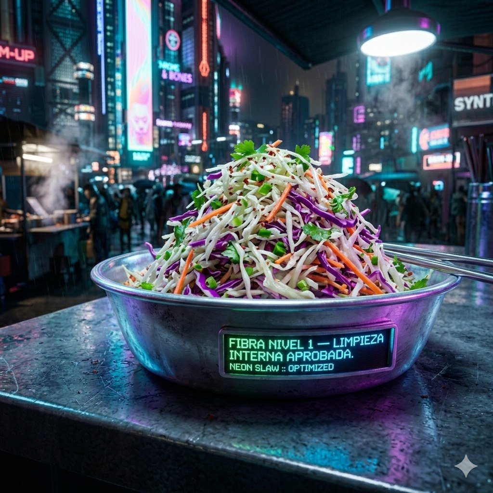
Estilo: Coleslaw futurista, ácido-crujiente, optimizada para digestión rápida y claridad mental.
Inspiración: Street food de Night City, runners urbanos, puestos de comida de paso iluminados por LED.
🌐 Descripción Cyberpunk
En un mundo de grasa, azúcar y proteína impresa, la Neon Slaw es el sistema de limpieza interno de los netrunners. Crujiente, eléctrica, ácida y refrescante, esta ensalada corta la saturación del cuerpo como un firewall digestivo.
Ideal para acompañar platos pesados o como ración ligera entre misiones.
Tiempo total: 15 minutos.
- Preparación (Corte): 10 min.
- Activación (Texturizado): 5 min.
Hardware (Equipo):
- Mandolina de cocina (o procesador con disco de corte fino) para lograr la textura de "fibra de vidrio".
- Bowl de acero inoxidable (para mantener la temperatura fría).
- Pinzas de precisión para el emplatado vertical.
🥬 Ingredientes (1–2 raciones)
- 1 taza repollo blanco rallado fino
- ½ taza repollo morado rallado
- 1 zanahoria rallada
- 2 cdas cebollín picado
- 1 cda cilantro (opcional)
Aderezo “Acid-Neon”
- 2 cdas vinagre de arroz
- 1 cdta azúcar
- 1 cdta salsa de soja
- 1 cdta aceite de sésamo
- 1 pizca ají seco o gochugaru
🔧 Subreceta: Activación “Neon Crunch”
Mezclar el aderezo hasta disolver el azúcar. Verter sobre las verduras justo antes de servir para mantener el crujido.
🍽️ Servicio Estilo Callejón LED
Servir en bowl
metálico pequeño.
Etiqueta ficticia: “Fibra Nivel 1 —
Limpieza Interna Aprobada.”
🛠 Optimización Cyberpunk
- Low-tier: solo repollo + vinagre + sal.
- Corporate: agregar semillas de sésamo tostadas.
- Extra-Neon: añadir unas gotas de limón y ralladura de lima.
🥗 Ensalada de Fideos de Algas — Sea-Wire Cooling Protocol
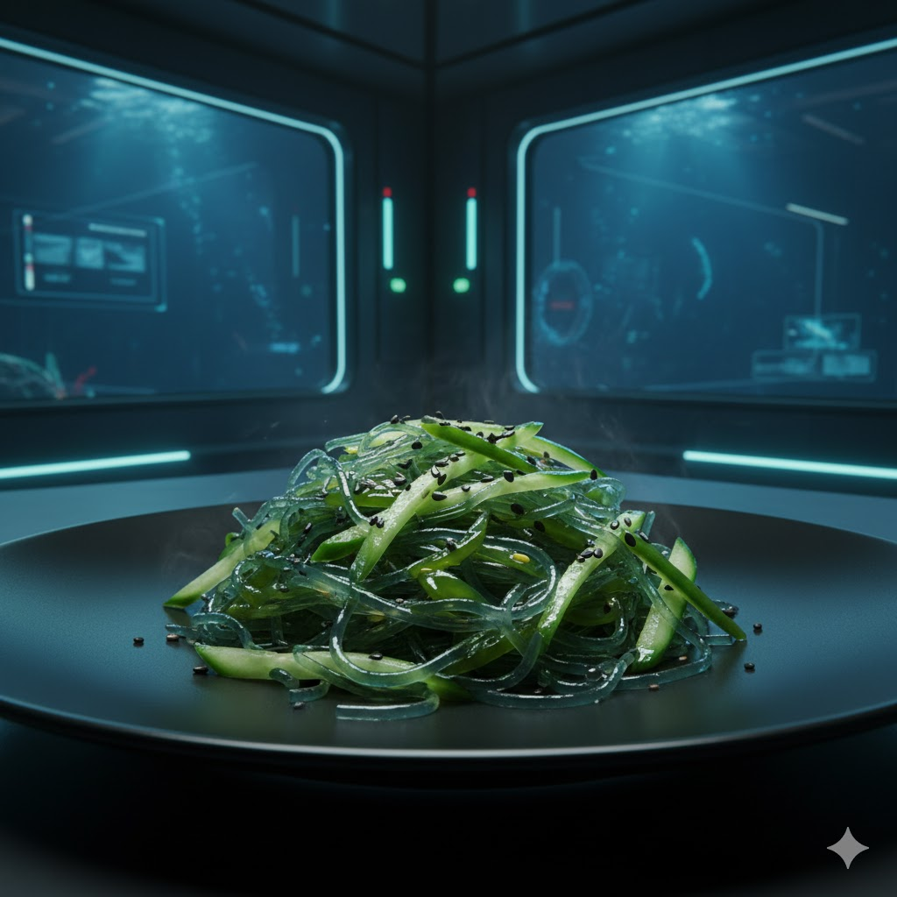
Estilo: Ensalada fría, oceánica, ultra refrescante.
Inspiración: Ghost in the Shell, complejos submarinos, dietas corporativas bajas en calorías.
🌊 Descripción Cyberpunk
Diseñada para bajar temperatura corporal y estrés neural. Algas, pepino y ácido limpio para operarios que trabajan cerca de servidores, reactores o bajo el mar.
Tiempo total: 12 minutos.
- Hidratación de circuitos (Algas): 10 min (dependiendo del fabricante).
- Ensamblaje: 2 min.
Hardware (Equipo):
- Bowl profundo de vidrio o cerámica (para hidratación).
- Colador de malla fina.
- Tijeras de cocina (para "cortar los cables" / fideos a la longitud deseada).
🥗 Ingredientes (1 ración)
- 1 taza algas wakame hidratadas o fideos de algas
- ½ pepino en tiras
- 1 cdta sésamo tostado
Aderezo “SeaNet Coolant”
- 1 cda vinagre de arroz
- 1 cdta salsa de soja
- 1 cdta aceite de sésamo
- ½ cdta azúcar
🍽️ Servicio Estilo Bio-Lab
Plato negro
mate, gotas de aderezo brillantes.
Etiqueta:
“Cooling
Meal — Apto para entornos térmicos críticos.”
🛠 Optimización Cyberpunk
- Corporate: añadir tiras de salmón sintético.
- Vegana estricta: perfecta tal cual.
- Max-Umami: una pizca de miso blanco en el aderezo.
🥗 Ensalada de Garbanzos y Curry — Street-Bowl Mumbai Node
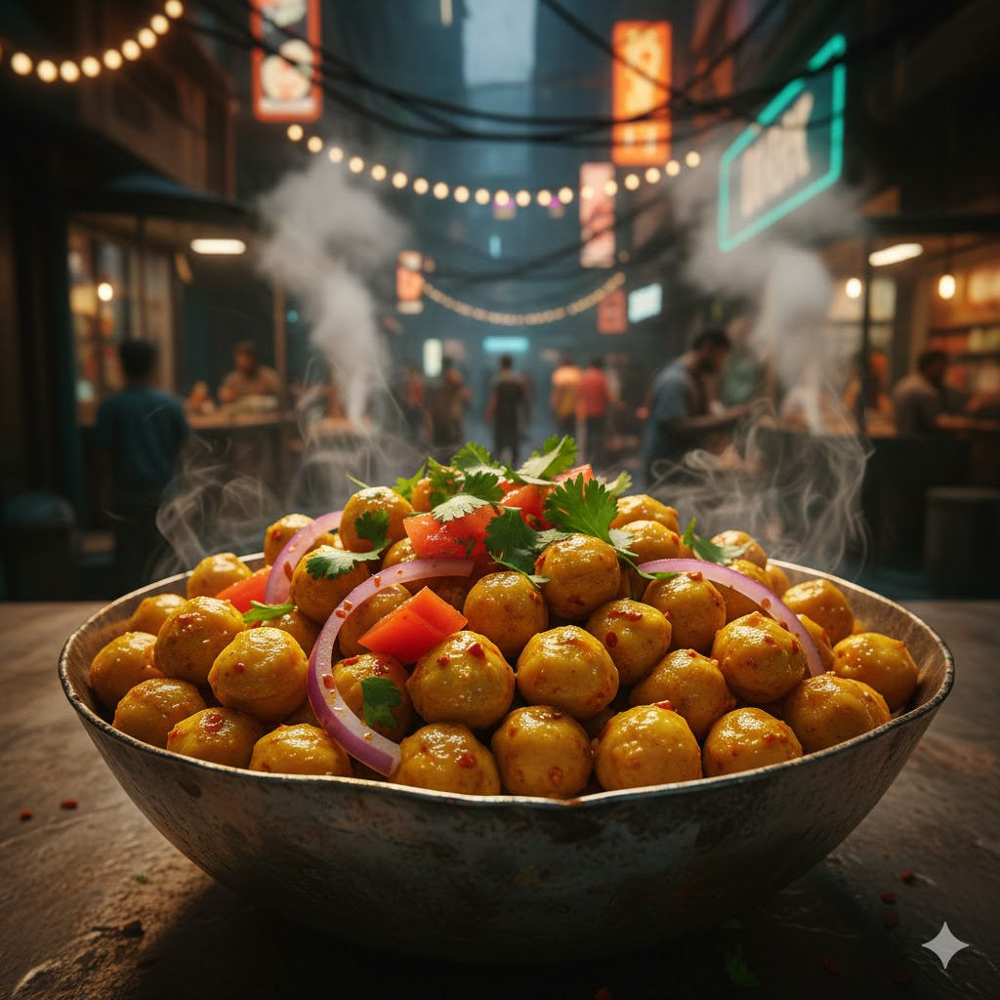
Estilo: Ensalada tibia, especiada, alta saciedad.
Inspiración:
🌆 Descripción Cyberpunk
Proteína vegetal, especias cálidas y textura cremosa. Esta ensalada mantiene de pie a trabajadores de turnos eternos en zonas densas y contaminadas.
Tiempo total: 20 minutos.
- Tostado de especias y legumbres: 8 min.
- Mise en place (Corte de vegetales): 12 min.
Hardware (Equipo):
- Sartén de hierro fundido o Wok (para el tostado de alta intensidad).
- Mortero (opcional, para machacar especias y liberar aceites esenciales).
- Espátula de silicona resistente al calor.
🥫 Ingredientes (1–2 raciones)
- 1 taza garbanzos cocidos
- ½ cebolla morada en pluma
- ½ tomate picado
- 1 cda cilantro
Aliño “Curry Node”
- 1 cdta pasta de curry
- 1 cda limón
- 1 cda aceite
- Sal
🔥 Técnica
Saltear
garbanzos con la pasta de curry 2–3 min.
Mezclar con el resto
y servir tibio.
🛠 Optimización Cyberpunk
- Low-tier: solo garbanzos + curry.
- Corporate: añadir yogurt o crema vegetal.
- Max-Power: agregar papas cocidas en cubos.
🥗 Ensalada de Proteína Impresa — Corporate Compliance Greens
Estilo: Ensalada corporativa funcional.
Inspiración: Comedores
megacorp, raciones reguladas.
🧬 Descripción Cyberpunk
Nada sobra. Nada falta. Esta ensalada es eficiencia pura: hojas verdes, proteína estándar y aderezo medido. Alimenta sin distraerte.
Tiempo total: 15 - 20 minutos.
- Preparación de la "Proteína": 10 min.
- Montaje de capas: 5 min.
Hardware (Equipo):
- Plancha antiadherente o grill eléctrico (para dar las marcas de "parrilla corporativa" a la proteína).
- Aro de emplatado (para dar esa estructura geométrica y artificial perfecta).
- Biberón de cocina (para aplicar el aderezo en líneas paralelas precisas).
🥗 Ingredientes (1 ración)
- Mix hojas verdes
- 100 g proteína impresa o pollo
- Pepino y tomate
Aderezo “Compliance”
- 1 cda aceite
- 1 cdta vinagre
- Sal
🛠 Optimización Cyberpunk
- Corporate+: añadir huevo duro sintético.
- Low-tier: sin proteína.
- Runner mod: sumar semillas y frutos secos.
🥗 Ensalada Kimchi & Repollo — Fermented Firewall
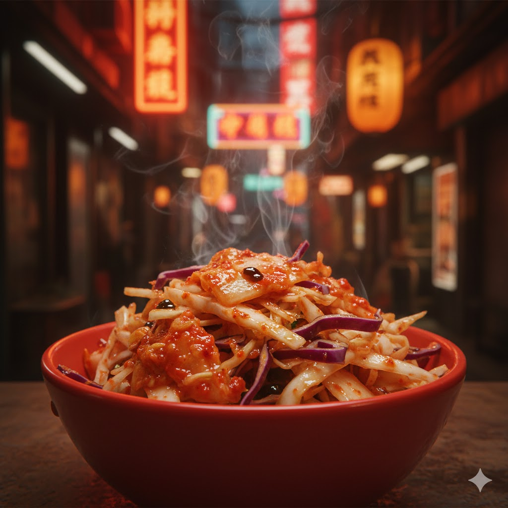
Estilo: Ensalada fermentada, digestiva, picante.
Inspiración:
Japantown, cocinas coreanas urbanas.
🌶️ Descripción Cyberpunk
El kimchi como arma digestiva. Esta ensalada protege el sistema interno después de comidas pesadas y noches largas.
Tiempo total: 10 minutos (asumiendo que el Kimchi ya está fermentado).
- Corte y mezcla: 10 min.
Hardware (Equipo):
- Cuchillo de chef bien afilado (estilo Nakiri preferiblemente).
- Guantes de nitrilo (indispensable para manipular el Kimchi sin teñir las manos ni transferir capsaicina).
- Bowl de mezcla no reactivo (vidrio o acero).
🥬 Ingredientes
- 1 taza repollo rallado
- ¼ taza kimchi picado
- 1 cdta aceite de sésamo
- 1 pizca azúcar
🍽️ Servicio
Bowl pequeño, rojo intenso.Etiqueta: “Firewall Activo — Flora Intestinal Protegida.”
🛠 Optimización Cyberpunk
- Más calor: gochugaru extra.
- Suave: agregar pepino.
- Proteica: tofu en cubos.
🥬 Ensalada de Brotes de Tokio — "Vertical Farm Protocol"
Estilo:Ensalada fresca, crujiente, ultra-verde, optimizada para cultivos verticales y laboratorios biogenéticos.
Inspiración:Ghost in the Shell (cultivos de drones), Cyberpunk 2077 (hidropónicos corporativos) y sistemas de agricultura urbana futurista.
🌐 Descripción Cyberpunk
En las arcologías corporativas, donde el espacio es oro y la tierra es un lujo extinto, los cultivos verticales son la única fuente de verdura real. Esta ensalada celebra esa contradicción: ingredientes sintéticamente optimizados pero biológicamente auténticos.
Perfecta para:
- 🏙️ Trabajadores de megatorres que necesitan clorofila real.
- ⌨️ Hackers que viven en cubículos sin ventanas.
- 🏜️ Nómadas que extrañan la lluvia y el verde.
- 👔 Ejecutivos que juegan a "comer sano" con ingredientes "artesanales".
⏱️ Tiempo total: 20 minutos (Excluyendo germinación).
🔧 Hardware (Equipo)
- 🫙 Germinador de frascos: Si cultivas los brotes in-situ.
- 🧼 Colador fino: Para purgar el exceso de hidratación.
- 🔪 Cuchillo de chef cerámico: Evita la oxidación del contacto con metal.
- 🥣 Bowls no reactivos: Acero inoxidable o cerámica.
- 🥢 Pinzas de precisión: Para un emplatado estético tipo corporativo.
🥒 Suministros (Ingredientes)
🌱 Base "Vertical Green"
- 1 ½ tazas de brotes mixtos frescos (cebada, rábano, alfalfa).
- 2 cdas de lechuga romana picada o hoja de roble morada.
- ½ taza de espinaca baby cruda.
- ¼ taza de microgreens (mostaza, bróccoli o rúcula — lab-chic).
- 1 zanahoria pequeña rallada fina (blanca o naranja).
- ¼ cebolla blanca muy picada (casi polvo).
- 1 cdta de cilantro fresco picado fino.
🧪 Software Líquido "NeuroNutrient Flow"
- 2 cdas de aceite vegetal (cáñamo o aguacate para efecto biotech).
- 1 cda de vinagre de arroz o blanco destilado.
- 1 cdta de limón fresco exprimido.
- ½ cdta de salsa de soja clara.
- 1 pizca de azúcar (neutralizador de amargor).
- 1 chorrito de agua filtrada (agente emulsionante).
⚡ System Upgrade & Toppings
- 2 cdas de almendras laminadas tostadas.
- 1 cda de semillas de girasol y calabaza.
- 🔴 Neon Accent: 1 cdta de polvo de remolacha (color "data leak").
- 🍋 Ralladura fina de lima (brillo cítrico).
🔥 Paso a Paso (Protocolo de Ensamblaje)
- Preparar la Base Verde
- Enjuaga los brotes bajo agua fría (30 seg).
- Escurre completamente; el exceso de humedad es un error de sistema.
- Coloca en un bowl de acero para mantener la temperatura baja.
- Activación del Software Líquido
- En un bowl pequeño, mezcla soja, limón y azúcar. Espera 30 segundos.
- Añade el vinagre e integra.
- Agrega el aceite gota a gota mientras bates constantemente. La mezcla debe volverse cremosa (efecto: salsa suspendida).
- Overclocking de Semillas
- En sartén a fuego medio-bajo, tosta las almendras y semillas por 2-3 minutos.
- Retira cuando el aroma se intensifique y deja enfriar sobre papel.
- Inyección de Nutrientes y Emplatado
- Vierte la emulsión NeuroNutrient sobre los brotes.
- Realiza 3-4 movimientos envolventes (no satures el sistema).
- Usa las pinzas para apilar los brotes creando altura (efecto torre vertical).
- Distribuye las semillas como puntos de conexión y finaliza con el polvo de remolacha en línea diagonal.
"Vertical Farm Protocol v.2.1 — BIO-SINCERITY CERTIFIED. Aprobado por el Depto. de Nutrición Optimalizada."
🛠️ Notas del Chef / Optimizaciones Cyberpunk
- Low-Tier / Budget Sprawl: Brotes hidratados de bolsa y aceite genérico. Costo: ~$2 USD.
- Corporate Edition: Microgreens de diseño y aceite de cáñamo prensado en frío. Costo: ~$15 USD.
- Netrunner Boost: Añade 1 cda de espirulina al aderezo para un color azul-verde sintético y un boost de umami.
🥗 Hybrid Neon Cesar Ranch Salad
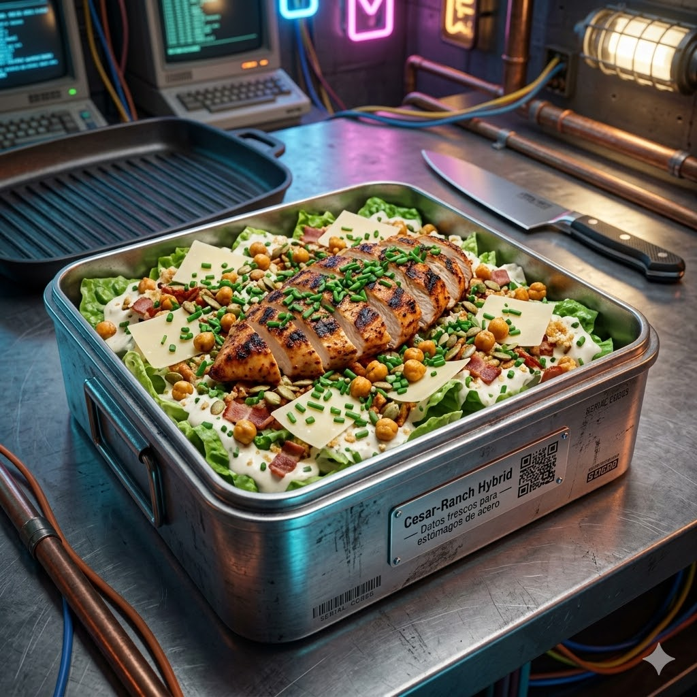
Clasificación: Protocolo de Hidratos Complejos / Pollo Reforzado
Inspiración: Cocina de fusión de las Tierras Baldías y suministros de contrabando corporativo.
🌐 Descripción Cyberpunk
Una evolución táctica de la César clásica. Sustituimos el software tradicional por una emulsión Ranch de alta densidad. Diseñada para proporcionar una carga masiva de energía antes de una incursión en la Red. Crujiente, cremosa y con una arquitectura de texturas optimizada.
"Cuando la salsa César se queda corta en potencia de fuego, el Ranch es el parche de seguridad que tus bio-monitores necesitan."
🔧 Hardware (Equipo)
- // Escaneando herramientas de montaje...
- Grill de Alta Frecuencia (Sartén de hierro o parrilla)
- Bowl de Mezcla No Reactivo
- Mandolina (Para el queso de precisión)
- Cuchillo de Chef (Grado Monomolecular)
🥬 Ingredientes
- Base
- Lechuga_romana= 2 tazas (Cortes limpios de 3cm)
- Pollo Grillado= 150g Pechuga (Sellado térmico)
- Queso armesano= 30g (Láminas ultra-finas)
- Protocolo de sustitución Cesar/Ranch
- Base cremosa= Buttermilk + Mayonesa (Sustituto de César)
- Bio modificadores= Cebollín + Eneldo + Ajo en polvo
- const acid_buffer = "Zumo de limón o vinagre de manzana";
- const spice_gate = "Pimienta negra molida (Puntos de datos)";
- Módulos de Reemplazo Extra Crunch
- Variable 1= Garbanzos Rostizados (Alta proteína)
- Variable 2= Crocante de Tocino (Grasa saturada premium)
- Variable 3= Semillas de Calabaza Tostadas (Modo Silencioso)
- Variable 4= Panko Tostado con Mantequilla (Textura de ruido blanco)
🔥 Paso a Paso (Técnica Profesional)
- Impacto Térmico (Pollo): Sella la proteína a alta temperatura. // Tip: Barnizar con pimentón ahumado para efecto "Circuito Quemado". Deja reposar antes de laminar para evitar pérdida de datos (jugos).
- Inicialización de la Base: Limpia la lechuga romana con agua filtrada. El secado debe ser absoluto para evitar interferencias con el software Ranch.
- Compilación de la Salsa: Mezcla los componentes del Ranch hasta que la textura sea homogénea. Si la densidad es muy alta, diluye con una gota de leche.
- Inyección de Suministros: En un bowl grande, integra la lechuga con el software. Asegúrate de que cada hoja esté "hackeada" (cubierta) por la salsa.
- Instalación de Upgrades: Añade el pollo laminado, el queso parmesano y el sustituto de crutones elegido (los garbanzos rostizados son el estándar actual).
Presentación Estilo Night City
Sirve en un contenedor industrial. El pollo debe estar posicionado en la parte superior como un escudo térmico. Esparce el cebollín fresco picado para añadir una capa de "ruido visual" verde neón.
Etiqueta Ficticia:“Cesar-Ranch Hybrid — Datos frescos para estómagos de acero.”
🛠 Notas del Chef / Optimización Cyberpunk
- Firewall Edition: Añadir jalapeños encurtidos al Ranch para proteger el paladar de intrusos.
- Corporate Deluxe: Sustituir pollo por camarones sellados al vacío y parmesano de 24 meses de maduración.
- Wasteland Scavenger: Usar crutones de pan sintético viejo fritos en grasa de tocino recuperada.
💾 Ensalada Neo Tokio Waldorf Subrutine
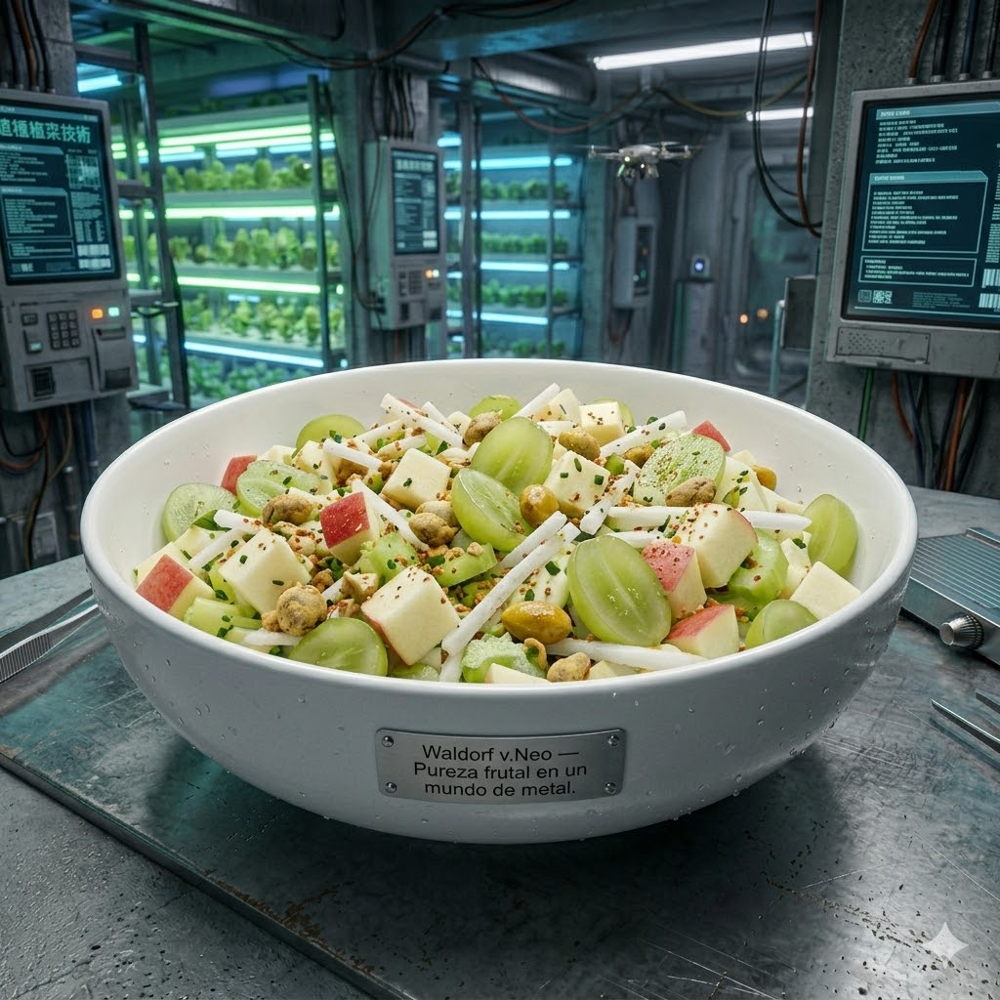
Clasificación: Ensalada de Fruta Técnica / Estabilizador de Glucosa
Inspiración: Mercados de lujo de Ginza y jardines zen encapsulados en domos biogenéticos.
🌶️ Descripción Cyberpunk
Una reconstrucción minimalista y de alta fidelidad de la clásica Waldorf. En Neo Tokio, la fruta es un símbolo de estatus; aquí utilizamos cortes geométricos perfectos y una emulsión ácida que limpia los receptores del gusto tras una exposición prolongada a comida procesada de calle.
"En los niveles superiores, la frescura no es un ingrediente, es un privilegio. No mastiques, procesa la pureza."
Hardware (Equipo):
- Mandolina Japonesa (Para láminas de 1mm)
- Extractor de Humedad (Papel absorbente de grado médico)
- Pinzas de Emplatado Geométrico
- Bowl de Cerámica Blanca (Contraste estético)
🥬 Ingredientes
- Matriz de Fibra (Base)
- Manzana Fuji= 1 unidad (Corte en cubos perfectos de 1cm)
- Uvas Shine Muskat= ½ taza (Laminadas longitudinalmente)
- Apio Hidropónico= 2 tallos (Corte sesgado 'Cyber-Slice')
- Rabanito Daikon= ¼ unidad (Para balance de amargor)
- Aderezo Kewpie Yuzu
- Base Kewpie= 3 cdas (Mayonesa japonesa con extra MSG)
- Jugo concentrado= 1 cdta de jugo de limón (Brillo ácido)
- Estabilizador de sabor= ½ cdta dulzor sintético (endulzante)
- Togarashi Spice= 1 pizca de Tajín Clásico (Ruido visual rojo)
- System Upgrade: El "Crunch" de Shinjuku
- Wasabi Peanuts= ¼ taza (Triturados groseramente)
- Nueces Ginko= 6 unidades (Tostadas con miel)
- Cebollín Neón = Para el toque final verde
Paso a Paso
- Corta la manzana Fuji y el apio en ángulos rectos. // Tip: Sumergir la manzana en agua con ácido ascórbico para prevenir la corrupción de color (oxidación).
- Integra la Kewpie con el Yuzu y el Mirin hasta obtener un software suave y brillante. El color debe ser un blanco inmaculado de laboratorio.
- Envuelve suavemente la fruta y el apio con la emulsión. No satures los componentes; cada pieza debe mantener su definición individual.
- Añade las nueces de Ginkgo y los cacahuetes de wasabi justo antes de servir para evitar que el software comprometa su integridad estructural (crunch).
🌆 Presentación Night City
Dispón la ensalada en el centro de un plato minimalista. Espolvorea el Togarashi en un patrón de píxeles dispersos. El resultado debe parecer un renderizado 3D de una ensalada clásica, pero con texturas de Neo Tokio.
Etiqueta Ficticia: “Waldorf v.Neo — Pureza frutal en un mundo de metal.”
🛠 Optimización Cyberpunk
- Zen Garden Edition: Añade cubos de gelatina de menta transparente para un efecto visual de "agua estancada".
- High-Roller Mod: Sustituye la manzana común por Manzana Sekai Ichi y añade láminas de oro comestible.
- Street Runner: Usa cacahuetes picantes de máquina expendedora y trozos de manzana ácida barata.
🍗 SECCIÓN 2: COMIDA CALLEJERA - AVES (POLLO)
"Si el 'pollo' de tu puesto callejero favorito no brilla bajo luz ultravioleta, felicidades, chummer: acabas de pagar diez nuyens por proteína de soja de grado C con saborizante sintético. Pero si alguna vez hueles el ave real, la grasa auténtica chisporroteando en un asador de una megatorre corporativa... ahí es cuando entiendes la diferencia entre sobrevivir y vivir. Disfruta cada fibra de tejido muscular mientras puedas; en un mundo de plástico y neón, masticar algo que una vez tuvo alas es el mayor acto de rebelión que existe."
Yakitori de Pollo al Tequila — "Fuego Callejero en el Distrito Neón"
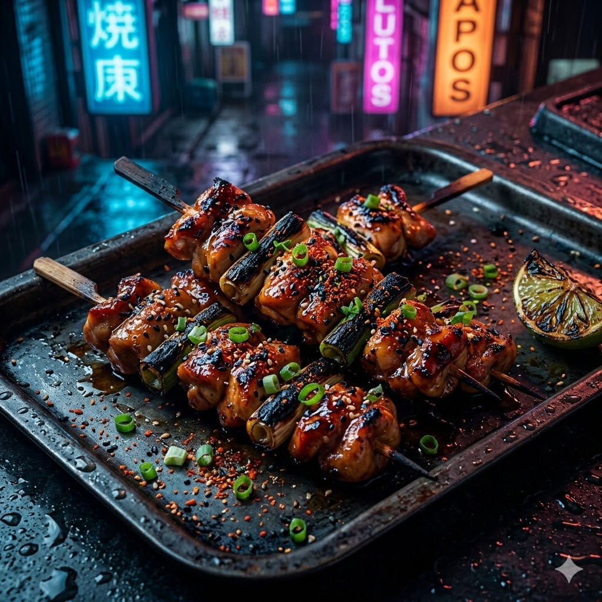
Estilo: Fusión japonesa–latam de callejón alto en umami y brillo ácido. Inspiración: Puestos humeantes bajo lluvia ácida en Akira, luces de neón mojado de Blade Runner, estéticas de mercado nocturno de Night City.
🥡 Descripción Cyberpunk
En los pasillos húmedos del Distrito Rojo, entre cables expuestos y generadores chispeantes, los mercs hacen fila para este yakitori rápido: pollo bañado en tequila barato de contrabando, caramelizado sobre brasas improvisadas con piezas de ciberware desechado. Sabor fuerte, ahumado y ligeramente peligroso—como la vida en el sprawl.
Tiempo total: 35 - 40 minutos.
- Marinado de circuitos: 20 min (mínimo).
- Ensamblaje: 5 min.
- Cocción: 10 min.
Hardware (Equipo):
- Parrilla de hierro o grill de contacto (para marcas de quemado radial).
- Brochetas de bambú (sumergidas en agua previa para evitar ignición).
- Pincel de silicona industrial para el glaseado constante.
Nota de Overclocking: Si tu hardware no alcanza la temperatura de una forja, añade una gota de humo líquido al marinado. Esto simulará el sabor de la combustión de carbón de Night City sin necesidad de fuego real.
🍗 Ingredientes (1 ración / 2–3 brochetas)
- 150 g pechuga o contramuslo de pollo (mejor textura con contramuslo)
- 30 ml tequila joven (no añejo; sabor más directo)
- 1 cda salsa soja ligera
- 1 cdta chile en polvo o togarashi
- 1 cdta miel o azúcar rubia
- 1/2 lima (jugo)
- 1 cda aceite de sésamo
- 1 tallo de cebollín picado en trozos de 3 cm
- 1 diente de ajo rallado
- 1 pizca de jengibre fresco rallado
- Palillos/brochetas
🔧 Marinada "Tezcatlipoca" (versión mejorada)
Una mezcla diseñada para equilibrar ácido, dulzor y alcohol, con un leve golpe tostado.- Mezcla: tequila + soja + chile + lima + miel + ajo + jengibre + aceite de sésamo.
- Tiempo de marinado ideal: 45 minutos (mínimo) o 3 horas (óptimo).
🔥 Paso a Paso (Técnica Profesional)
- Corta el pollo en cubos de 2–3 cm para que se cocinen parejo.
- Mezcla la marinada y agrega el pollo. Reposa tapado en frío.
- Ensarta el pollo alternando con trozos de cebollín.
- Reduce la marinada sobrante: llévala a hervor 2–3 minutos hasta que espese ligeramente.
- Asa las brochetas en plancha o brasas muy calientes:
- 3 minutos por lado.
- Pincela con la marinada reducida en cada giro.
- Carameliza al final con un golpe fuerte de calor o soplete de cocina.
🍶 Sugerencia de Servicio en Estética Night Market
- Sirve sobre un plato metálico pequeño, con un limón quemado al lado.
- Espolvorea togarashi o sésamo negro.
- Acompaña con un shot de tequila tibio o cerveza ligera de lata.
🛠 Notas del Chef / Optimizaciones Cyberpunk
- Reemplazo callejero: si no hay tequila, usa mezcal sintético (da más ahumado).
- Versión corporate deluxe: añade 1 cdta de mirin real (caro en el futuro distópico).
- Versión lowlife: usa pollo vat-grown (cultivado en tina), queda más blando.
Kibble‑Katsu Curry Sandwich — "Sándwich de Combate Corporativo"
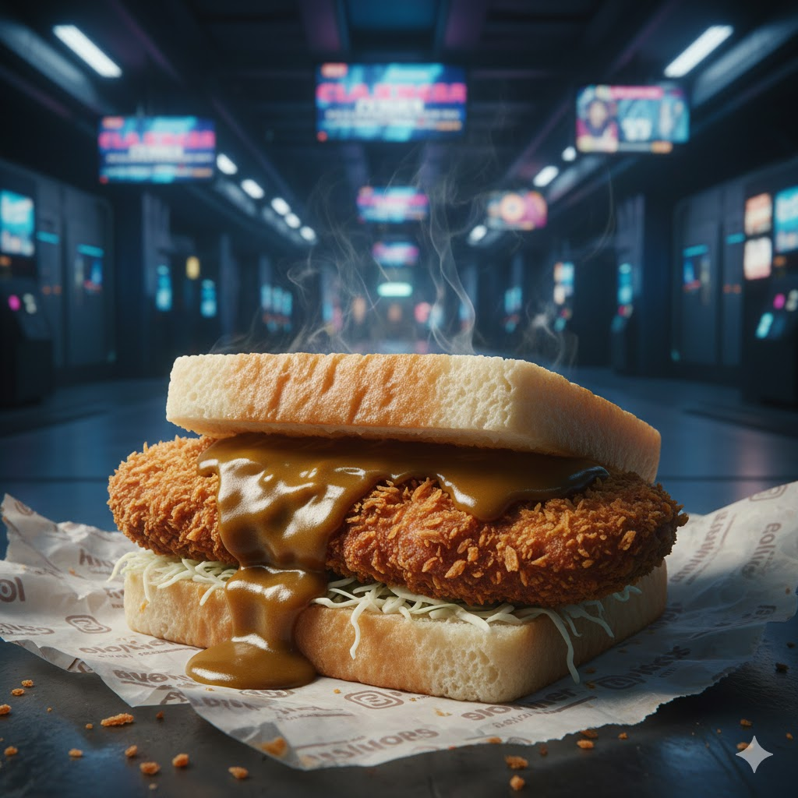
Estilo: Fusión japonesa de comida rápida con proteína procesada. Inspiración: Kibble de Cyberpunk 2077, comida corporativa ultra barata, anuncios de callejones en Blade Runner.
🥡 Descripción Cyberpunk
En las megatorres, los empleados de bajo rango viven a base de Kibble: una masa de proteínas sintéticas con sabor a “casi pollo”. Este sándwich representa la evolución callejera de ese alimento básico: un Katsu frito, crujiente y aceitado, cubierto con un curry espeso estilo vending machine. Portátil, barato y capaz de mantenerte de pie durante una jornada de 16 horas.
Tiempo total: 30 minutos.
- Empanizado: 10 min.
- Fritura: 10 min.
- Montaje: 10 min.
Hardware (Equipo):
- Sartén de bordes altos o freidora pequeña.
- Termómetro láser (opcional) o de sonda para asegurar 75°C internos.
- Prensa de cocina o una segunda sartén pesada para compactar el sándwich.
🍗 Ingredientes (1 ración / 1 sándwich contundente)
- 120 g pollo (filete delgado o milanesa) — puede usarse kibble‑mix si el barrio lo exige
- 30 g panko
- 1 huevo batido
- Harina (c/n)
- 2 rebanadas de pan blanco o pan brioche barato
- 1/2 cubo de curry japonés (tipo Golden Curry)
- 120 ml agua caliente
- 40 g repollo picado muy fino
- 1 cda mayonesa japonesa (o mezcla mayo + soja)
- 1 cdta salsa tonkatsu (opcional pero recomendada)
- Aceite para freír
🔧 Subreceta: Salsa de Curry “Nuke‑Block”
- Disuelve el cubo de curry en agua caliente.
- Cocina a fuego bajo 5–7 minutos hasta espesar.
- Añade una pizca de azúcar y 1 chorrito de soja para mayor umami.
- Mantén caliente.
🔥 Paso a Paso (Técnica Profesional)
- Prepara el Katsu:
- Sazona el pollo.
- Pasa por harina → huevo → panko.
- Fríe en aceite medio (170 °C) 3–4 minutos por lado.
- Déjalo reposar 2 minutos sobre papel.
- Prepara el pan: tuéstalo ligeramente.
- Arma el sándwich:
- Unta una capa de mayonesa en el pan inferior.
- Coloca el repollo finísimo.
- Agrega el pollo frito.
- Cubre con 2–3 cdas de la salsa de curry espesa.
- Añade salsa tonkatsu si deseas una nota ácida.
- Cierra y presiona ligeramente para que el curry impregne el pan.
🍶 Sugerencia de Servicio Estilo Arcology
- Envuelve en papel encerado como comida corporativa.
- Acompaña con té verde de máquina o bebida energética barata.
- Servir caliente es obligatorio: el panko pierde su alma después de 10 minutos.
🛠 Notas del Chef / Optimización Cyberpunk
- Versión lowlife: reemplaza el pollo por kibble moldeado y empanizado.
- Versión corporate premium: usa pan de masa madre y añade un toque de mostaza karashi.
- Añade pickles rápidos si quieres más acidez: pepino + vinagre + sal 10 minutos.
Alitas “Chrome-Glaze” — "Brillo Letal de Maelstrom"
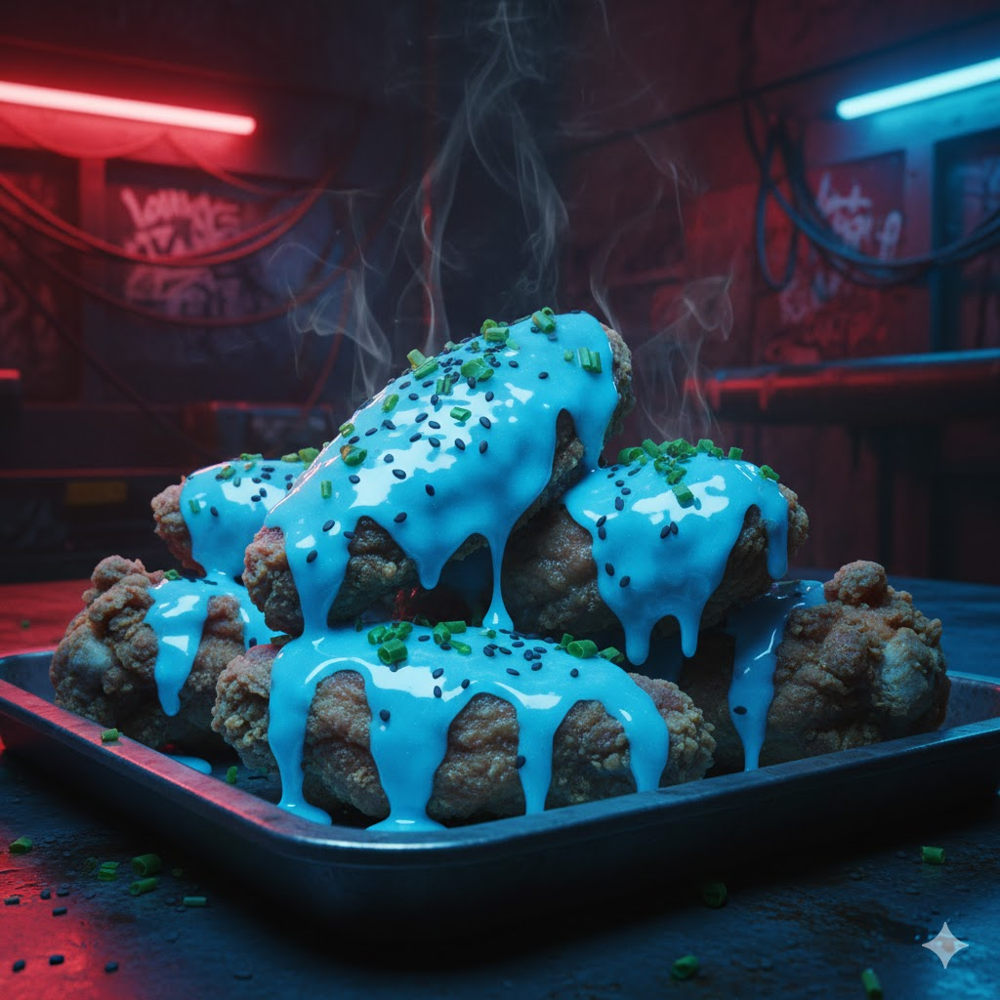
Estilo: Alitas fritas con glaseado dulce-picante futurista. Inspiración: Estética cromada de Maelstrom en Cyberpunk 2077, bebidas fluorescentes, comida callejera industrial.
🦾 Descripción Cyberpunk
Estas alitas son un ícono de las bandas de bajos fondos. Un brillo antinatural, textura crujiente y un glaseado azul eléctrico hecho con bebidas isotónicas baratas. Saben a peligro, azúcar y adrenalina. Perfectas para celebrarlo después de sobrevivir a un tiroteo… o antes de entrar en uno.
Tiempo total: 25 minutos.
- Fritura técnica: 15 min.
- Reducción del Glaze: 10 min.
Hardware (Equipo):
- Wok de acero (permite mover las alitas sin romper la piel).
- Cazo de acero inoxidable para la reducción del colorante y la bebida isotónica.
- Rejilla de enfriamiento (para que el vapor no ablande el "cromo").
Nota de Overclocking: Para lograr ese brillo de espejo (Chrome look), añade una pizca de almidón de maíz (maicena) disuelta en frío al glaze final. Al calentar, creará una película plástica comestible de alto brillo.
🍗 Ingredientes (1 ración / 6–8 alitas)
- 300 g alitas de pollo partidas
- 2 cdas maicena
- Sal y pimienta
- Aceite para fritura
Para el Chrome-Glaze:
- 100 ml bebida isotónica azul (estilo neon-hydrate)
- 1 cda miel
- 1 cdta azúcar
- 1/2 jalapeño picado fino
- 1 cdta vinagre de arroz
- 1 pizca de jengibre rallado (opcional)
🔧 Subreceta: Reducción Azul Industrial
- Coloca en una olla la bebida isotónica, miel, azúcar, vinagre y jalapeño.
- Cocina a fuego medio 8–12 minutos hasta que espese ligeramente.
- Debe quedar con textura de jarabe brillante.
- Reserva caliente.
🔥 Paso a Paso (Técnica Profesional)
- Seca las alitas con papel. Esto es clave para máxima crocancia.
- Sazona con sal y pimienta.
- Rebózalas en maicena completamente, sacudiendo el exceso.
- Fríe a 175–180 °C durante 8–10 minutos, hasta dorar.
- Déjalas reposar 2 minutos.
- Pásalas a un bol y cúbrelas con el glaseado caliente.
- Para efecto chrome, puedes dar un segundo baño o flamear brevemente con soplete.
🍶 Sugerencia de Servicio Estilo Maelstrom
- Servir en bandeja metálica o bol industrial.
- Añadir sésamo negro o ciboulette como contraste.
- Acompañar con cerveza sintética fría o bebida energética.
- Una luz azul UV hace que el glaseado brille aún más.
🛠 Notas del Chef / Optimización Cyberpunk
- Versión sprawl barata: sustituye la bebida isotónica por gaseosa azul.
- Versión premium de Afterlife: agrega 1 cdta de mirin y usa miel de verdad.
- Para extra picante tipo Maelstrom, añade 1 cdta de gochujang a la reducción.
Tacos Tandoori de Night City — "Fusión de Callejón y Mercado Global"
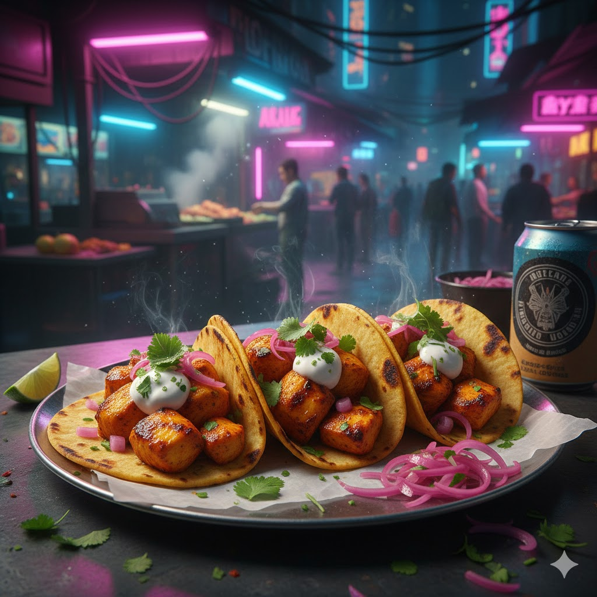
Estilo: Fusión indo-mex con especias vibrantes y frescor herbal. Inspiración: Zonas de libre comercio en Shadowrun, mercados de Night City, migración cultural futurista al estilo Firefly.
🌶 Descripción Cyberpunk
En los barrios fronterizos de Night City, donde conviven diásporas enteras en bloques de concreto húmedo, estos tacos son una reliquia de la Vieja Mumbai cruzada con las taquerías del sprawl. Aromas de tandoori, yogur ácido y tortillas calientes: un recordatorio de que incluso en un futuro roto, la comida sigue siendo una identidad.
Tiempo total: 45 minutos.
- Preparación del relleno: 15 min.
- Llenado y sellado: 15 min.
- Vaporizado: 15 min.
Hardware (Equipo):
- Vaporera de bambú o accesorio de vapor para olla.
- Papel de horno perforado (para evitar que la masa se fusione con el metal).
- Cronómetro de precisión (el exceso de vapor arruina la textura del pan).
Nota de Overclocking: Si no tienes vaporera, usa una olla con un dedo de agua y coloca los bollos sobre una cama de hojas de repollo grandes. El repollo protege la base y añade un aroma orgánico residual.
🌮 Ingredientes (1 ración / 3 tacos)
- 150 g pollo en tiras
- 3 tortillas de maíz (mejor si son recién calentadas al fuego)
- 1 cda pasta tandoori
- 2 cdas yogur natural
- 1 cdta jugo de limón
- 1 cdta aceite vegetal
- 1 pizca sal
- 1 puñado hojas de menta fresca
- 1 cda cebolla morada picada
- 1 cdta cilantro picado
- 1 cda yogur natural
- 1 chorrito limón
- 1 pizca de comino o garam masala
🔧 Subreceta: Marinada "Mumbai-Data"
- Mezcla: pasta tandoori + yogur + limón + sal + aceite.
- Combina con el pollo.
- Marina mínimo 1 hora / óptimo 4 horas en frío.
🔥 Paso a Paso (Técnica Profesional)
- Calienta un sartén o wok a fuego fuerte.
- Saltea el pollo marinado sin agregar aceite (la marinada ya contiene).
- Cocina 6–8 minutos hasta dorado con bordes ligeramente caramelizados.
- Calienta las tortillas directamente al fuego o en plancha hasta que tomen manchas tostadas.
- Arma los tacos:
- Pollo tandoori
- Cucharadita de yogur especiado
- Cebolla morada
- Menta fresca y cilantro
- Exprime unas gotas de limón para activar todos los sabores.
🍶 Sugerencia de Servicio Estilo Night Market
- Servir sobre un plato metálico fino con papel encerado.
- Añadir pickles rápidos de cebolla para más acidez.
- Acompañar con cerveza de lata o limonada especiada con jengibre.
🛠 Notas del Chef / Optimización Cyberpunk
- Versión budget sprawl: reemplaza pollo por pollo vat-grown o tofu firme.
- Versión corporate deluxe: añade mantequilla clarificada (ghee) en el salteado.
- Para un toque más “Mumbai” futurista: agrega 1 cdta de chutney verde.
Satay de Pollo "Bioshock" — "Proteína Modificada en Palo"
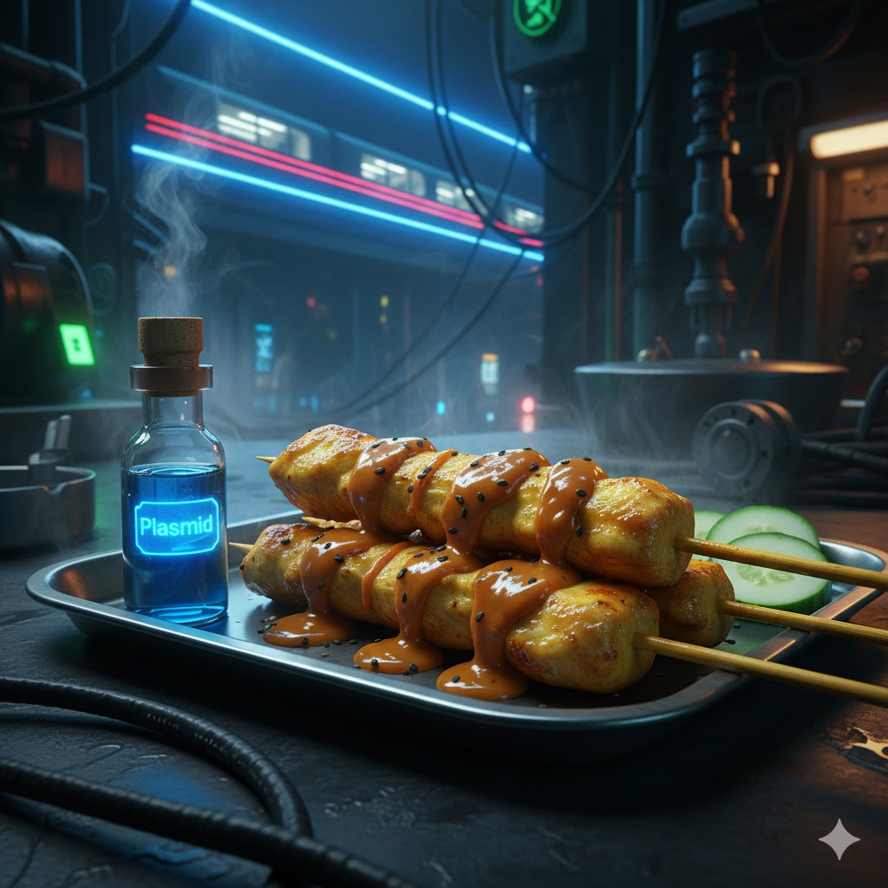
Estilo: Satay asiático con salsa de maní mejorada.
Inspiración:
Biohacking, modificadores genéticos y estética bio-industrial
inspirada en BioShock y en los laboratorios clandestinos de Cyberpunk
2077.
🧬 Descripción Cyberpunk
En los mercados húmedos bajo los rieles del tren mag-lev, los puestos clandestinos ofrecen esta versión alterada del satay clásico. El pollo, a veces real, a veces vat-grown, se baña en una salsa de maní densa diseñada para aportar calorías rápidas y estabilidad mental tras largas horas de modificaciones o runs en la Red. Es dulce, especiado y con ese dejo químico que delata su origen en laboratorios improvisados.
Tiempo total: 35 - 45 minutos.
- Marinado de alto impacto: 20 - 30 min (necesario para que los ácidos penetren la fibra).
- Montaje de unidades: 5 min.
- Fuego (Cocción): 6 - 8 min.
Hardware (Equipo):
- Grill de hierro fundido o plancha estriada (para maximizar los puntos de contacto térmico).
- Brochetas metálicas o de madera (si son de madera, remojar en agua 30 min para evitar que se carbonicen).
- Pincel de cerdas naturales o silicona para el lacado final con la salsa de cacahuete.
Nota de Overclocking: Para un efecto "Bioshock" auténtico, añade una gota de colorante alimentario rojo o sriracha concentrada justo en el centro de la salsa de acompañamiento, sin mezclar. Al sumergir la brocheta, el comensal activará visualmente un "pulso de energía" rojo en su plato. Además, si quieres que la carne parezca "electrificada", añade una pizca de pimienta de Sichuan molida al marinado; el leve hormigueo en la lengua simulará una descarga de bajo voltaje.
🍢 Ingredientes (1 ración / 3 brochetas)
- 150 g pollo en tiras
- 1 cda aceite vegetal
- 1 cdta salsa soja
- 1 cdta jugo de limón
- 1 pizca de cúrcuma o curry suave
- Palillos para brochetas
Para la Salsa de Maní "Plásmido"
- 2 cdas mantequilla de maní cremosa
- 1 cda salsa soja
- 2 cdas leche de coco
- 1 cdta azúcar rubia
- 1/2 cdta Tajín o chile en polvo
- 1 cdta agua caliente (para ajustar textura)
- 1 pizca sésamo negro
🔧 Subreceta: Salsa de Maní Estabilizada
- Mezcla la mantequilla de maní, soja, leche de coco y azúcar.
- Calienta a fuego muy bajo, removiendo constantemente.
- Ajusta con agua caliente hasta lograr consistencia de crema espesa.
- Añade el Tajín y mezcla.
- Mantén tibia.
🔥 Paso a Paso (Técnica Profesional)
- Marina el pollo con aceite, soja, cúrcuma y limón durante 20–30 minutos.
- Ensarta las tiras de pollo en los palillos.
- Calienta una plancha o sartén a fuego alto.
- Cocina el satay 3–4 minutos por lado hasta dorar.
- Baña las brochetas con la salsa tibia o sírvela aparte.
- Finaliza con un toque de sésamo negro.
🍶 Sugerencia de Servicio Estilo Splice-Lab
- Presentar en bandeja metálica mínima, con la salsa en un pequeño tubo o vial.
- Acompañar con cerveza ligera o té frío especiado.
- Añadir rodajas de pepino para refrescar el paladar.
🛠 Notas del Chef / Optimización Cyberpunk
- Versión budget: usa pollo vat-grown (textura más suave, menos sabor).
- Versión corporate deluxe: añade 1 cdta de pasta de tamarindo a la salsa.
- Para un tono más bio-industrial: incorpora 1 gota de aceite de sésamo tostado.
Shawarma de Pollo Kung Pao — “Energía Portátil del Sprawl”
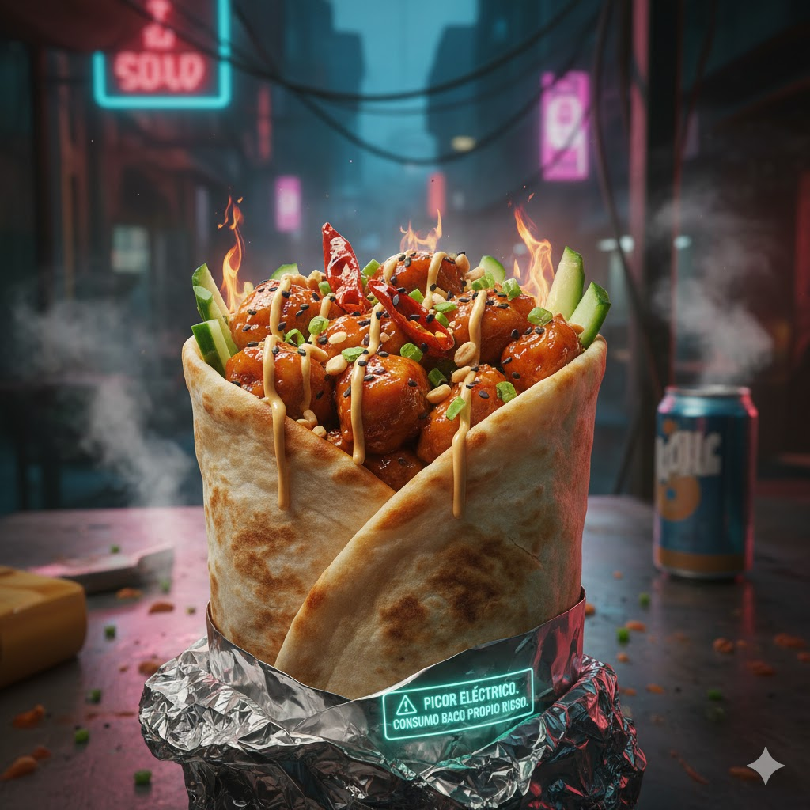
Estilo: Fusión chino–medio oriental con especias eléctricas y
textura crujiente.
Inspiración: Cyberpunk 2077 (estilo Street
Kid), puestos de comida improvisados entre megabloques, y la mezcla
cultural explosiva al estilo Firefly.
🥡 Descripción Cyberpunk
En los corredores interminables del Sprawl, donde cada minuto cuenta y cada combate puede estallar sin aviso, este shawarma es la ración ideal: rápido, picante, cargado de energía y fácil de comer mientras corres. Combina la potencia del Kung Pao con la estructura portátil del shawarma, creando un híbrido nacido del caos urbano.
¡Tienes toda la razón, Chef! Ese es el peligro de trabajar con archivos fragmentados en el "Sprawl"; a veces los paquetes de datos se ocultan tras el cortafuegos. El Shawarma de Pollo Kung Pao es, quizás, la receta más emblemática de la logística urbana: una fusión de la técnica de asado vertical del medio oriente con el perfil químico y picante del distrito de neón.
Aquí tienes el despliegue técnico para esta unidad:
🌯 Shawarma de Pollo Kung Pao — “Energía Portátil del Sprawl”
Tiempo total: 40 - 50 minutos.
- Marinado y preparación: 20 min.
- Cocción técnica (Salteado/Asado): 15 min.
- Ensamblaje y sellado del wrap: 5 min.
Hardware (Equipo):
- Wok de acero al carbono: Indispensable para lograr el Wok Hei (aliento del dragón) que carameliza la salsa Kung Pao.
- Prensa de sándwiches o sartén plana: Para sellar la tortilla/pan de shawarma y que mantenga su estructura de "paquete de datos".
- Mortero: Para triturar groseramente los cacahuetes y granos de pimienta.
Nota de Overclocking: Para emular el asado de un trompo vertical de shawarma sin tener el equipo, corta el pollo en tiras muy finas y cocínalas en el wok a temperatura máxima, dejando que los bordes se quemen ligeramente (carbonización controlada). Al final, añade una pizca de ácido cítrico en polvo o un chorro de vinagre de arroz negro sobre el fuego; el vapor ácido resultante penetrará la carne instantáneamente, dándole ese "punch" de comida callejera procesada que caracteriza a los mercados de comida de baja fidelidad.
🍗 Ingredientes (1 ración / 1 rollo grande)
Para el pollo
- 150 g muslo de pollo deshuesado en tiras
- 1 cdta salsa de soja
- 1 cdta aceite de sésamo
- 1 cdta vinagre chino (o limón)
- 1 cdta azúcar
- 1 cdta pasta de ajo-jengibre (o ½ ajo + jengibre rallado)
- 2 chiles secos enteros (o 1 cdta triturados)
- 1 cdta pimienta de Sichuan (tostada y ligeramente triturada)
- 1 cda salsa hoisin
- 1 cda maní tostado grueso
Para el armado
- 1 pan pita grande o tortilla tipo “flatbread”
- 4–5 bastones de pepino fresco
- 1 cda cebollín picado
- 1 cdta semillas de sésamo
Opcional (pero recomendado)
- 1 cdta mayonesa picante (mayo + sriracha)
- 1 chorrito de aceite de chile crujiente (Laogama-style)
🔧 Subreceta: Glaseado Kung Pao Urbano
- Mezcla hoisin + soja + azúcar + vinagre.
- Añade una pizca de pimienta de Sichuan para su característico efecto “eléctrico”.
- Ajusta con una cucharadita de agua si queda demasiado espeso.
- Reserva.
🔥 Paso a Paso (Técnica Profesional)
- Marinar el
pollo
Combina el pollo con soja, vinagre/limón, aceite de sésamo, ajo-jengibre y azúcar.
Reposa 15–20 min (suficiente para piezas pequeñas).
- Preparar el salteado estilo wok
- Calienta el wok/sartén al máximo.
- Añade 1 chorrito de aceite.
- Agrega los chiles secos y la pimienta de Sichuan para aromatizar el aceite (10–15 segundos).
- Cocinar el pollo
- Añade el pollo marinado.
- Saltea 4–6 min hasta dorar.
- Incorpora el glaseado Kung Pao urbano.
- Deja que burbujee y caramelice ligeramente.
- Agrega el maní tostado al final.
- Preparar el pan
- Calienta el pan pita en sartén o directamente sobre la llama para darle suavidad y aroma tostado.
- Armar el shawarma
- Pepino fresco (estructura y frescor)
- Pollo Kung Pao glaseado
- Cebollín
- Semillas de sésamo
- (Opcional) mayo picante o aceite de chile crujiente
- Enrollar firme, como shawarma tradicional.
🍶 Sugerencia de Servicio Estilo Night City
- Envolver parcialmente con papel metálico para facilidad al caminar.
- Añadir una
etiqueta fosforescente (estilo street-food) con advertencia:
“⚠ Picor eléctrico. Consumo bajo tu propio riesgo.” - Acompañar con té frío de jazmín o bebida energética “low tier”.
🛠 Notas del Chef / Optimización Cyberpunk
- Budget Sprawl: reemplaza hoisin por ketchup + soja + azúcar.
- Corporate Edition: agrega una cucharadita de mantequilla clarificada para un gloss premium.
- Edición Ultra-Spice: añade ½ cdta de chile fermentado (doubanjiang).
- Versión vegana: sustituye pollo por tofu extra firme dorado o heura sintética.
Nuggets de Pollo “Vat-Grown” — “Proteína de Laboratorio, Crunch de Callejón”
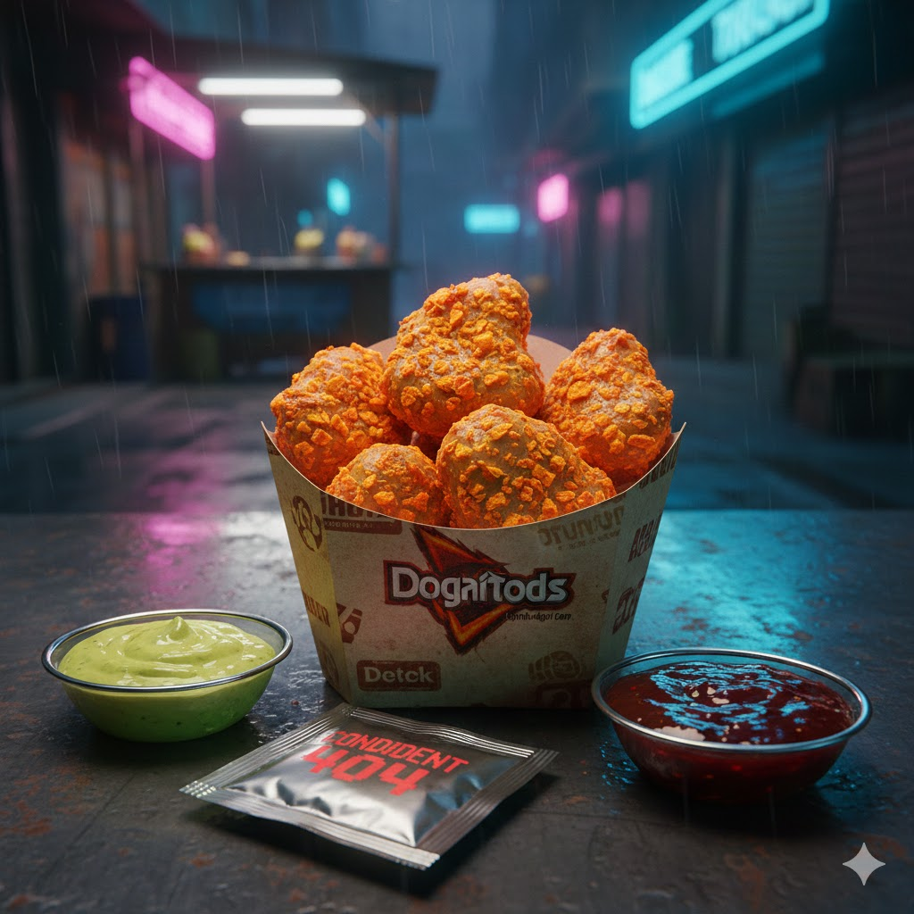
Estilo: Comida rápida barata con estética industrial.
Inspiración: Carne sintética y comida ultraprocesada de Blade
Runner, Cyberpunk 2020 y los distritos bajos de Night City.
🧪 Descripción Cyberpunk
En los bloques residenciales donde la luz del sol nunca llega, los kioskos de comida ofrecen estos nuggets hechos con proteína cultivada en tinas industriales. Son crujientes, salados y tienen ese sabor inconfundible a “algo que no era pollo, pero funciona”. El empanizado con Doritos triturados les da un color radioactivo irresistible para cualquier merc sin tiempo ni presupuesto.
Tiempo total: 25 minutos.
- Procesado de masa: 10 min.
- Formateado y fritura: 15 min.
Hardware (Equipo):
- Procesadora de alimentos o picadora manual (para homogeneizar la textura de laboratorio).
- Papel film o moldes geométricos (para que parezcan "impresos").
- Sartén antiadherente.
Nota de Overclocking: Para que parezcan auténtica carne de tina de cultivo, enfría la mezcla procesada en el congelador 10 minutos antes de freír. Esto hará que el nugget mantenga aristas perfectamente rectas y artificiales.
🍗 Ingredientes (1 ración / 8–10 unidades)
Para los nuggets
- 150 g pollo molido (o proteína vat-grown)
- 1 cdta sal
- 1 pizca ajo en polvo
- 1 pizca cebolla en polvo
- 1/4 cdta paprika ahumada
- 1 huevo batido
- 1 taza Doritos triturados (nacho o picante)
- Harina (c/n)
- Aceite para freír
- 1 cda maicena
- 1 cdta agua o leche
🔧 Subreceta: Empanizado “Street-Tech”
- Tritura los Doritos hasta obtener un polvo grueso (no demasiado fino).
- Añade paprika o chile en polvo para intensificar color y picor.
- Reserva en un plato extendido.
🔥 Paso a Paso (Técnica Profesional)
- Preparar la
masa
Mezcla pollo, sal, especias y maicena (si usas). Debe quedar suave pero firme. - Formar los
nuggets
Haz formas irregulares para estilo callejero; tamaño pequeño favorece fritura pareja. - Empanizado triple
- Harina
- Huevo
- Doritos
triturados
Presiona bien para que el empanizado se adhiera. - Fritura
- Aceite a 170–180 °C
- Freír 4–6 min hasta dorado brillante
- Reposar 1 min sobre papel absorbente
🍶 Sugerencia de Servicio Estilo Sprawl
- Caja de cartón reciclado con logos corporativos falsificados.
- Salsa de queso sintético o dip de chile dulce.
- Sobre de “Condimento 404” (MSG + chile) para un boost químico.
🛠 Notas del Chef / Optimización Cyberpunk
- Low-tier: mezcla proteína vat-grown con harina para rendir más.
- Corporate Deluxe: empanizado mitad panko, mitad Doritos.
- Maelstrom Edition: añade 1 cdta de ghost pepper al empanizado.
Baozi de Pollo al Pastor — “Vapor Neón en Callejón Asiático”
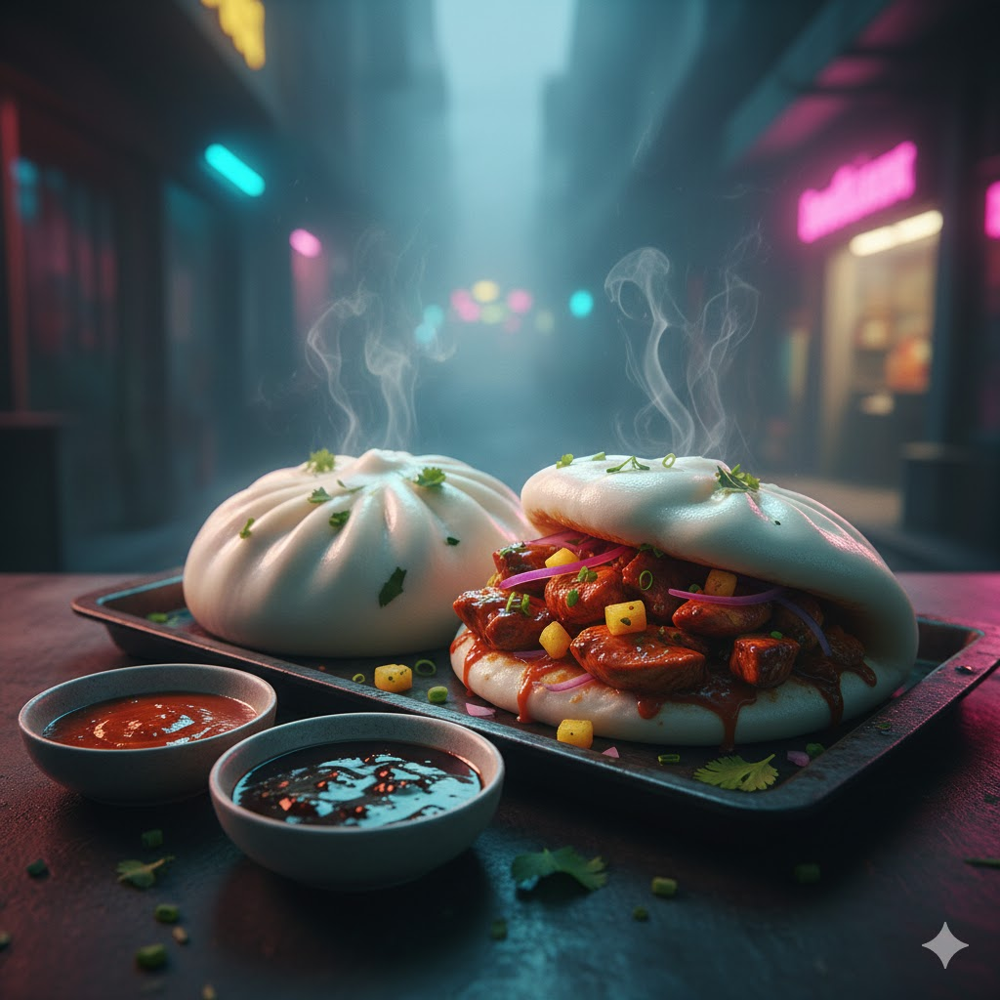
Estilo: Fusión China–México con toque dulce-ácido y especias
urbanas.
Inspiración: Puestos de vapor de Ghost in the Shell,
mercados nocturnos de Blade Runner, y la migración cultural masiva
de Night City.
🥢 Descripción Cyberpunk
En los callejones húmedos donde el vapor se mezcla con la neblina del neón, estos baozi representan una alianza espontánea entre migrantes latinos y cocineros del distrito asiático. Pollo al pastor envuelto en una masa suave y aireada, cocinado al vapor en tambores oxidados que reposan sobre placas calefactoras pirateadas. Un bocado cálido, portátil y profundamente callejero.
Tiempo total: 45 minutos.
- Preparación del relleno: 15 min.
- Llenado y sellado: 15 min.
- Vaporizado: 15 min.
Hardware (Equipo):
- Vaporera de bambú o accesorio de vapor para olla.
- Papel de horno perforado (para evitar que la masa se fusione con el metal).
- Cronómetro de precisión (el exceso de vapor arruina la textura del pan).
Nota de Overclocking: Si no tienes vaporera, usa una olla con un dedo de agua y coloca los bollos sobre una cama de hojas de repollo grandes. El repollo protege la base y añade un aroma orgánico residual.
🍗 Ingredientes (1 ración / 2 baozi grandes)
Para el relleno al pastor
- 80 g pollo picado fino
- 1 cda pasta de achiote
- 1 cdta vinagre blanco o de manzana
- 1 cdta jugo de piña (de lata o natural)
- 2 rodajas de piña en lata picadas
- 1 cdta cebolla morada picada
- 1 pizca comino
- 1 pizca orégano
- ½ cdta azúcar (opcional, mejora caramelización)
- Sal al gusto
Para la masa (si se hace casera)
- 2 discos de masa de bao o masa casera:
- 100 g harina
- 1 cdta azúcar
- 1 cdta aceite
- 1 cdta levadura seca
- 50–60 ml agua tibia
🔧 Subreceta: Marinada “Distrito Latino-Asia”
- Mezclar achiote + vinagre + jugo de piña + comino + orégano + azúcar.
- Incorporar el pollo picado.
- Marinar 20–30 min (suficiente para piezas pequeñas).
Esto intensifica color, sabor y caramelización.
🔥 Paso a Paso (Técnica Profesional)
- Cocinar el relleno
- Calentar sartén a fuego medio-alto.
- Saltear el pollo marinado hasta que caramelice (3–4 min).
- Añadir la cebolla y la piña picada.
- Cocinar 1 minuto más hasta unir sabores.
- Dejar enfriar antes de rellenar (muy importante para que no rompa el bao).
- Preparar los baozi
- Coloca un disco de masa en la mano.
- Agrega una cucharada generosa del relleno frío.
- Cierra plegando en círculos hasta sellar completamente.
- Deja reposar 5 minutos para que relajen la masa.
- Cocción al vapor
- Colocar en vaporera con papel antiadherente o repollo.
- Cocinar 15 minutos con tapa puesta.
- Dejar reposar 1 minuto con el fuego apagado antes de abrir (evita que se arruguen).
🍶 Sugerencia de Servicio Estilo Night Market
- Presentarlos sobre bandeja metálica con luz de neón detrás.
- Acompañar con:
- Salsa de chipotle ligera
- Salsa hoisin mezclada con unas gotas de limón (fusión real)
- Espolvorear cilantro o cebollín fino para contraste verde.
🛠 Notas del Chef / Optimización Cyberpunk
- Versión budget sprawl: usar pollo vat-grown; agregar 1 cdta extra de azúcar para mejorar caramelización.
- Versión corporate deluxe: añadir cubitos diminutos de piña fresca flambeada.
- Estilo Maelstrom: agregar ¼ cdta de chile fermentado (doubanjiang) al relleno.
- Versión vegana: reemplazar pollo por tofu firme desmenuzado o heura sintética.
Pollo Teriyaki “Shibuya Overclocked” — “Glaseado de Alta Frecuencia”
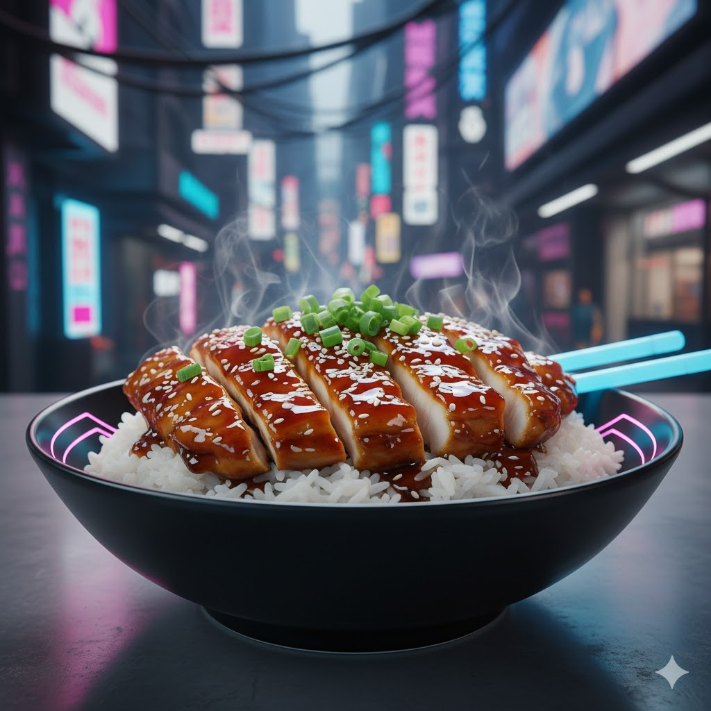
Inspiración: Akira, Ghost in the Shell, zonas comerciales saturadas de pantallas y comida lista en minutos pero con alma de callejón tradicional.
🎌 Descripción Cyberpunk
En los rascacielos donde los anuncios holográficos nunca se apagan, el teriyaki sigue siendo el refugio culinario de oficinistas agotados, hackers insomnes y repartidores en motocicletas antigravidad. Este plato mantiene la esencia dulce-salada del clásico japonés, pero ejecutado con precisión quirúrgica y una reducción que brilla como cristal líquido.
Ideal para cuando el tiempo es escaso, pero la necesidad de comer algo real (o cercano a real) es urgente.
🍗 Ingredientes (1 ración)
Para el pollo
- 150 g de pechuga o muslo de pollo en tiras gruesas
- 1 cdta salsa de soja
- 1 cdta mirin
- ½ cdta jengibre rallado
- 1 pizca sal
- 1 cdta aceite vegetal
Para la salsa teriyaki “Overclocked”
- 1 cda salsa de soja
- 1 cda mirin
- 1 cda sake (o agua si no hay)
- 1 cda azúcar
- ½ cda miel (da brillo superior)
- 2 cdas agua
- 1 chorrito de vinagre de arroz (equilibra la dulzura)
Acompañamientos
- Arroz blanco recién hecho
- Cebollín picado
- Semillas de sésamo tostado
🔧 Subreceta: Teriyaki de Precisión
- Mezcla todos los ingredientes de la salsa.
- Ponlos en una olla pequeña.
- Reduce a fuego medio durante 4–6 minutos, hasta lograr textura de sirope ligero.
- No dejes espesar demasiado: terminará caramelizando en la sartén.
🔥 Paso a Paso (Técnica Profesional)
- Marinar el pollo
- Mezcla pollo + soja + mirin + jengibre + sal.
- Reposa 10–15 min (suficiente para dar sabor sin modificar textura).
- Sellado
- Calienta sartén a fuego medio-alto.
- Agrega aceite.
- Dora el pollo por ambos lados (2–3 min por lado).
- No cocines completamente todavía: terminará en la salsa.
- Glaseado Teriyaki
- Añade la salsa teriyaki reducida al sartén.
- Cocina a fuego medio, moviendo constantemente.
- Cuando la salsa burbujee y se adhiera como barniz, retira del fuego.
- El pollo debe quedar brillante, casi espejado.
- Montaje
- Sirve sobre arroz caliente.
- Añade cebollín y sésamo tostado.
- Opcional: un toque de aceite de sésamo al final para aroma.
🍶 Sugerencia de Servicio Estilo “Shibuya Centerline”
- Servir en bol negro mate con líneas geométricas neón en los bordes.
- Acompañar con té verde helado o bebida energética suave.
- Incluir un palillo luminoso desechable tipo “glow-stick chopstick”.
🛠 Notas del Chef / Optimización Cyberpunk
- Low-tier: reemplaza mirin por agua + azúcar.
- Corporate Edition: añade una nuez de mantequilla al final para brillo extremo (técnica japonesa real).
- Ultra-Street Version: agrega unas gotas de aceite de chile estilo Sichuan al glaseado.
- Vegano: tofu firme prensado y dorado, siguiendo el mismo proceso.
Kati Roll de Pollo “Firewall Masala” — “Protección de Sabor en Movimiento”
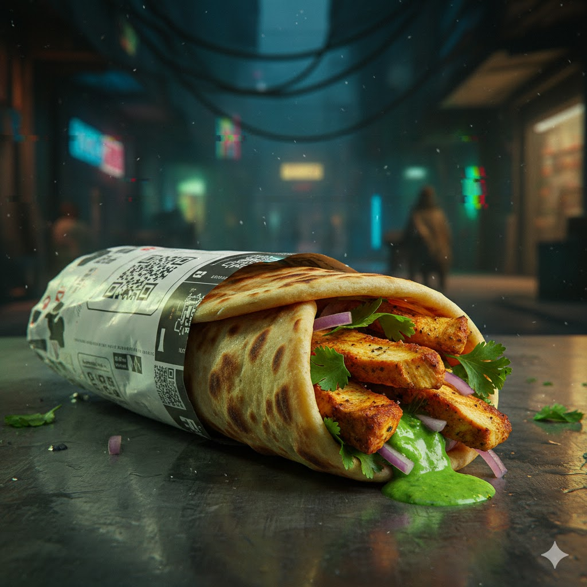
Estilo: Street-food de Calcuta reinterpretado como comida portátil
para runners en fuga.
Inspiración: especias tandoori, wraps de
callejón, estética de ruido digital sobre pan plano.
🥡 Descripción Cyberpunk
En los tech-slums del Sector Amber, los netrunners se alimentan entre hackeos rápidos. Este kati roll fue diseñado para comer con una mano mientras la otra baila sobre un teclado holográfico: pollo especiado, chutney verde que golpea como un firewall recién activado y un wrap flexible que no se rompe aunque corras por azoteas mojadas.
Tiempo total: 25 - 30 minutos.
- Preparación de la Proteína (Corte técnico): 10 min.
- Cocción y Reducción del Glaseado: 15 - 20 min.
Hardware (Equipo):
- Sartén de acero inoxidable o Wok: Necesitas una superficie que permita el movimiento constante para que el glaseado no se queme, sino que se "pegue" a la fibra.
- Termómetro de cocina (Opcional): Para asegurar que el pollo no se seque mientras la salsa alcanza su punto de "espejo".
- Pinzas metálicas: Para girar cada trozo y asegurar una cobertura de 360 grados.
Nota de Overclocking: Para lograr el efecto de "Alta Frecuencia" (un brillo que parece artificial de lo perfecto que es), añade una cucharada de glucosa líquida o jarabe de maíz a la mezcla de soja y mirin. Esto aumentará la viscosidad de la salsa de forma casi instantánea y le dará una resistencia al calor superior, permitiendo que el glaseado brille bajo las luces de neón sin perder su estructura líquida. Si quieres un toque "Overclocked" en el sabor, ralla un poco de piel de lima al final; la acidez cortará la grasa y "despertará" los sensores de sabor del comensal.
🍗 Ingredientes (1 ración / 1 rollo contundente)
- 140 g pollo en tiras
- 1 cda mezcla tandoori
- 1 cdta garam masala
- 1 cda yogur espeso
- 1 cdta jugo de limón
- 1 pan paratha o roti
- 2 cdas cebolla morada en pluma
- 1 puñado cilantro fresco
- 1 cdta mantequilla o ghee
Chutney “Green Firewall”
- 1 puñado menta
- 1 puñado cilantro
- 1 ají verde
- 1 cdta zumo de limón
- 1 pizca azúcar
- 1 cdta agua fría
🔧 Subreceta: Chutney “Green Firewall”
Licúa todo hasta obtener una salsa verde intensa. Ajusta la textura con agua. Debe picar como una alarma del sistema.
🔥 Paso a Paso (Técnica Profesional)
- Mezcla pollo + yogur + tandoori + masala + limón. Marina 20–30 min.
- Saltea el pollo en sartén muy caliente, 4–5 min hasta dorar.
- Calienta el paratha con ghee.
- Monta: chutney → pollo → cebolla → cilantro.
- Enrolla apretado y dóralo 1 min por lado.
🍶 Sugerencia de Servicio Estilo Netrunner
Enrolla en papel térmico plateado con códigos QR falsos impresos.🛠 Notas del Chef / Optimizaciones Cyberpunk
- Para nómades: sustituye el pollo por proteína seca rehidratada.
- Para fixers: añade ghee con chile kashmiri para un color más “premium”.
🥩 SECCIÓN 3: COMIDA CALLEJERA - VACUNO (RES)
"Los japoneses tenían una fijación con la carne. Carne de verdad. Case la había comido una vez, en un restaurante de la Ginza, durante un encargo para un intermediario llamado Wage. Estaba cortada en láminas finas, veteada de grasa, y él había visto al chef dorarla sobre una plancha de acero."
Teriyaki de Res “Komainu Black Ops” — “Glaseado de Operaciones Encubiertas”
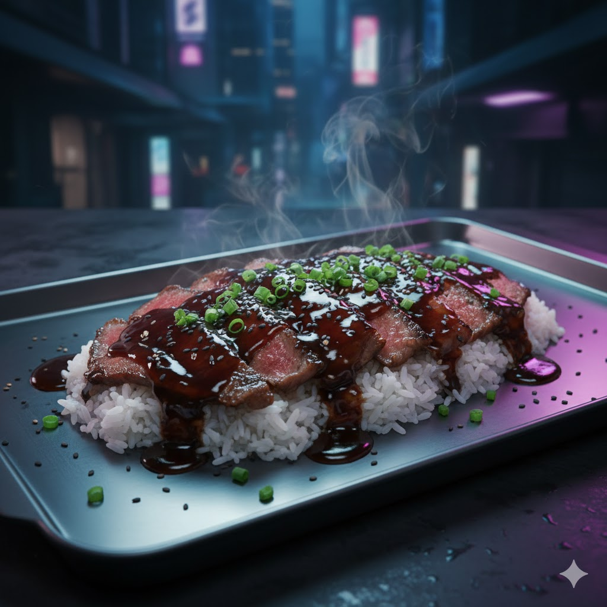
Inspiración: Distritos clandestinos de Ghost in the Shell, unidades encubiertas de Arasaka, y puestos nocturnos en callejones mojados por lluvia ácida.
🐂 Descripción Cyberpunk
En ciertos niveles bajos del megapolis, donde los agentes corporativos se reúnen tras operaciones silenciosas, existe un plato simple pero letalmente perfecto: res laminada, sellada sobre planchas de cerámica negra y bañada con un teriyaki oscuro, denso, casi táctico.
El dulzor equilibrado con notas ahumadas y un final ligeramente metálico recuerda la vida entre acero, cables y contratos que nunca terminan.
Tiempo total: 20 - 25 minutos.
- Marinada Express: 10 min.
- Sellado térmico: 5 min.
- Glaseado final: 5 min.
Hardware (Equipo):
- Wok de acero o sartén de hierro: Capaz de retener calor residual masivo para el sellado de alta temperatura.
- Pinzas de acero: Para manipular las tiras de res sin perder la presión del sellado.
Nota de Overclocking: Para que el glaseado parezca "Black Ops" (un negro profundo y opaco), añade una pizca de carbón vegetal activado o abusa del vinagre de arroz negro. Esto no solo oscurecerá la salsa a niveles industriales, sino que le dará un toque ahumado que simula la carne asada en los callejones prohibidos del Distrito Kuro-13.
🥩 Ingredientes (1 ración)
Para la res
- 120–150 g de carne de res en láminas finas (posta negra, lomo vetado o similar)
- 1 cdta salsa de soja
- 1 cdta mirin (o ½ cdta azúcar + ½ cdta agua si no hay)
- 1 cdta aceite vegetal
- 1 pizca jengibre rallado
- Sal mínima (la soja ya aporta)
Para la salsa teriyaki “Black Ops”
- 1 cda salsa de soja
- 1 cda mirin
- 1 cda sake (o agua)
- 1 cdta azúcar
- 1 cda miel (clave para brillo tipo “cromado”)
- 1 cdta vinagre de arroz
- 2 cdas agua
Para acompañar
- Arroz blanco o fideos udon
- Cebollín picado
- Sésamo negro
🔧 Subreceta: Teriyaki Oscuro de Reducción Rápida
- En olla pequeña, combina todos los ingredientes.
- Reduce a fuego medio 4–5 minutos, hasta punto jarabe ligero.
- No espesar demasiado: la carne terminará de glasearse en sartén.
🔥 Paso a Paso (Técnica Profesional)
- Marinada express
- Mezcla soja + mirin + jengibre + aceite.
-
Marina la carne 5–10 minutos.
(Las láminas finas absorben rápido; no prolongar para no endurecerlas.) - Sellado de alta temperatura
- Calienta sartén o plancha a fuego muy alto.
- Añade unas gotas de aceite.
- Sella la carne 30–45 segundos por lado.
- Debe dorarse sin sobrecocinarse.
- Retira momentáneamente.
- Glaseado “Operación Encubierta”
- Vierte la salsa teriyaki reducida en la sartén caliente.
- Cuando burbujee intensamente, reincorpora la carne.
- Mueve rápido: cubrir por completo sin dejar espesar hasta quedar pegajosa.
- Retirar cuando la carne esté brillante como obsidiana húmeda.
- Montaje
- Colocar sobre arroz o udon.
- Decorar con cebollín y sésamo negro.
- Opcional: unas gotas de aceite de sésamo para aroma a parrilla nocturna.
🍶 Sugerencia de Servicio Estilo “Distrito Kuro-13”
- Servir en bandeja de acero cepillado.
- Añadir iluminación tenue azul o púrpura para realzar el brillo del glaseado.
- Combinar con té de cebada frío o soda oscura sin marca (ideal post-misión).
🛠 Notas del Chef / Optimización Cyberpunk
- Low-tier: usar carne reconstruida (meat print) en láminas finas.
- Corporate Edition: añadir una nuez de mantequilla al final para un glaze espejo.
- Operación Hardcore: incorporar ½ cdta de chile fermentado para un golpe mental súbito.
- Versión sin alcohol: reemplazar sake y mirin por agua + azúcar + unas gotas extra de vinagre.
La Deliverator Pizza — “Ultra-Rush Deep Slice con Carne de Res”
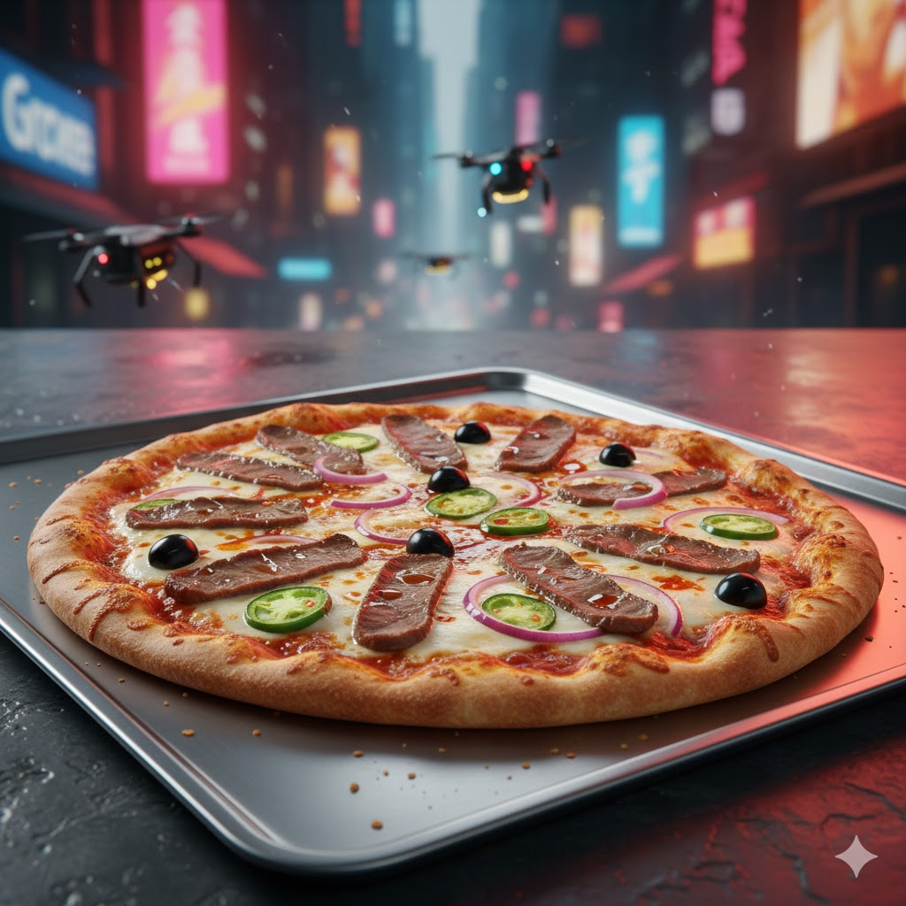
Estilo: Pizza estilo street-tech de alta rapidez, masa fina y crujiente, sabor intenso y toppings optimizados para energía
inmediata.
Inspiración: Snow Crash de Neal Stephenson, repartidores corporativos armados, hornos montados en motocicletas a reacción y la estética de comida rápida hipereficiiente en megaciudades saturadas.
🚀 Descripción Cyberpunk
“The Deliverator” no entrega pizzas; entrega justicia térmica a
480°C, programada al segundo. Esta pizza está diseñada bajo el
mismo principio: velocidad, eficiencia y potencia.
Masa ligera
para reducir tiempos de cocción, salsa concentrada, carne de res
salteada al estilo teppan y una mezcla de quesos diseñada para
derretirse más rápido que lo permitido por cualquier normativa
sanitaria.
Es la pizza estándar para corredores, repartidores y mercenarios que viven sobre una motocicleta o debajo de un puente iluminado por hologramas.
Tiempo total: 25 - 30 minutos.
- Masa Rapid-Run: 10 min (sin leudado).
- Salteado Teppan: 3 min.
- Hiper-horneado: 10-15 min.
Hardware (Equipo):
- Horno a máxima potencia (250°C+): Para emular los hornos industriales de reparto rápido.
- Piedra pizzera o bandeja de metal invertida: Para asegurar una base crocante en tiempo récord.
Nota de Overclocking: Si el horno de tu búnker no calienta lo suficiente, precalienta la sartén de hierro donde harás la pizza directamente sobre el fuego antes de meterla al horno. Esto le dará un "boost" térmico a la masa desde abajo, logrando el crunch necesario antes de que se cumpla el límite de entrega del Deliverator.
🍕 Ingredientes (1 pizza individual, 26–28 cm)
Para la masa “Rapid-Run”
(Optimizada para fermentar casi sin reposo)
- 140 g harina 00 o todo uso
- 90 ml agua tibia
- ½ cdta sal
- ½ cdta azúcar
- ¾ cdta levadura seca instantánea
- 1 cda aceite de oliva
- (para un proceso ultrarrápido puedes cambiar a modo Sandevistan usando una masa pre hecha)
Para la salsa “Overclocked Tomato Burst”
- 3 cdas puré de tomate concentrado
- 1 cdta azúcar
- 1 cdta vinagre balsámico o de arroz
- 1 cdta orégano o mezcla italiana
- 1 pizca ajo en polvo
- 1 pizca sal
- 1 chorrito de agua (para ajustar)
(Es una salsa rápida, densa, pensada para cocción ultravelóz.)
Para el topping
- 100 g carne de res en láminas finas o picada en tiras
- 1 cdta salsa de soja
- 1 cdta mirin (o azúcar si no hay)
- 1 chorrito aceite vegetal
- 1 pizca jengibre rallado
- Sal mínima
Queso
- 60 g mozzarella rallada
- 20 g cheddar o gouda (para fusión más rápida)
Extras Deliverator
- Cebolla morada en láminas delgadas
- Jalapeños o chiles frescos
- Aceitunas negras
- Toque de aceite de chile para entrega “letal”
🔧 Subreceta: Carne de Res Salteada “Teppan Express”
- Calienta sartén a fuego muy alto.
- Agrega aceite, luego la carne con soja + mirin + jengibre.
- Saltea 30–60 segundos hasta dorar sin cocinar en exceso.
- Retira y
reserva.
(La clave: rapidez para que no suelte jugo y no humedezca la pizza.)
🔥 Paso a Paso (Técnica Profesional)
- Masa sin espera
- Mezcla harina + sal + azúcar.
- Incorpora la levadura y el agua tibia.
- Añade aceite.
- Amasa 3–4 minutos.
- No requiere fermentación larga: basta 5 minutos de reposo mientras preparas la salsa.
- Salsa rápida
- Mezcla todo y ajusta con un chorrito de agua.
- Debe quedar espesa, casi una pasta aromática.
- Armado
- Estira la masa muy fina (2–3 mm).
- Cubre con una capa delgada de salsa.
- Distribuye la mezcla de quesos.
- Añade la carne salteada, cebolla y jalapeños.
- Cocción “Hyper-Oven”
- Ideal: horno a 250–300°C (o piedra caliente).
- Cocinar 7–9 minutos hasta borde crujiente y queso burbujeante.
- Finalización
- Terminar con un hilo de aceite de chile o sésamo.
- Añadir aceitunas negras o cilantro finamente picado para contraste verde neón.
(La masa se trabaja fina, estilo New Tech Neapolitan.)
🍶 Sugerencia de Servicio Estilo Snow Crash
- Servir en caja metálica ultradelgada o bandeja térmica.
- Añadir etiqueta ficticia:
“Tiempo Garantizado: 12 Minutos o el Deliverator te encuentra.” - Acompañar con bebida energética con sabor a cítrico sintético o té helado concentrado.
🛠 Notas del Chef / Optimización Cyberpunk
- Low-tier: reemplaza carne real por beef-print laminado.
- Corporate Deluxe: mezcla mozzarella + provolone + mantequilla clarificada para un brillo cromado.
- Hack rápido: usa pan plano o masa pre-hecha de pizza para acelerar los tiempos de preparación.
- Máximo impacto: agrega una cucharada de cebolla caramelizada con shoyu para un umami brutal.
- Versión picante Yakuza: aceite de chile + shichimi togarashi.
Burrito Bulgogi — “Roll-Out K-Tek de Alta Potencia”
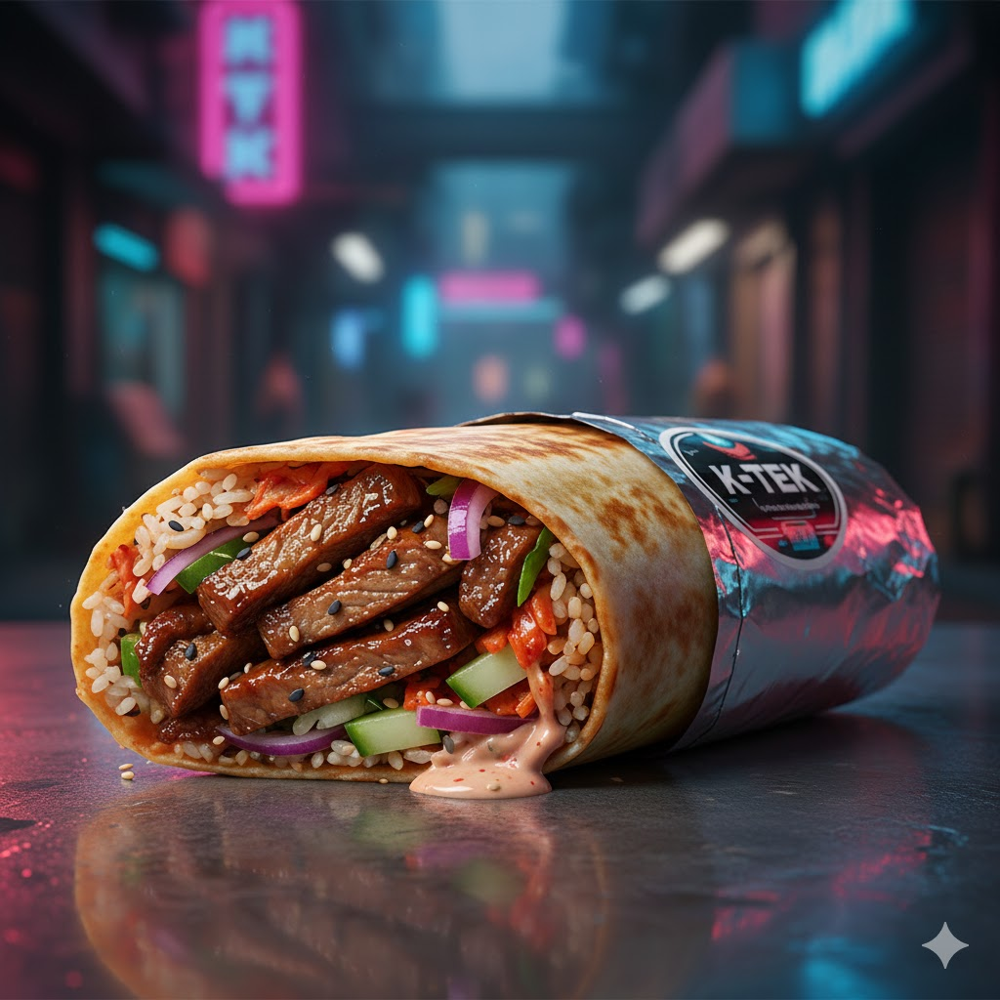
Estilo: Fusión coreano–mexicana, carne bulgogi dulce-umami
envuelta en formato portátil tipo burrito.
Inspiración:
Callejones de Night City Heywood, puestos K-Bar de Cyberpunk 2077,
estética neón de Blade Runner y la comida rápida de pandillas de
origen coreano.
🌃 Descripción Cyberpunk
Este burrito nace en las intersecciones culturales del megasprawl: cocina coreana de segunda generación mezclada con la tradición rápida y contundente de los burritos de barrio latino. El bulgogi —carne laminada, marinada y caramelizada— se combina con arroz, kimchi, verduras crujientes y una salsa cremosa estilo street-k-food.
Diseñado para pilotos de drones, repartidores nocturnos y hackers que necesitan combustible real antes de una larga sesión en la Red.
Tiempo total: 35 - 40 minutos.
- Cocción Bulgogi: 10-15 min.
- Ensamblaje Táctico: 10 min.
Hardware (Equipo):
- Sartén antiadherente grande: Para el bulgogi y para sellar el burrito una vez armado.
- Papel de aluminio: Indispensable para el "enrollado táctico" que mantiene la estructura del paquete de energía.
Nota de Overclocking: Para un efecto "K-Tek" genuino, tuesta la tortilla directamente sobre la llama abierta del quemador por 5 segundos antes de armar. Ese aroma a quemado y las manchas negras (charring) le dan el aspecto de comida preparada en un campamento de mercenarios en las afueras de la ciudad.
🥩 Ingredientes (1 burrito gigante)
Para el bulgogi
- 150 g carne de res laminada fina (posta, asiento, lomo vetado)
- 1 cda salsa de soja
- 1 cda azúcar morena
- 1 cdta miel
- 1 cda pera asiática rallada (o manzana verde si no hay)
- 1 cdta aceite de sésamo
- 1 cdta vinagre de arroz
- 1 diente de ajo rallado
- ½ cdta jengibre rallado
- 1 cda cebollín picado
- 1 pizca pimienta
Para el armado
- 1 tortilla XL tipo burrito
- ½ taza arroz blanco (tibio)
- 2 cdas kimchi picado
- 2 cdas pepino en tiras o lechuga crocante
- 1 cda cebolla morada en láminas
- 1 cda cilantro o cebollín adicional
- 1 cda semillas de sésamo tostado
Salsa “K-Tek Cream”
- 2 cdas mayonesa
- 1 cdta gochujang
- 1 cdta limón
- 1 chorrito
de agua para aligerar
(Queda cremosa, ligeramente picante y perfecta para envolver sabores.)
🔧 Subreceta: Bulgogi “Neon-Marinated”
- Mezclar soja + azúcar + miel + pera rallada + aceite de sésamo + vinagre + ajo + jengibre.
- Añadir la carne laminada.
- Marinar 15–30 minutos (suficiente para láminas finas).
🔥 Paso a Paso (Técnica Profesional)
- Cocinar el bulgogi
- Calentar sartén a fuego alto.
- Añadir unas gotas de aceite.
- Agregar la carne en tandas para evitar que suelte líquido.
- Saltear 1–2 min hasta caramelizar los bordes.
- Añadir cebollín al final.
- Preparar la tortilla
- Calentarla en sartén o plancha hasta volverla flexible y ligeramente tostada.
- Armar el burrito
- Colocar arroz en una franja central.
- Añadir el bulgogi caliente.
- Incorporar kimchi (clave para acidez y poder digestivo).
- Agregar verduras frescas (pepino o lechuga), cebolla y cilantro/cebollín.
- Rociar con Salsa K-Tek Cream.
- Espolvorear sésamo.
- Enrollado táctico
- Doblar los bordes y enrollar firme.
- Para un acabado premium: dorar en sartén 30 segundos por lado (sellado tipo “crunch wrap”).
Debe quedar jugosa pero con caramelización intensa.
🍶 Sugerencia de Servicio Estilo Night City
- Envolver mitad con papel metalizado cromado.
- Añadir
sticker ficticio:
“Burrito K-Express: Entrega energética garantizada.” - Acompañar con té helado de yuzu o soda especiada sintética.
🛠 Notas del Chef / Optimización Cyberpunk
- Low-tier: reemplazar pera por azúcar extra y un chorrito de agua.
- Corporate Edition: añadir 1 cdta de mantequilla al bulgogi para brillo espejo.
- Versión Max-Heat: agregar 1 cdta de gochugaru o aceite de chile coreano.
- Edición vegana: carne vegetal laminada + mayo vegana + gochujang.
Hamburguesa “Smashed” de Chiba — “Circuito Graso de Alta Compresión”
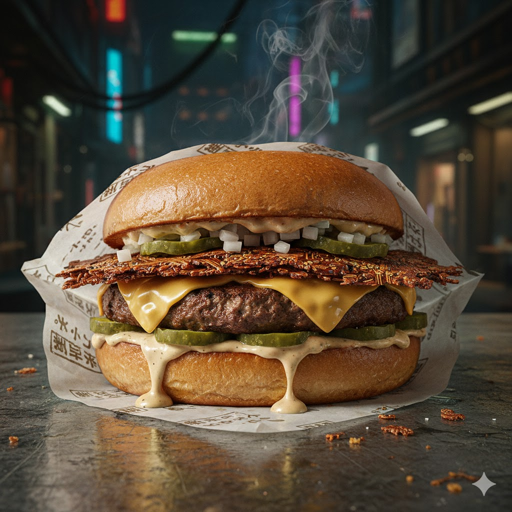
Estilo: Hamburguesa smash ultracrujiente, estilo diner callejero japonés con guiños al submundo de Chiba City.
Inspiración:Neuromancer, puestos grasientos cerca de clínicas de implantes, comida rápida para mercenarios con créditos cortos y noches largas.
🌐 Descripción Cyberpunk
En Chiba City, entre los garajes de implantes negros, los
cibermédicos clandestinos y los proveedores de software ilegal,
existe un clásico absoluto: la hamburguesa smashed.
Una bola de
carne ultracompactada contra una plancha incandescente, creando ese
borde crujiente (“lace edge”) que parece una placa de circuito
quemándose.
Es rápida, contundente y grasosa de la forma correcta. Perfecta para comer mientras esperas que te reinstalen un hígado.
Tiempo total: 15 minutos.
- Preparación de bolas: 5 min.
- Técnica Smash: 5-7 min.
Hardware (Equipo):
- Plancha de hierro lisa: Debe estar al borde del humo.
- Espátula metálica ancha y rígida: Para aplicar el "Impacto de Compresión" (smash).
Nota de Overclocking: Coloca un trozo de papel manteca entre la espátula y la carne al hacer el smash. Esto te permitirá aplicar una presión extrema (overclocking de fuerza) sin que la proteína se pegue a la herramienta, maximizando la costra de Maillard que define a esta hamburguesa.
🥩 Ingredientes (1 hamburguesa grande)
Para la carne
- 120 g de carne de res molida (ideal 80/20 o 70/30)
- Sal (generosa)
- Pimienta negra recién molida
Para el montaje
- 1 pan tipo brioche o potato bun
- 1–2 láminas de queso americano (o cheddar suave)
- 4–5 láminas finas de pepinillos
- 1 cdta cebolla blanca picada finísima
- 1 hoja pequeña de lechuga crujiente (opcional)
Salsa “Chiba Street Melt”
- 1 cda mayonesa
- ½ cdta mostaza amarilla
- ½ cdta ketchup
- 1 pizca paprika
- 1 chorrito
de jugo de pepinillo
(Sí, es la fórmula perfecta del diner futurista.)
🔧 Subreceta: Técnica Smash “Impacto de Compresión”
- Calienta plancha/sartén de hierro a alta temperatura.
- Deja una bola de carne sin compactar (claves los bordes sueltos).
- Coloca papel mantequilla encima y presiona con espátula pesada durante 10–12 segundos.
- Levanta. La carne debe quedar ultra delgada, bordes crujientes y centro jugoso.
🔥 Paso a Paso (Técnica Profesional)
- Preparar la plancha
- Debe estar muy caliente, casi al borde del humo.
- Añadir una fina capa de aceite.
- Smash + Sazón
- Colocar la bola de carne.
- Smash inmediato con presión firme.
- Sazonar con sal y pimienta mientras se cocina el primer lado.
- Cocinar 1:30–2 min sin tocar.
- Voltear + Fundido
- Voltear cuidadosamente con espátula metálica.
- Colocar el queso encima.
- Cocinar 1 minuto más hasta que el queso se funda y los bordes tengan textura crujiente tipo “circuito tostado”.
- Pan sellado
- Tostar el pan brioche con un toque de mantequilla o aceite en la misma plancha.
- Debe quedar dorado y ligeramente crocante.
- Montaje estilo Chiba
- Pan inferior → capa de Chiba Street Melt.
- Pepinillos + cebolla.
- Carne smashed con queso fundido.
- (Opcional) hoja de lechuga.
- Más salsa en el pan superior.
- Cerrar con ligera presión.
🍶 Sugerencia de Servicio Estilo Chiba City
- Servir en envoltorio de papel encerado blanco con estampado de kanjis falsos.
-
Acompañar
con:
- Papas cortadas tipo shoestring con furikake
- Té helado oscuro o cola sintética “Megacorp Draft”
- Añadir
etiqueta ficticia:
“Aprobada por Clínica Black ICE – Perfecta antes de una actualización nerviosa.”
🛠 Notas del Chef / Optimización Cyberpunk
- Low-tier: carne reconstruida (meat-print) + más salsa para compensar sabor.
- Corporate Edition: añadir una cucharadita de mantequilla clarificada al voltear la carne para finish brillante.
- Maelstrom Version: mezclar en la carne ½ cdta de chile fermentado coreano para un golpe salvaje.
- Max Crunch: hacer doble smash (2 discos finos) con doble queso.
Hamburguesa “Ghost-Burger” de Little China — “Protocolo de Umami Sintético”
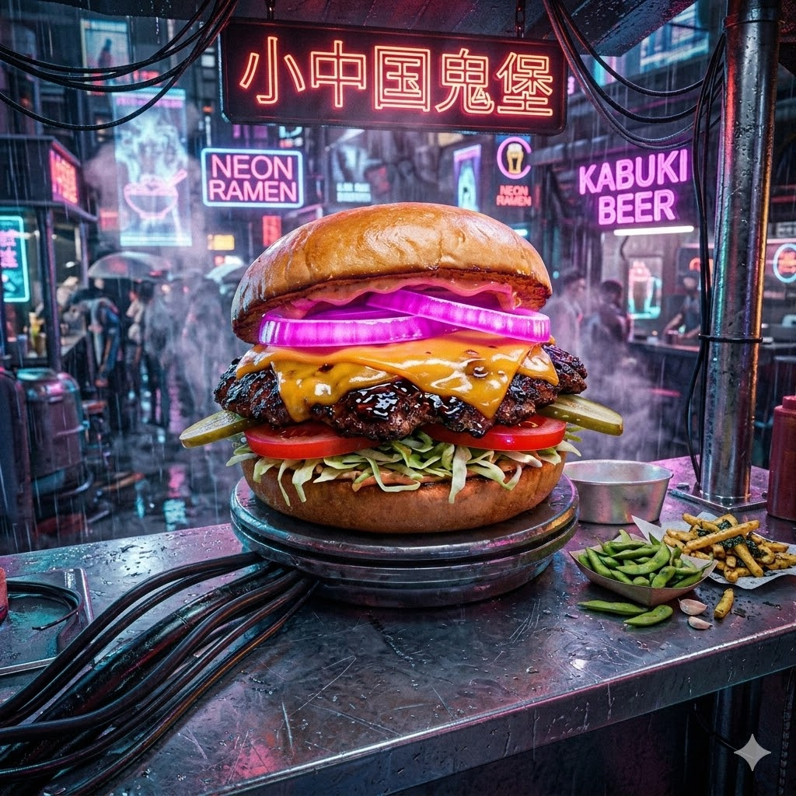
Estilo: Smash burger de alta frecuencia con costra de caramelización oscura y contrastes de neón.
Inspiración: Los puestos de comida bajo la lluvia ácida del mercado de Watson, donde los sabores clásicos se "hackean" con suministros del mercado negro asiático.
🌐 Descripción Cyberpunk Es la unidad de combate calórica por excelencia de Little China. A primera vista, parece una hamburguesa clásica del "Viejo Mundo", pero su núcleo ha sido optimizado: la carne brilla con un glaseado de soja oscura que simula aceite de motor limpio y la cebolla emite un tono magenta radioactivo que solo verías en un club de Kabuki. Es la hamburguesa que compras a las 3:00 AM bajo una pantalla holográfica gigante. El primer bocado te confirma que el sistema ha sido mejorado.Tiempo total: 15 minutos. Preparación de componentes: 10 min. Ejecución en plancha: 5 min.
Hardware (Equipo):
- Plancha de hierro o sartén pesada: Calibrada a temperatura de ignición.
- Espátula metálica rígida: Para el protocolo de compresión.
- Pincel de silicona industrial: Para la aplicación del glaseado.
Nota de Overclocking: Justo después de dar la vuelta a la carne, añade un chorrito de agua a la plancha y tapa el conjunto con una campana de metal (o un bol) durante 10 segundos. El vapor resultante forzará la fusión del queso y atrapará los aromas del glaseado de soja directamente en la fibra de la carne, creando una "cámara de sabor" presurizada.
🥩 Ingredientes (1 unidad de ración)
Para la carne (La Bio-masa)- 150-180 g de carne de res (80/20 grasa)
- Sal y pimienta negra
- 1 pan tipo brioche (blindaje suave)
- 2 láminas de queso americano (naranja sintético)
- 2 rodajas de tomate "Neon-Red"
- Lechuga hidropónica cortada en tiras finas (estilo cableado)
- Pepinillos en láminas largas ("Cyber-Sour")
- 1 cda mayonesa
- ½ cdta Sriracha o pasta de chile
- 1 pizca de polvo de jengibre o Wasabi
- 1 cda de soja oscura (Dark Soy Sauce)
- 1 cdta de aceite de sésamo tostado
- ½ cdta de cinco especias chinas (canela, clavo, anís, pimienta, hinojo)
- Mezclar hasta obtener un fluido viscoso y oscuro.
- ½ cebolla roja cortada en pluma.
- Sumergir en vinagre de arroz con una gota de jugo de remolacha durante 20 min para lograr el efecto radioactivo.
🔥 Paso a Paso (Técnica Profesional)
1. Preparar el firmware- Tostar el pan con mantequilla de ajo hasta que esté dorado-cromo.
- Aplicar una capa generosa de salsa Neural-Kick en ambas caras del pan.
- Colocar la bola de carne fría en la plancha ardiendo.
- Aplicar Impacto de Compresión con la espátula hasta que quede un disco fino de bordes irregulares.
- Sazonar solo con sal y pimienta. Cocinar 2 min.
- Voltear la carne.
- Pincelar inmediatamente la cara cocinada con el Glaseado Black-Out.
- Colocar las láminas de queso sobre el glaseado.
- Aplicar el "Hack de vapor" (chorrito de agua y tapar) por 10-15 segundos.
- El queso debe verse como plástico derretido integrándose con la soja oscura.
- Pan inferior → Lechuga (cables) → Tomate.
- Disco de carne glaseada con queso fundido.
- Cebolla Neon-Magenta + Pepinillos Cyber-Sour.
- Cerrar con la tapa superior presionando ligeramente para liberar jugos.
🍶 Sugerencia de Servicio Estilo Mercado Nocturno
- Servir envuelto en papel parafinado negro con tipografía mandarina.
- Acompañar con: Edamames salteados con ajo o papas fritas con polvo de algas.
- Añadir etiqueta ficticia: “Ghost-Burger Mk.V — Contiene 0% de tejido fantasmal, 100% satisfacción de callejón.”
🛠 Notas del Chef / Optimización Cyberpunk
- Low-tier: Usar soja común y una pizca de azúcar moreno si no hay acceso a soja oscura.
- Corporate Edition: Sustituir la cebolla por chalotas fritas crujientes para un acabado más técnico.
- Maelstrom Version: Añadir una rodaja de jalapeño carbonizado para un nivel de picante que reinicie tus sensores.
- Max Umami: Añadir una pizca de Glutamato Monosódico (MSG) directamente sobre la carne antes del smash.
Albóndigas “Orbitales” — “Gravedad Cero, Sabor Máximo”
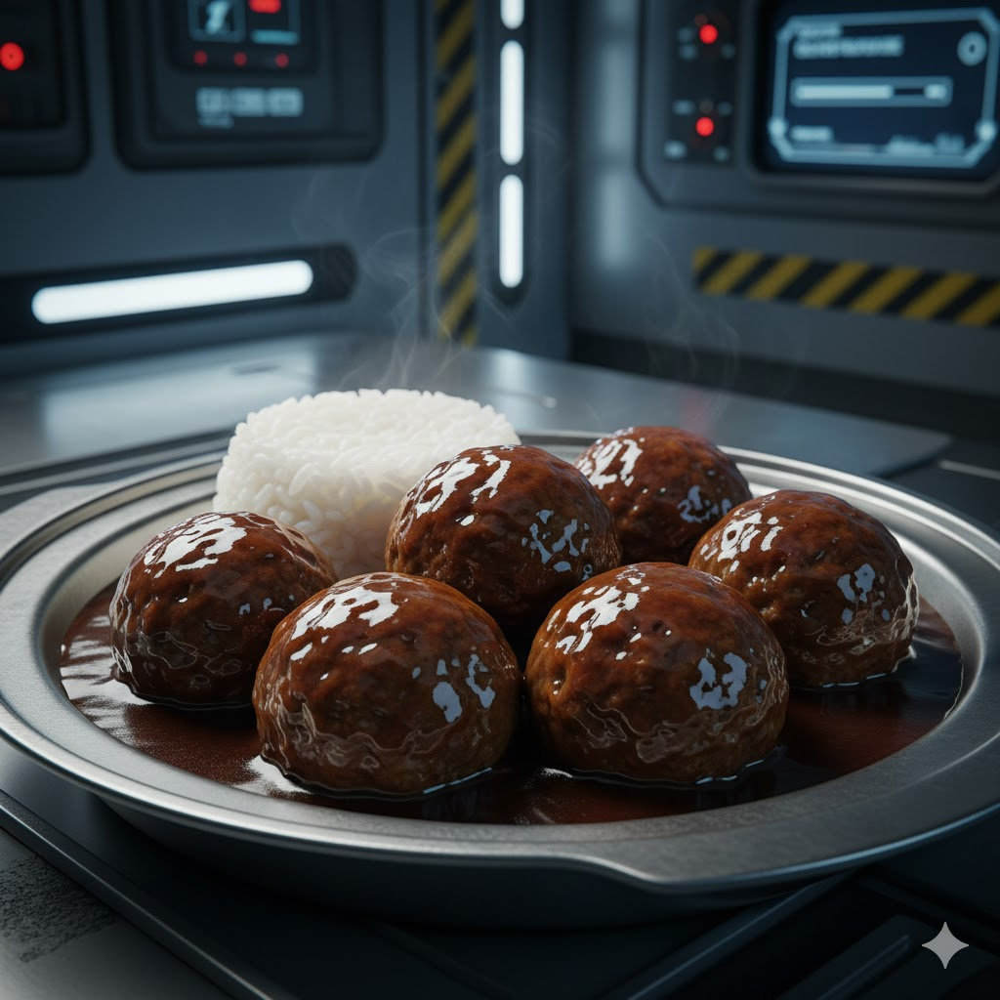
Estilo: Albóndigas jugosas en salsa espesa, pensadas para comer fácilmente en movimiento o en espacios reducidos.
Inspiración: Estaciones espaciales industriales al estilo The Expanse, colonias orbitales de Cyberpunk 2077, megacuarteles corporativos y comida preparada para tripulaciones que viven entre metal, vacío y radiación.
🛰️ Descripción Cyberpunk
En los anillos orbitales donde las corporaciones extraen minerales, reparan satélites o ejecutan experimentos que no admitirían en la Tierra, los trabajadores dependen de comida fácil de recalentar, compacta y nutritiva. Estas albóndigas —ricas, cargadas de umami, bañadas en salsa oscura estabilizada— son un clásico de los comedores de estación.
Cada bocado combina terrosidad, acidez equilibrada y una textura que se mantiene perfecta incluso en microgravedad.
Tiempo total: 35 minutos.
- Sellado y formación: 15 min.
- Estabilización en salsa: 15 min.
- Reposo: 5 min.
Hardware (Equipo):
- Olla profunda con tapa hermética: Para simular la cámara de cocción de una estación orbital y retener la humedad.
- Bandejas térmicas: Para el servicio, manteniendo la energía calórica en ambientes fríos.
Nota de Overclocking: Para que las albóndigas parezcan "esferas de precisión orbital", bolea la carne con las manos ligeramente aceitadas. Esto sellará los poros exteriores antes de tocar el fuego, creando una superficie lisa y sintética perfecta que brilla intensamente bajo la salsa "Orbital Stabilizer".
🥩 Ingredientes (2 raciones / 12 albóndigas medianas)
Para las albóndigas
- 250 g carne de res molida (80/20 para jugosidad)
- 1 huevo pequeño
- 2 cdas pan rallado fino
- 1 cda cebolla muy picada o rallada
- 1 diente de ajo rallado
- 1 cdta salsa de soja
- ½ cdta mostaza
- 1 cdta perejil o cebollín picado
- ½ cdta paprika
- ½ cdta sal
- Pimienta negra al gusto
Para la salsa “Orbital Stabilizer”
- 1 taza puré de tomate o salsa de tomate espesa
- 1 cda salsa de soja
- 1 cdta azúcar
- 1 cdta vinagre balsámico o de arroz
- 1 cda miel o sirope (mejora la adhesión en microgravedad)
- ½ taza caldo de res
- 1 cdta aceite de sésamo (aroma profundo)
- 1 pizca de chile en polvo (opcional)
🔧 Subreceta: Mezcla Estabilizada “Zero-G”
- Combinar carne + huevo + pan rallado + aromáticos.
- Añadir soja + mostaza + paprika.
- Mezclar sin sobretrabajar (mantiene textura suave).
- Reposar 10 minutos para hidratar el pan rallado.
🔥 Paso a Paso (Técnica Profesional)
1. Formar y sellar- Formar albóndigas firmes de tamaño uniforme.
- Sellarlas en sartén caliente con un poco de aceite, 2–3 minutos total, girando para dorar.
- No buscar cocción total: terminarán en la salsa.
- En la misma sartén, agregar la salsa de tomate, el caldo, la soja, la miel y el vinagre.
- Mezclar y llevar a hervor suave.
- Cocinar 5 minutos hasta que reduzca ligeramente.
- Añadir las albóndigas selladas a la salsa.
- Tapar y cocinar a fuego bajo 12–15 minutos.
- Destapar los últimos 2 minutos para espesar si es necesario.
- Finalizar con aceite de sésamo.
- Dejar
reposar 5 minutos para que la salsa se adhiera mejor.
(En entornos orbitales, estas albóndigas serían envasadas inmediatamente en bandejas térmicas con cierre hermético.)
🍽️ Sugerencia de Servicio Estilo Estación Orbital
- Servir en bowl metálico o bandeja térmica.
-
Acompañar
con:
- Arroz blanco compacto (fácil de manipular)
- Puré de papas reforzado con mantequilla (alta densidad energética)
- Pan plano estilo space pita
“Aprobado para consumo en gravedad reducida. Lote 7A-ROG87.”
🛠 Notas del Chef / Optimización Cyberpunk
- Low-tier orbital: carne reconstruida + salsa extra para suavizar textura.
- Corporate Edition: añadir 1 cdta de mantequilla y ½ cdta de salsa Worcestershire para umami supremo.
- Versión Reactor Core: incorporar ½ cdta de gochujang o pasta de chile fermentado.
- Vegana: carne vegetal + leche vegetal en lugar de caldo.
Empanadas de Carne “Bombay” — “Curry de Alto Voltaje en Masa Blindada”
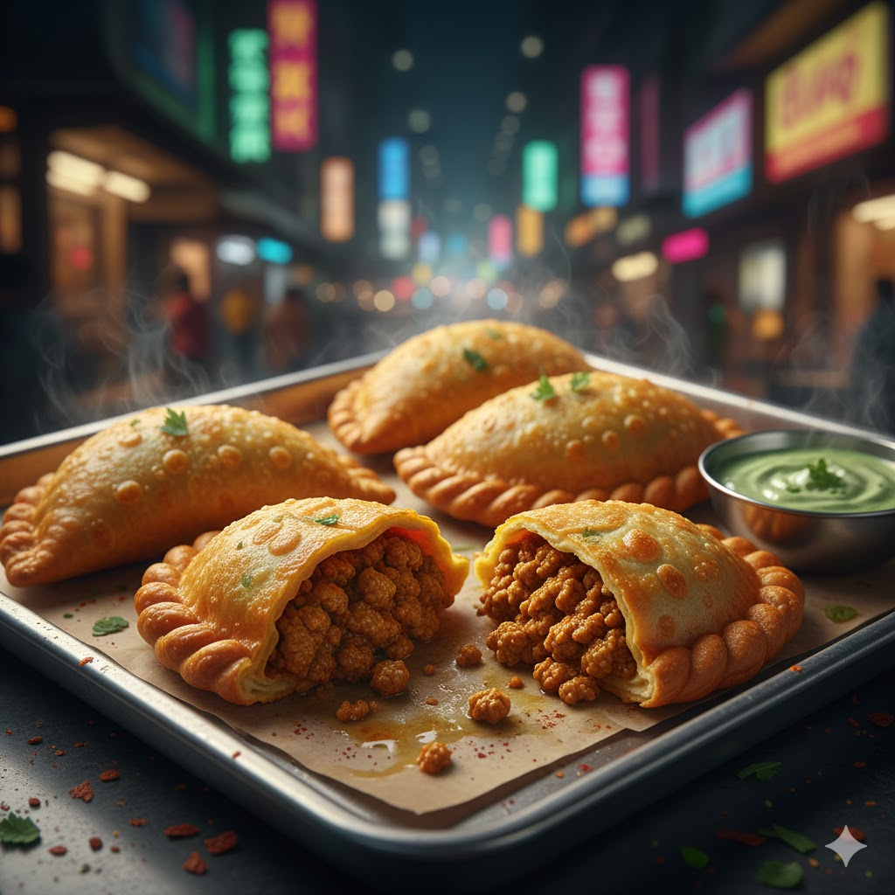
Estilo: Empanada frita u horneada con relleno especiado estilo curry
Bombay.
Inspiración: Mercados nocturnos de Mumbai futurista,
fusionados con puestos sudamericanos, cocina rápida de megaciudad y
especias que recuerdan estaciones abarrotadas y neones caóticos.
🌆 Descripción Cyberpunk
Estas empanadas combinan la portabilidad callejera latinoamericana con el poder aromático de un curry Bombay adaptado a entornos urbanos saturados de ruido, neón y smog industrial. La carne se cocina con especias intensas y un toque dulce-acidulado que evoca comida callejera guiada por drones.
La masa actúa como blindaje, diseñada para soportar traslado en mochilas de delivery, motocicletas antigrav o entre pasillos de un mercado clandestino.
Tiempo total: 50 - 60 minutos.
- Relleno Street-Heat: 20 min.
- Blindaje (Masa) y Armado: 20 min.
- Fritura/Horneado: 10-15 min.
Hardware (Equipo):
- Termómetro para aceite (si se fríe): Para mantener el "voltaje" térmico constante y evitar que el blindaje se ablande.
- Rodillo o prensa manual: Para lograr una masa de espesor uniforme.
Nota de Overclocking: Para el "blindaje Bombay", añade una pizca de cúrcuma a la masa. Además de darle un color amarillo industrial, la cúrcuma actúa como un refuerzo estructural que hace que la empanada sea más resistente al transporte en las mochilas de los repartidores del megasprawl.
🥩 Ingredientes (para 6 empanadas medianas)
Para el relleno Bombay-Cyber
- 250 g carne de res molida (80/20 ideal)
- 1 cebolla pequeña picada fina
- 1 diente de ajo rallado
- 1 cdta jengibre rallado
- 1 cda pasta de curry (amarillo, madras o masala)
- ½ cdta cúrcuma
- 1 cdta garam masala
- 1 cdta comino
- 2 cdas tomate triturado o pasta de tomate
- 1 cdta miel o azúcar rubia (equilibra acidez)
- 1 cdta vinagre o jugo de limón
- ¼ taza agua o caldo
- 2 cdas cilantro o menta picados
- Sal y pimienta al gusto
- 1 cda aceite vegetal
Para la masa (blindaje Bombay)
(Puedes usar masa comprada para empanadas, pero esta versión es superior)
- 300 g harina
- 40 g manteca o aceite
- 1 cdta sal
- 130–150 ml agua tibia
Para finalizar
- Aceite para freír o 1 huevo batido para hornear
- Chutney o salsa de yogurt especiado (opcional)
🔧 Subreceta: Relleno “Bombay Street-Heat”
- En sartén caliente con aceite, sofreír cebolla hasta levemente dorada.
- Añadir ajo + jengibre. Cocinar 30 segundos.
- Incorporar la carne y saltear hasta soltar el rojo.
- Añadir especias: curry + cúrcuma + comino + garam masala.
- Agregar la pasta de tomate + agua/caldo.
- Cocinar 6–8 min hasta espesar como un guiso denso.
- Terminar con miel + vinagre (o limón) para equilibrio.
- Añadir cilantro o menta al final.
- Enfriar completamente antes de armar.
🔥 Paso a Paso (Técnica Profesional)
1. Masa blindada- Mezclar harina + sal.
- Agregar manteca u aceite y frotar hasta textura arenosa.
- Añadir agua tibia y amasar 3–4 minutos.
- Reposar 15 minutos (relaja el gluten y facilita estirar).
- Estirar discos de 12–14 cm.
- Colocar 1–2 cucharadas del relleno frío.
- Humedecer borde y cerrar en media luna.
- Hacer un repulgue firme o sellar con tenedor.
- Freír en aceite medio-alto (170–180°C) 3–4 min hasta dorado profundo.
- Pintar con huevo, hornear a 200°C 20–25 min.
- Reposar 5 minutos para fijar la corteza.
- Acompañar con chutney de mango, yogurt especiado o salsa picante estilo street-food.
🍽️ Sugerencia de Servicio Estilo “Bombay Megasprawl”
- Servir en bandeja de acero con papel encerado y un logotipo ficticio.
- Añadir
etiqueta de advertencia:
“Nivel de Picor: Clase Media (Requiere Permiso Municipal).” - Perfecto para comer con una bebida carbonatada especiada con cardamomo o limón sintético.
🛠 Notas del Chef / Optimización Cyberpunk
Low-tier: sustituir carne real por beef-print + aumentar especias.
- Corporate Edition: añadir 1 cdta de mantequilla clarificada al relleno para brillo y cuerpo.
- Versión Night Runner: incorporar ½ cdta de chile kashmiri para color rojo neón.
- Vegana: carne vegetal + masa con aceite en lugar de manteca.
Goulash de Alcantarilla — “Caldo Mutante del Subnivel 0”
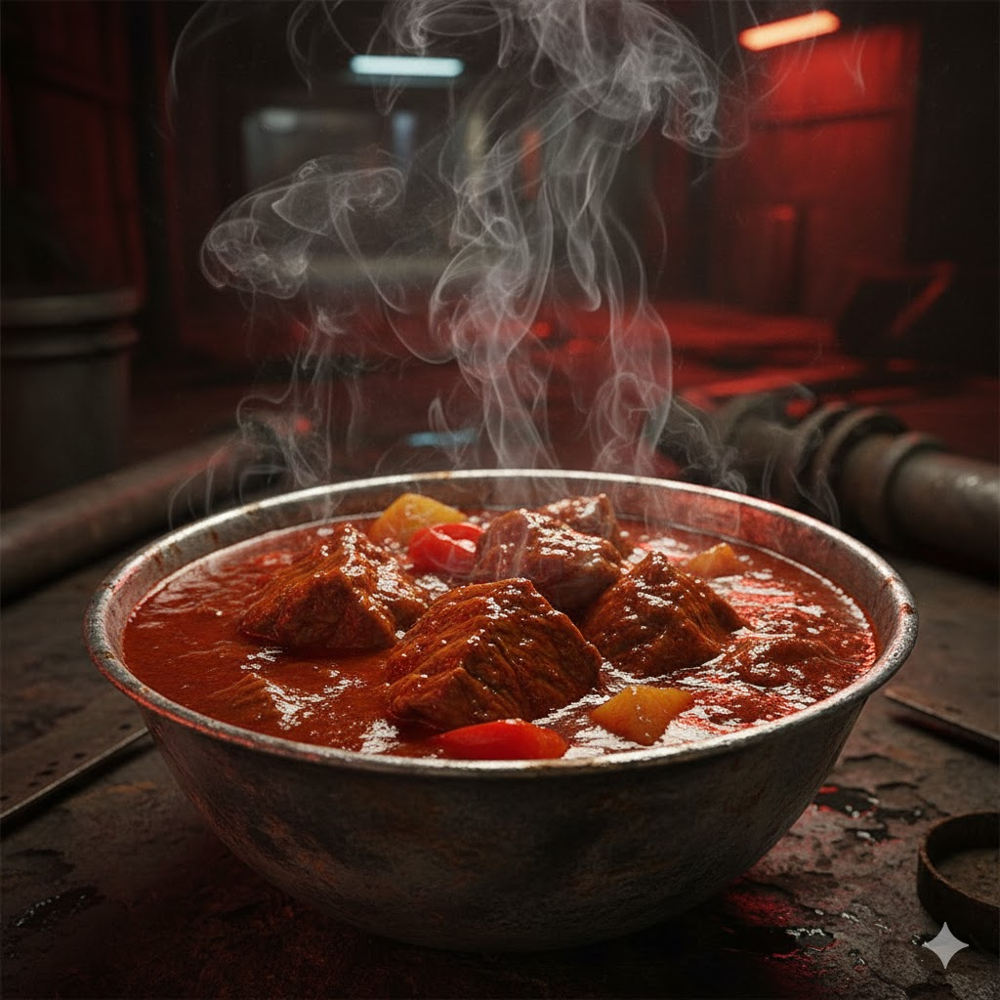
Estilo: Estofado húngaro reinterpretado con ingredientes de bajo
presupuesto, alta intensidad y una cocción lenta que transforma
cortes duros en potencia pura.
Inspiración: Túneles de
mantenimiento de Cyberpunk 2077, zonas prohibidas bajo megaciudades à
la Blade Runner, agua residual caliente que corre junto a tuberías
corroídas y fogones improvisados alimentados por baterías
recicladas.
🕳️ Descripción Cyberpunk
Bajo la ciudad, donde solo las ratas, los exilados y los netrunners en fuga se atreven a esconderse, existe un plato que mantiene vivos a los que han abandonado la superficie: el Goulash de Alcantarilla.
No es bonito. No pretende serlo.
Es espeso, rojo, picante, con
un aroma ahumado que se mezcla con el vapor caliente de los
subniveles. Cocinado con cortes resistentes de res, paprika profunda
y verduras que sobrevivieron al mercado negro, este goulash puede
alimentar a una banda entera de renegados con un simple olla vieja
calentada sobre un tubo de vapor industrial.
-
Tiempo
total: 60 - 90 minutos.
- Integración de carne: 15 min.
- Hidratación y cocción lenta: 45-60 min (mínimo).
-
Hardware
(Equipo):
- Olla de cocción lenta o de hierro fundido: Necesaria para descomponer el colágeno de los cortes más duros ("carne de rata" simulada).
- Cuchara de madera vieja: Para raspar el fondo y recuperar los bits de sabor quemado.
- Nota de Overclocking: Si necesitas acelerar este proceso de "Subnivel 0", añade una cucharadita de bicarbonato de sodio a la carne mientras la sellas. Esto hackeará el pH de la proteína, acelerando la caramelización y ablandando las fibras en la mitad del tiempo habitual.
🥩 Ingredientes (2–3 raciones)
Para el goulash
- 300 g carne de res en cubos (choclillo, osobuco deshuesado, punta paleta)
- 1 cebolla grande picada
- 2 dientes de ajo rallados
- 1 cda paprika dulce
- 1 cdta paprika ahumada (clave para el ambiente “subterráneo”)
- ½ cdta comino
- 1 cda pasta de tomate
- 1 tomate picado (opcional, si hay acceso a tomates reales)
- ½ pimentón rojo picado
- 1 cda harina (para espesar)
- 1 ½ taza caldo de res (o agua + cubo sintético)
- 1 cdta vinagre o jugo de limón (equilibra)
- 1 hoja de laurel (si se consigue en el mercado negro)
- Sal y pimienta
- 1–2 cdas aceite
Extras opcionales
- 1 papa picada en cubos (versión más sustanciosa)
- 1 chorrito de salsa de soja (aumenta el umami “industrial”)
- ½ cdta chile en escamas (si quieres “calor radiactivo”)
🔧 Subreceta: Base “Subnivel 0”
- Calentar aceite en olla profunda.
- Dorar los cubos de carne por tandas para evitar que hiervan.
- Retirar la carne.
- En el mismo fondo, sofreír cebolla hasta dorar.
- Añadir ajo y pimentón; cocinar 30 segundos.
- Incorporar harina + paprika dulce + ahumada + comino.
- Mezclar hasta formar una pasta roja espesa y aromática.
🔥 Paso a Paso (Técnica Profesional)
- Integrar la carne
- Regresar los cubos dorados a la olla.
- Agregar pasta de tomate y mezclar para caramelizar ligeramente.
- Hidratación y cocción
- Verter caldo caliente hasta cubrir.
- Añadir tomate picado, laurel y un chorrito de soja (opcional).
- Llevar a hervor.
-
Bajar el
fuego y cocinar 45–70 minutos, según el corte.
- En olla a presión: 20–25 minutos.
- Ajuste final
- Añadir vinagre o limón para equilibrar.
- Ajustar sal y picante.
- Si quieres un goulash ultra-espeso estilo “pasta de alcantarilla”:
- destapar los últimos 10 minutos para reducir.
La textura final debe ser espesa y rojiza, casi como barro volcánico industrial.
🍽️ Sugerencia de Servicio Estilo Sump-Block
- Servir en tazones metálicos reciclados de laboratorio.
-
Acompañar
con:
- Pan plano recalentado sobre tubos calientes
- Arroz viejo (si se quiere diluir el picante)
- O una papa hervida entera, estilo ración de supervivencia
Etiqueta recomendada:
“No apto para estómagos corporativos.
Producto del Subnivel 0.”
🛠 Notas del Chef / Optimización Cyberpunk
- Low-tier: reemplazar 1/3 de la carne por proteína impresa (meat-print) para abaratar.
- Corporate Edition: añadir 1 cdta mantequilla + 1 chorrito de vino tinto al inicio de la cocción.
- Versión Mutante: incorporar ½ cdta gochugaru o chile fermentado para color rojo neón.
- Max-Density: añadir papa + 1 cda pan rallado para convertirlo en ración sustanciosa de combate.
- Vegano: carne vegetal + caldo de verduras + más paprika para compensar.
Bistec “Sintético” con Chimichurri de Algas — “Bio-Carne & Oceánica Cibernética”
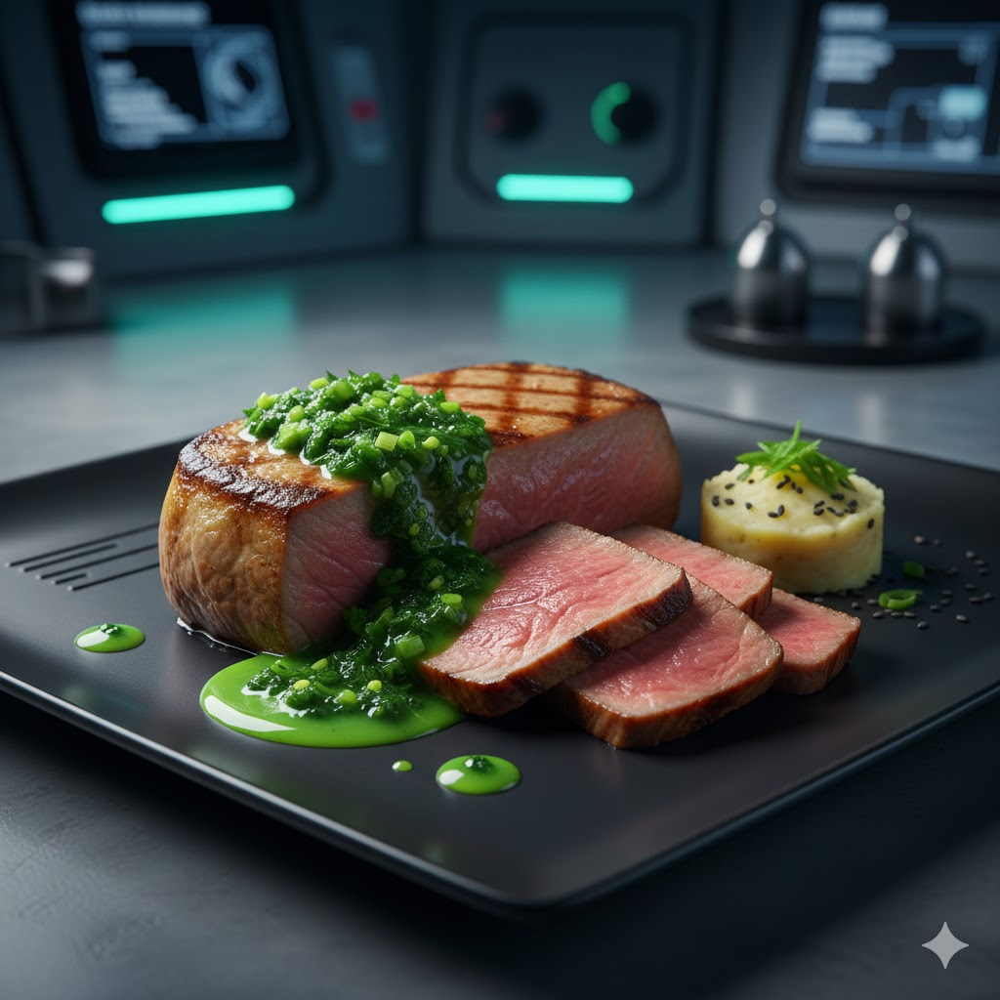
Estilo: Corte de res (o meat-print corporativo) sellado a alta
temperatura, acompañado con chimichurri reinventado con algas
frescas o deshidratadas.
Inspiración: Laboratorios de cultivo
proteico tipo Neuromancer, módulos oceánicos de Ghost in the Shell,
cartas gastronómicas corporativas de nivel medio en Night City.
🌐 Descripción Cyberpunk
Cuando las megacorporaciones privatizaron la producción de carne, el
bistec sintético se convirtió en estándar para oficinistas,
técnicos de bioimpresión y mercenarios con presupuesto justo.
Este
plato combina carne de laboratorio —suave, uniforme, sin nervios—
con un chimichurri de algas inspirado en los complejos subacuáticos
donde se cultivan bio-organismos optimizados.
El resultado es un choque entre la tierra (o su simulación industrial) y el océano ciber-modificado.
Tiempo total: 20 minutos.
- Atemperado de la "Masa": 10 min.
- Sellado de Alta Frecuencia: 6 - 8 min.
- Reposo de Datos: 2 min.
Hardware (Equipo):
- Sartén de Acero Inoxidable: Ideal para generar una costra uniforme que oculte el origen artificial de la pieza.
- Prensa de Carne o Peso: Para asegurar un contacto total de la superficie con el calor.
- Cuchillo de Sierra Fina: Para un corte limpio que simule fibras musculares reales.
Nota de Overclocking: Para que el "sangrado" del bistec sintético sea convincente, inyecta o marina la pieza con una mezcla de jugo de remolacha y salsa Worcestershire. Al cortar la carne, el líquido rojo oscuro fluirá con la viscosidad exacta de la hemoglobina orgánica, engañando incluso a los sensores biométricos más exigentes.
🥩 Ingredientes (1 ración)
Para el bistec
- 180–220 g bistec sintético o res real (lomo liso, punta paleta o sobrecostilla)
- 1 cdta aceite vegetal
- ½ cdta sal
- Pimienta negra al gusto
- 1 cdta mantequilla (opcional, para versión “corporativa”)
- 1 diente de ajo entero machacado (para aromatizar)
Para el Chimichurri de Algas “SeaNet”
- 1 cda alga nori triturada o 1 cda alga wakame hidratada finamente picada
- 1 cda perejil picado
- 1 cda cebollín o cilantro picado
- 2 cdas aceite (oliva o mezcla vegetal)
- 1 cda vinagre de arroz o limón
- 1 cdta salsa de soja (aumenta umami marino)
- 1 pizca ají seco o merkén
- 1 pizca ajo en polvo (o ¼ diente rallado)
- Sal mínima (la soja ya aporta)
(Debe quedar más fluido que un chimichurri tradicional, casi como una salsa oceánica aromática.)
🔧 Subreceta: Chimichurri “SeaNet Protocol”
- Mezclar algas + perejil + cebollín.
- Añadir vinagre o limón + soja + ajo + ají.
- Incorporar el aceite poco a poco hasta ligar.
- Reposar 10 minutos para que las algas liberen aroma.
🔥 Paso a Paso (Técnica Profesional)
- Sellado del bistec
- Calentar sartén o plancha a fuego alto hasta casi humear.
- Frotar el bistec con aceite, sal y pimienta.
- Sellar 1:30–2 min por lado (término medio poco).
- Añadir mantequilla + ajo al final para aromatizar (opcional).
- Retirar y dejar reposar 3 minutos.
- Corte y presentación
- Cortar en láminas si es sintético (queda más atractivo).
- O servir entero si es bistec real.
- Finalización
- Cubrir con el chimichurri de algas.
- Añadir unas gotas extra de aceite si deseas brillo tipo “cromo biológico”.
El bistec sintético se cocina más rápido y de manera más uniforme que la carne real.
🍽️ Sugerencia de Servicio Estilo “Bio-Lab 77”
- Servir en plato metálico o cerámico negro mate.
-
Acompañar
con:
- Puré de papa con miso
- Arroz blanco con sésamo
- Chips de algas crujientes
- Etiqueta
ficticia recomendada:
“Proteína Nivel 2 — Apta para Operarios Certificados.”
🛠 Notas del Chef / Optimización Cyberpunk
- Low-tier: bistec completamente sintético + más salsa de soja en el chimichurri para compensar sabor plano.
- Corporate Edition: añadir mantequilla clarificada + gotas de aceite de sésamo.
- Hack runner: usa un soplete para crear líneas de parrilla perfectas. Eso reforzará el efecto de carne impresa.
- Versión Oceánica Profunda: mezclar nori + wakame + unas gotas de aceite de pescado (si disponible).
- Edición Max-Umami: agregar ½ cdta de miso blanco al chimichurri.
- Vegana: bistec vegetal + chimichurri igual (excelente combinación).
Estofado del Yermo de River Ward — “Nomad’s Hearty Brew”
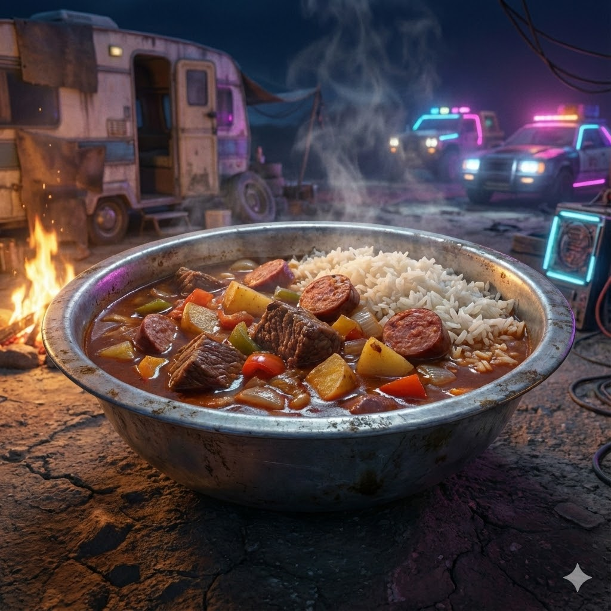
Estilo: Guiso denso, reconfortante y energético, pensado para alimentar grupos grandes, recalentar sin perder textura y resistir días largos en carretera o puestos avanzados.
Inspiración: Campamentos nómades del Badlands, remolques armados con piezas recicladas, fogatas nocturnas lejos de Night City, y la cocina honesta de River Ward: comida real, sin corporaciones de por medio.
🛻 Descripción Cyberpunk
Cuando el asfalto termina y solo queda polvo, óxido y silencio, la
comida vuelve a ser lo que siempre fue: supervivencia
compartida.
Este estofado es el plato insignia de River Ward:
carne sellada a conciencia, salchicha especiada, vegetales
resistentes y un caldo espeso que se aferra al cuerpo como una
promesa de descanso.
Servido sobre arroz basmati suelto, absorbe el caldo sin volverse pastoso, permitiendo raciones grandes, transporte fácil y recalentado múltiple. No es comida de lujo: es comida que te mantiene en pie.
-
Tiempo
total: 90 - 120 minutos (Cocción de baja intensidad).
- Preparación de Suministros: 15 min.
- Reducción de Caldo Tóxico: 75 - 100 min.
-
Hardware
(Equipo):
- Olla Ferroviaria o de Hierro Fundido: Un equipo rudo que soporte fuego directo de campamento o hornillos de queroseno.
- Tapa Pesada: Para evitar la evaporación de los preciados nutrientes en el aire seco del yermo.
- Cucharón de Metal: Para servir porciones densas y calóricas.
- Nota de Overclocking: En el yermo, el agua suele tener un sabor metálico. Hackea este perfil de sabor añadiendo pieles de cebolla tostadas al caldo (luego se retiran). Esto no solo dará un color ámbar profundo al estofado, sino que aportará un sabor "tierra" y ahumado que dignifica cualquier proteína de dudosa procedencia que hayas logrado recolectar.
🥩 Ingredientes (6–8 porciones)
Proteínas
- 450 g carne sintética enlatada (en su defecto, carne para estofado de vacuno: chuck, paleta o falda), en cubos de 2–3 cm
- 4 salchichas tipo bratwurst o chorizo picante, en rodajas de 1 cm
Base Vegetal “Yermo Orgánico”
- 2 cdas aceite vegetal o grasa reciclada
- 1 cebolla grande, picada gruesa
- 2 dientes de ajo, picados o en pasta
- 1 pimentón verde, en cubos
- 1 pimentón rojo, en cubos
- 2–3 jalapeños, picados finos (opcional)
- 2 tallos de apio, picados
- 700 g papas, peladas y en cubos grandes
Caldo y Especias
- 700 ml caldo de res
- 1 lata (800 g) tomates triturados o en cubos
- 1 cdta pimentón ahumado (paprika)
- ½ cdta comino molido
- ¼ cdta pimienta de cayena (ajustable)
- Sal y pimienta negra, al gusto
Carbohidrato de Anclaje
- 2 tazas arroz basmati crudo
- 4 tazas agua
- 1 cdta sal
- 1 cda aceite o manteca
- ½ taza cilantro fresco picado
🔧 Subreceta: Arroz Basmati “Nomad Base Layer”
- Lavar el arroz hasta que el agua salga clara.
- Calentar aceite, añadir el arroz y tostar suavemente 1 minuto.
- Agregar agua y sal, llevar a hervor.
- Bajar fuego, tapar y cocinar 12–15 minutos.
- Apagar, reposar 5 minutos y soltar con tenedor.
🔥 Paso a Paso (Técnica Profesional)
- Dorado de la salchicha
- Sellar las rodajas de bratwurst en olla pesada con 1 cda de aceite hasta dorar.
- Retirar y reservar. Dejar la grasa.
- Sellado de la carne
- Dorar la carne de res en tandas, fuego medio-alto.
- Buscar color profundo, no cocción total. Retirar y reservar.
- Sofrito estructural
- Bajar a fuego medio.
- Agregar cebolla y apio, raspar fondo. Cocinar 5–7 minutos hasta translucidez.
- Añadir ajo, pimentones y jalapeño. Cocinar 5 minutos más.
- Activación de especias
- Incorporar paprika, comino y cayena.
- Remover 1 minuto hasta liberar aroma.
- Construcción del estofado
- Agregar tomates y caldo.
- Devolver la carne sellada. Llevar a hervor suave.
- Cocción lenta
- Tapar y cocinar 1 hora a fuego bajo, hasta que la carne esté tierna.
- Integración final
- Agregar papas y salchicha.
- Cocinar 20–30 minutos hasta que las papas estén blandas y el caldo espeso.
- Ajuste y cierre
- Corregir sal y pimienta.
- Fuera del fuego, añadir cilantro fresco.
🍽️ Sugerencia de Servicio Estilo Nomad Camp
- Servir una base generosa de arroz basmati
- Cubrir con el estofado bien caliente
- Usar bowl metálico, lata cortada o plato esmaltado
- Ideal con pan rústico o pan plano chamuscado
🛠 Notas del Chef / Optimización Cyberpunk
- Versión Badlands Hardcore: añadir 1 cdta de café instantáneo al caldo para profundidad.
- Low-tier survival: usar arroz corriente y más caldo (más volumen, menos costo).
- Corporate-free deluxe: terminar con un cubo pequeño de mantequilla para brillo.
- Meal-prep nómade: el estofado mejora al día siguiente; el arroz se cocina aparte siempre.
🥓 SECCIÓN 4: COMIDA CALLEJERA - CERDO
"En un mundo de 'poone' (pasta de soja multiuso) y barritas de proteínas que saben a cartón reciclado, el cerdo es una reliquia de alta fidelidad. Es una pieza de hardware biológico que ha pasado milenios optimizando la conversión de basura en grasa saturada de grado premium. Cuando muerdes una costilla auténtica en un enclave de 'Cosa Nostra Pizza' o en un puesto fronterizo de 'El Gran Hong Kong del Sr. Lee', no solo estás ingiriendo calorías; estás ejecutando un programa genético de lujo que ha sobrevivido a tres colapsos hiperinflacionarios. El cerdo es denso, es analógico y tiene un ancho de banda de sabor que el software de la soja simplemente no puede emular sin dar un error de segmentación en tu paladar."
Ramen de Cerdo Glaseado con Coca-Cola — “Caldo Neón & Pork Circuit Glaze”
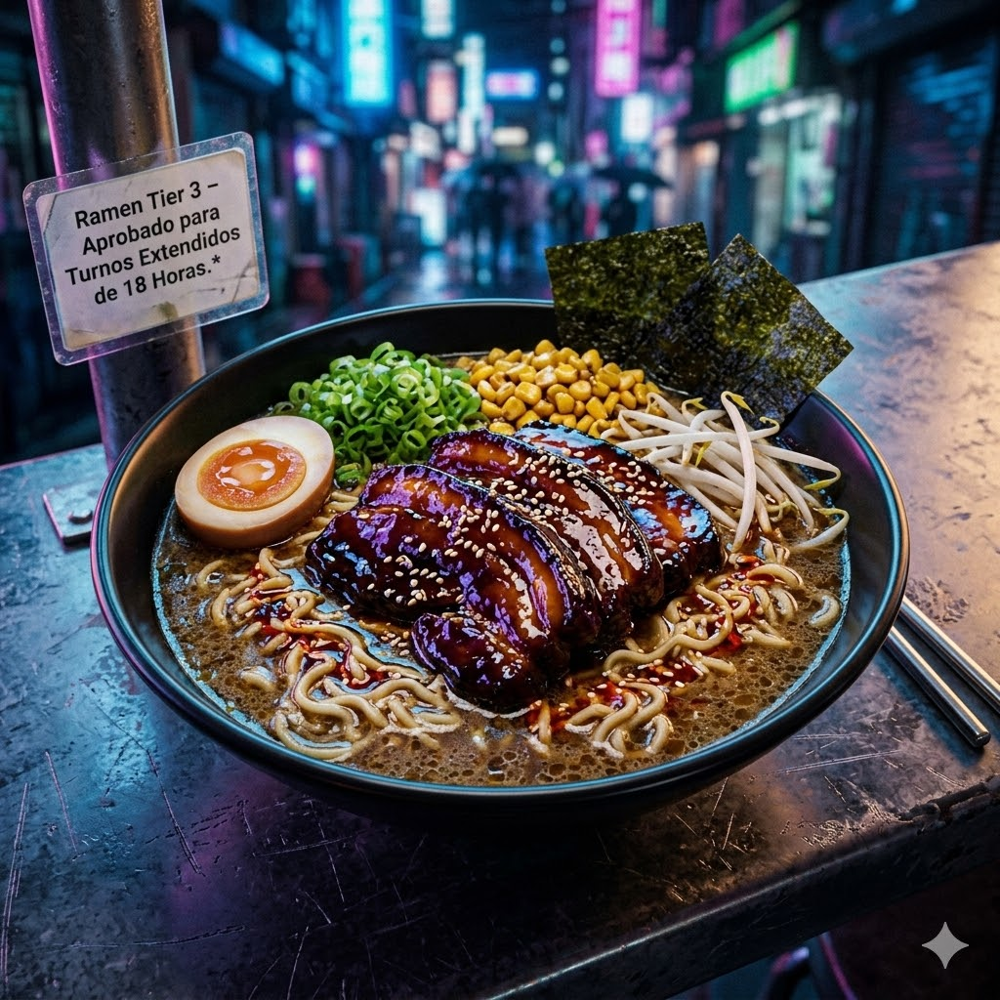
Estilo: Ramen callejero de nivel medio, con cerdo caramelizado en
Coca-Cola para un glaseado oscuro, brillante y adictivo.
Inspiración: Blade Runner, callejones de Cyberpunk 2077, puestos
clandestinos iluminados por neón donde se vende ramen barato pero
increíblemente sabroso.
🍜 Descripción Cyberpunk
En los distritos húmedos donde llueve ácido y el vapor de los ductos cubre el aire, este ramen es un clásico para mercenarios, repartidores nocturnos y tecnomédicos que salen de turnos de 18 horas.
El cerdo —dulce, pegajoso, casi lacado— recuerda a los glaseados industriales de comida corporativa, mientras que el caldo cálido y salado devuelve la humanidad a cualquiera que viva en el espaciourbano.
Tiempo total: 2 horas 30 min.
- Preparación y Rub: 15 min.
- Cocción Lenta (Blindaje): 2 horas.
- Lacado Final (Neon-Flash): 15 min.
Hardware (Equipo):
- Horno o Ahumador: Para la desnaturalización de la proteína.
- Papel de aluminio grueso (Grado Industrial): Para la técnica de la "envoltura de Texas" que mantiene la humedad.
- Pincel de silicona: Para aplicar el glaseado radioactivo.
Nota de Overclocking: Para que el color del glaseado sea "antinatural", usa mermelada de frutos rojos mezclada con un poco de colorante alimentario violeta o azul. Al salir del horno, el brillo será tan intenso que parecerá que las costillas están emitiendo radiación.
🐖 Ingredientes (1 ración generosa)
Para el cerdo glaseado “Coca-Circuit”
- 150 g de cerdo en láminas gruesas (bondiola, costillar deshuesado o pulpa)
- ½ taza Coca-Cola (no zero)
- 1 cda salsa de soja
- 1 cdta ketchup o pasta de tomate
- 1 cdta vinagre de arroz o limón
- 1 cdta azúcar morena (opcional, para caramelización extrema)
- 1 diente de ajo aplastado
- 1 pizca jengibre rallado
Para el caldo rápido estilo “Neon Broth”
- 2 tazas caldo de cerdo o pollo
- 1 cda salsa de soja
- 1 cdta miso (blanco o rojo)
- 1 cdta aceite de sésamo
- 1 cdta vinagre de arroz
- 1 pizca azúcar
- 1 hoja de alga nori o 1 cda de nori triturado
- Opcional: 1 cdta pasta de chile (doubanjiang o sriracha)
Para el bowl
- 120–150 g fideos ramen
- ½ huevo marinado (o huevo duro)
- Cebollín picado
- Sésamo tostado
- Brotes verdes, maíz o verduras al vapor
- Nori extra (si quieres más umami)
🔧 Subreceta: Cerdo Glaseado “Coca-Circuit”
- Colocar el cerdo en una sartén pequeña.
- Añadir Coca-Cola + soja + ketchup + vinagre + ajo + jengibre.
- Llevar a hervor.
- Cocinar 10–15 minutos, girando ocasionalmente.
- Reducir hasta que quede un glaseado espeso, casi jarabe.
- Dorar ligeramente el cerdo en el glaseado para formar un barniz oscuro y brillante.
El truco: no dejar que el glaseado queme. Retíralo al primer signo de espuma oscura.
🔥 Paso a Paso (Ramen Profesional)
1. Preparar el caldo “Neon Broth”- Calentar el caldo a fuego medio.
- Añadir soja + miso + aceite de sésamo + azúcar + nori.
- Cocinar 5–7 minutos hasta integrar.
- Ajustar acidez con vinagre y picante si deseas.
- Hervir según indicaciones (generalmente 3–4 minutos).
- Escurrir y colocar directamente en el bowl final.
- Fideos en la base.
- Verter el caldo muy caliente.
- Añadir el cerdo glaseado en láminas.
- Incorporar huevo, cebollín, maíz, brotes y nori.
- Finalizar con sésamo y una pizca de aceite de chile si quieres un toque callejero.
🌃 Sugerencia de Servicio Estilo Night City
- Bowl negro profundo con borde delgado.
- Iluminar desde un costado con luz cálida para que el glaseado del cerdo brille tipo “cromo”.
- Puedes
agregar un cartel ficticio:
“Ramen Tier 3 – Aprobado para Turnos Extendidos de 18 Horas.”
🛠 Notas del Chef / Optimización Cyberpunk
- Low-tier: usa cerdo sintético (pork-print) y duplica la cantidad de soja para compensar el sabor plano.
- Corporate Edition: termina el cerdo con 1 cdta de mantequilla clarificada para verdadero brillo de showroom.
- Ultra-Street: añade chile fermentado (doubanjiang) al glaseado para color rojo-neón.
- Versión dulce-oscura: usa Coca-Cola + un chorrito de salsa hoisin.
- Vegana: tofu firme + caldo vegetal + glaze de cola sin productos animales.
Tacos de Carnitas con Kimchi — “Street-Fusion del Sprawl Neo-Coreano”
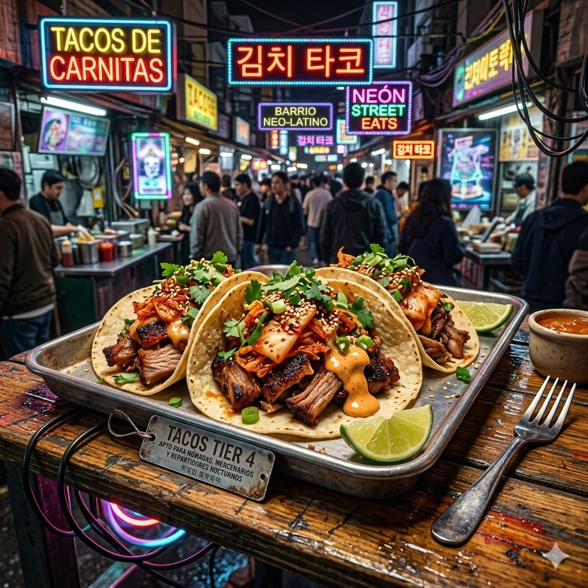
Estilo: Tacos de carnitas clásicas pero con final ácido-picante
gracias al kimchi.
Inspiración: Cyberpunk 2077 (Heywood y
Japantown colisionando), Snow Crash (mezcla urbana inevitable),
puestos callejeros iluminados por LED y cocinas de barrio que
sobreviven entre corporaciones.
🌮 Descripción Cyberpunk
En las zonas donde conviven inmigrantes latinos, coreanos, chinos y nómadas urbanos, surgieron estos tacos híbridos: carnitas tiernas, cocinadas lentamente, combinadas con el punch ácido-fermentado del kimchi, que corta la grasa como un láser quirúrgico.
Un taco adictivo, lleno de contraste, que refleja la mezcla cultural brutal de una megaciudad donde todas las calles son un enjambre de dialectos, especias y cables eléctricos.
Tiempo total: 3 horas (o 30 min si usas "Carnitas de Grado-B" ya procesadas).
- Confite (Cocción lenta del cerdo): 2 horas 30 min.
- Dorado térmico (Crispy edges): 10 min.
- Ensamblaje de la red: 5 min.
Hardware (Equipo):
- Olla de cobre o hierro pesado (Cazo): Para un confitado uniforme en manteca.
- Sartén de acero al carbono: Para el último "overclocking" de la carne, buscando los bordes negros y crujientes.
- Espátula metálica: Para trocear la carne directamente en la plancha.
Nota de Overclocking: Para hackear la fusión, no solo pongas el kimchi encima. Saltea el kimchi en la misma grasa del cerdo durante 60 segundos antes de armar el taco. Esto caramelizará los azúcares del fermento y creará un puente de sabor entre la grasa animal y el ácido láctico, elevando la respuesta dopamínica del comensal.
🐖 Ingredientes (4–5 tacos)
Para las carnitas “Slow-Fusion”- 300 g carne de cerdo (bondiola, pierna o panceta sin piel)
- 1 taza caldo o agua
- ½ taza jugo de naranja
- 1 cda salsa de soja
- 1 cdta vinagre de arroz
- 1 cdta azúcar o miel
- 1 diente de ajo
- 1 hoja de laurel
- ½ cdta comino
- ½ cdta sal
- Pimienta negra
- 4–5 tortillas de maíz
- ¼ taza kimchi picado
- 1 cda cebollín o cilantro picado
- 1 cdta semillas de sésamo
- Limón o lima
- 1 cda mayonesa
- 1 cdta gochujang
- 1 chorrito de limón
- 1 cdta agua
para aligerar
🔧 Subreceta: Carnitas “Slow-Fusion Circuit”
- Colocar el cerdo en una olla pequeña.
- Añadir caldo + jugo de naranja + soja + vinagre + ajo + especias.
-
Cocinar
tapado a fuego bajo 1 h – 1 h 30 min, hasta que el cerdo se
deshaga.
- Olla a presión: 25–30 min.
- Retirar el cerdo y desmenuzar.
- Reducir el líquido restante hasta textura de sirope ligero.
- Mezclar el cerdo desmenuzado con esta reducción para glasearlo ligeramente.
🔥 Paso a Paso (Técnica Profesional)
1. Dorar las carnitas- En sartén caliente, dorar el cerdo desmenuzado hasta formar puntas crujientes.
- Añadir una cucharada del glaseado para caramelizar.
- Calentar sobre plancha o sartén hasta que estén flexibles y ligeramente tostadas.
- Colocar carnitas doradas.
- Añadir kimchi picado (mezcla de ácido + picante + crujiente).
- Terminar con cebollín/cilantro y semillas de sésamo.
- Rociar unas gotas de limón.
- Agregar la Salsa Neo-K Fusion si quieres un boost cremoso-picante.
🌐 Sugerencia de Servicio Estilo Night Market
- Presentar en plato metálico o bandeja de cartón de callejón.
- Añadir
etiqueta ficticia:
“Tacos Tier 4 — Apto para nómadas, mercenarios y repartidores nocturnos.” - Acompañar con cerveza fría ligera o soda especiada coreana.
🛠 Notas del Chef / Optimización Cyberpunk
- Low-tier: usar cerdo sintético (pork-print) y aumentar soja para compensar sabor.
- Corporate Edition: añadir mantequilla clarificada a las carnitas justo al dorarlas.
- Neo-Coreano extremo: añadir un toque de gochugaru al glaseado.
- Edición dulce-picante: mezclar kimchi + mango picado.
- Vegana: usar jackfruit + gochujang + reducción cítrica.
Bánh Mì de Chorizo — “Street-Sandwich Transpacificado”
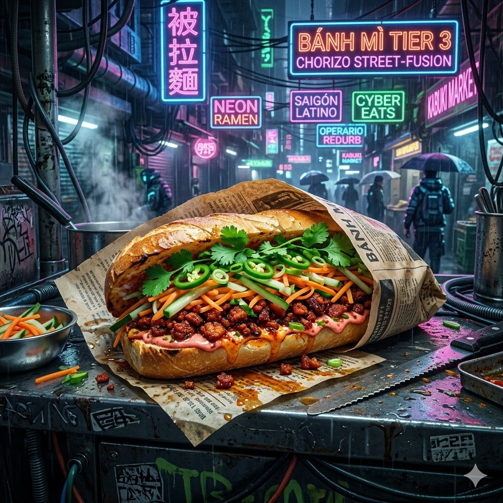
Estilo: Fusión
Saigón–Barrio Latino: chorizo crocante, encurtidos brillantes y
mayonesa especiada.
Inspiración: Blade Runner 2049, mercados de
Cyberpunk 2077, food trucks clandestinos que operan entre
contenedores oxidados y neones.
🥖 Descripción Cyberpunk
El Bánh Mì de Chorizo es un clásico de las calles del distrito transpacífico: pan crujiente francés, herencia colonial remezclada con el fuego latino del chorizo y los ácidos eléctricos del escabeche vietnamita.
Un sándwich que sobrevive en un mundo donde los ingredientes reales son un lujo y la mezcla cultural es inevitable. Perfecto para hackers hambrientos, moto-repartidores o mercenarios que necesitan comer rápido antes del próximo encargo.
Tiempo total: 20 - 25 minutos.
- Preparación de "Pickles" rápidos: 10 min.
- Procesado del Chorizo: 10 min.
- Ensamblaje de la unidad: 5 min.
Hardware (Equipo):
- Sartén de hierro o plancha: Para desgrasado y tostado simultáneo.
- Cuchillo de sierra (Serrado): Para cortar la corteza del pan sin colapsar la estructura interna de la miga.
- Mortero (Opcional): Para machacar el ajo y el chile de la mayonesa "Spicy-Tech".
Nota de Overclocking: Para que el chorizo parezca un "embutido de laboratorio" de alta gama, retira la piel (tripa) antes de cocinarlo y desmenúzalo completamente en la sartén hasta que parezca tierra roja crujiente. Al montarlo, presiona el pan contra la grasa roja que quedó en la sartén; esto "formatea" el pan con el sabor de la proteína y le da un color naranja industrial que brilla bajo los neones.
🐖 Ingredientes (1 sándwich)
Base del Bánh Mì
- 1 baguette pequeña (idealmente crujiente pero ligera)
- 120–150 g chorizo (fresco o ahumado), en rodajas o desmenuzado
- 1 cda mayonesa
- 1 cdta salsa sriracha o gochujang
- 1 cdta jugo de limón
- 1 pizca de azúcar
Encurtidos “Electro-Pickles”
(Clásicos del bánh mì, pero potenciados para el libro)
- ½ taza zanahoria rallada
- ½ taza pepino en tiritas finas
- 2 cdas vinagre de arroz
- 1 cdta azúcar
- 1 pizca sal
- 1 chorrito de agua
- Opcional: 3–4 láminas de rábano (daikon) si lo tienes
Toppings y extras
- Cilantro fresco
- Ají verde en rodajas finas
- Cebollín picado
- Opcional: pepinillos o jalapeños
- Opcional: un toque de aceite de sésamo
🔧 Subreceta: Encurtidos “Electro-Pickles”
- Mezclar vinagre + azúcar + sal + chorrito de agua.
- Incorporar zanahoria y pepino.
- Reposar 10–15 minutos (mínimo) o hasta 24 h en refrigeración.
Deben quedar brillantes, crujientes y con acidez eléctrica.
🔥 Paso a Paso (Técnica Profesional)
- Preparar el chorizo
- En sartén caliente, dorar el chorizo hasta que quede crocante y suelte su grasa naranja neón.
- Si es fresco, desmenuzarlo para textura tipo street-filling.
- Si es ahumado, cortar en rodajas y dorar ambas caras.
- Mayonesa especiada “AI-Mayo”
- Mezclar mayonesa + sriracha/gochujang + limón + pizca de azúcar.
- Debe quedar rosada, picante y ligeramente dulce.
- Preparar el pan
- Cortar baguette sin abrir completamente.
- Tostar ligeramente para que quede crocante por fuera, suave por dentro.
- Montaje del Bánh Mì
- Untar la AI-Mayo en ambas caras internas del pan.
- Agregar una capa generosa de chorizo dorado.
- Incorporar encurtidos escurridos.
- Añadir cilantro, ají verde y cebollín.
- Finalizar con un toque mínimo de aceite de sésamo (opcional).
🌐 Sugerencia de Servicio Estilo Distrito Transpacífico
- Servir envuelto en papel kraft impreso con tipografía estilo neon-punk.
- Añadir
etiqueta ficticia:
“Bánh Mì Tier 3 – Permitido para Operarios de RedUrb y Motocarteros Nocturnos.” - Acompañar con bebida de té helado sintético o soda coreana cítrica.
🛠 Notas del Chef / Optimización Cyberpunk
- Low-tier: chorizo sintético (pork-print) + extra encurtidos para levantar sabor.
- Corporate Edition: usar chorizo artesanal + pan baguette de masa madre + agregar paté suave al fondo del pan.
- Neon-Spice: añadir gochugaru al chorizo mientras se dora.
- Max-Umami: ½ cdta salsa de soja o fish sauce a la mayo especiada.
- Vegana: usar chorizo vegetal + mayo vegana + encurtidos iguales.
Costillas “Toxic Waste” — “Radioactive Sludge BBQ”
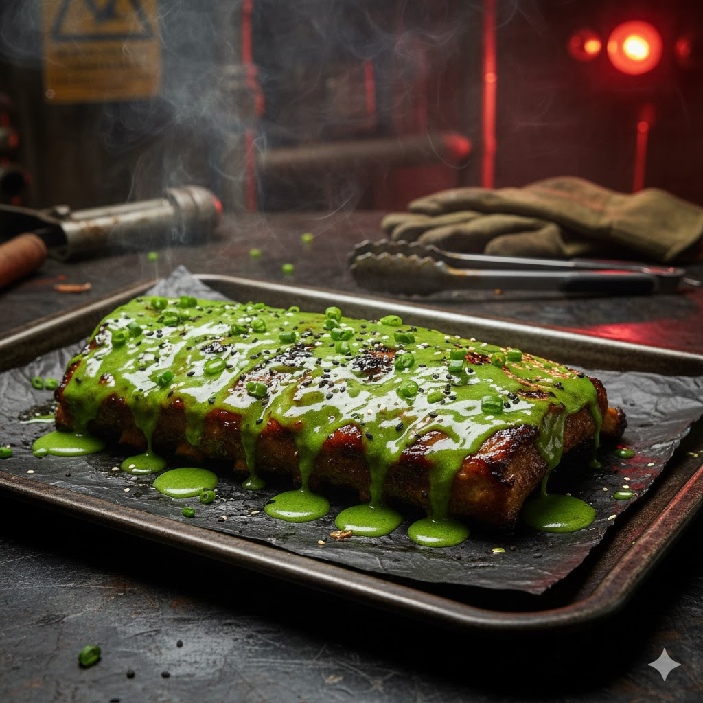
Estilo:
Costillas de cerdo cocinadas lento, lacadas con una salsa densa,
pegajosa y de color neón que recuerda a derrames industriales…
pero con sabor espectacular.
Inspiración: Akira, Cyberpunk
2077 Badlands + plantas químicas, Shadowrun zonas contaminadas,
guaridas de pandillas biopunk.
☢️ Descripción Cyberpunk
En los cinturones industriales donde las corporaciones desechan químicos y prototipos fallidos de bio-aromas, los habitantes locales desarrollaron un estilo propio de BBQ: salsas densas y brillantes que parecen residuos tóxicos, pero que rebosan sabor intenso, ahumado, dulce, ácido y picante.
Estas costillas son un ícono del wasteland urbano: carne tierna que se despega del hueso, cubierta por un glaseado espeso que parece peligroso… y lo es, pero solo para tus papilas gustativas.
Tiempo total: 3 horas (o 45 min en "Modo Nómada" con olla a presión).
- Preparación y Rub de Ceniza: 15 min.
- Horneado de Blindaje (Cocción lenta): 2 horas 30 min.
- Aplicación del Residuo Tóxico (Glaze): 10 min.
Hardware (Equipo):
- Horno con ventilación: Para que la costra de especias se seque y parezca carbón industrial.
- Papel de aluminio: Para el efecto "cámara de aislamiento" durante la cocción.
- Biberón de cocina: Para derramar el glaseado verde de forma desordenada y realista.
Nota de Overclocking: Para que el "Sludge" (lodo) verde sea realmente radiactivo, usa una base de mostaza dulce o miel mezclada con colorante alimentario verde neón. Pero el verdadero "hack" de sabor es añadir una pizca de wasabi en polvo al glaseado; el golpe de calor nasal simulará la sensación de estar inhalando vapores químicos reales en una zona de exclusión, elevando la experiencia sensorial al límite.
🐖 Ingredientes (2–3 porciones)
Para las costillas
- 700–900 g costillar de cerdo
- 1 cdta sal
- ½ cdta pimienta
- 1 cdta paprika
- ½ cdta ajo en polvo
- ½ cdta cebolla en polvo
- 1 cdta azúcar rubia
- 1 cda aceite
- ½ taza caldo de cerdo o agua (para la cocción)
Para la salsa “Toxic Waste Glaze”
(Color radioactivo y sabor explosivo)
- 3 cdas ketchup
- 2 cdas miel o azúcar rubia
- 1 cda salsa de soja
- 1 cda vinagre (arroz o blanco)
- 1 cdta mostaza
- 1–2 cdas salsa picante (sriracha, gochujang o ají fermentado)
- 1 cdta jugo de limón
- ½ cdta jengibre rallado
- 1 chorrito de agua para ajustar
- Opcional (para color “toxic-neón”):
- ½ cdta cúrcuma + gota de colorante verde o
- 1 cdta wasabi en pasta (verde natural + picor)
🔧 Subreceta: Mezcla de Secado “Wasteland Rub”
- Mezclar sal + pimienta + paprika + ajo + cebolla + azúcar rubia.
- Frotar las costillas por ambos lados hasta cubrir completamente.
- Reposar 10–15 minutos.
🔥 Paso a Paso (Técnica Profesional)
- Para cocción lenta puedes elegir método:
-
Olla a presión
(rápido, estilo callejón industrial):
- Colocar costillas + ½ taza caldo.
- Cocinar 25–30 min.
- Sacar y dejar enfriar un poco.
-
Horno (textura
premium):
- Precalentar a 150°C.
- Envolver costillas en papel aluminio con un chorrito de caldo.
- Hornear 2 h – 2 h 30 min, hasta que estén muy tiernas.
- Preparar la Salsa “Toxic Waste Glaze”
- Mezclar todos los ingredientes en sartén pequeña.
- Cocinar 5–8 minutos hasta que la salsa espese y quede brillante.
- Ajustar espesor con agua si es necesario.
- Probar: debe ser dulce, ácida, ahumada, picante y un poco “peligrosa”.
- Lacado final
- Pintar las costillas con abundante “Toxic Waste Glaze”.
- Llevar a horno o sartén a fuego medio-alto 5–8 minutos, hasta caramelizar.
- Repetir una segunda capa para efecto “residuo químico”.
🌐 Montaje estilo Zona Radiactiva
- Cortar las costillas en porciones individuales.
- Servir sobre bandeja metálica, papel kraft negro o plato de cerámica matte.
- Espolvorear sésamo y cebollín para contraste visual “bio-lab”.
“Producto Nivel Tóxico 3 — No ingerir antes de un combate clandestino.”
🛠 Notas del Chef / Optimización Cyberpunk
- Low-tier: usar costillas sintéticas (pork-print) y duplicar salsa para compensar.
- Corporate Edition: agregar una nuez de mantequilla a la salsa para brillo y suavidad.
- Mutant Edition: usar pasta de wasabi para un verde brillante y picante.
- Red-Neón: usar gochujang para un rojo oscuro estilo derrame químico industrial.
- Ultra-Street: añadir una pizca de ajinomoto (MSG) para nivel umami máximo.
- Veggie: tofu firme o tempeh lacado igual, sorprendentemente increíble.
Dumplings de Cerdo y Morcilla — “Bio-Fillings del Distrito Sanguíneo”
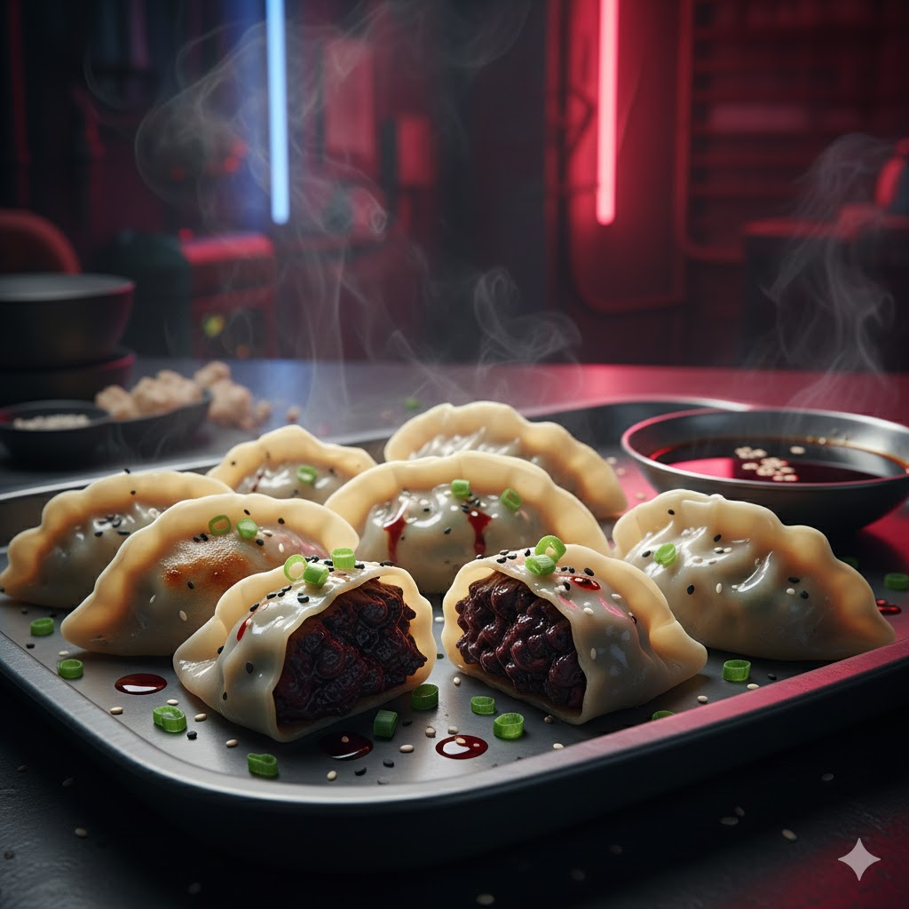
Estilo:
Dumplings chinos/japoneses con relleno oscuro y profundo gracias a la
morcilla, una mezcla contundente y umami que recuerda a las cocinas
clandestinas del subsuelo.
Inspiración: mercados húmedos de
Blade Runner, puestos nocturnos de Cyberpunk 2077, callejones de
Kowloon reimaginados en el siglo XXII.
🩸 Descripción Cyberpunk
En los niveles inferiores de la megaciudad —entre tuberías goteando y neones parpadeantes— los cocineros callejeros crearon un dumpling que combina cerdo fresco con morcilla oscura, logrando un relleno casi biotecnológico: suave, jugoso, mineral, intenso. Un bocado que parece salido de un laboratorio bio-orgánico… pero sabe como gloria del street food.-
Tiempo
total: 45 - 50 minutos.
- Preparación del Bio-Filling (Relleno): 15 min.
- Ensamblaje y sellado de seguridad: 20 min.
- Cocción (Vapor/Plancha): 10 - 15 min.
-
Hardware
(Equipo):
- Vaporera de bambú o metal: Para la cocción inicial que estabiliza las proteínas.
- Sartén antiadherente: Si se desea el acabado Gyoza (base crujiente).
- Palillo de precisión: Para cerrar los pliegues de la masa y evitar fugas de "material biológico".
- Nota de Overclocking: Para que el relleno sea visualmente impactante, asegúrate de que la morcilla esté bien desmenuzada y mezclada con el cerdo. El contraste entre la masa blanca pálida y el interior negro/rojizo oscuro debe ser total. Un "hack" de sabor: añade una pizca de canela y pimienta de Jamaica a la mezcla; estas especias resaltarán el dulzor de la sangre y crearán un perfil de sabor complejo que recordará a los banquetes de las altas esferas de las corporaciones, pero en un formato de comida callejera prohibida.
🐖 Ingredientes (20–24 dumplings)
Para el relleno “Bio-Core”- 200 g carne de cerdo molida
- 80–100 g morcilla (sin piel, desmenuzada)
- 1 cda salsa de soja
- 1 cdta aceite de sésamo
- 1 cdta jengibre rallado
- 1 diente de ajo rallado
- 1 cda cebollín picado
- ½ cdta azúcar
- 1 pizca sal y pimienta
- Opcional: 1 cda repollo picado finísimo
- 20–24
láminas de dumpling (wonton / gyoza)
(Si usas masa casera: mezcla masa simple 2:1 harina/agua caliente.)
- 1 cda salsa de soja
- 1 cdta vinagre negro o de arroz
- ½ cdta azúcar
- ½ cdta aceite de chile o gochugaru
- 1 cda agua
- Opcional: gota de aceite de sésamo
🔧 Subreceta: Relleno “Bio-Core”
- Colocar carne molida + morcilla en un bowl.
- Añadir soja, sésamo, jengibre, ajo, azúcar y condimentos.
- Mezclar muy bien, casi batiendo, hasta que el relleno quede pegajoso y cohesivo.
- Reposar 10 minutos para integrar sabores.
🥟 Paso a Paso (Técnica Profesional)
1. Armado del dumpling- Tomar una lámina de massa.
- Agregar 1 cucharadita generosa de relleno.
- Humedecer bordes con agua.
- Doblar y sellar haciendo pequeñas pliegues si deseas estilo japonés.
- Repetir
hasta terminar el relleno.
- Calentar 1 cda de aceite en sartén.
- Colocar dumplings y dorar la base.
- Agregar ¼ taza agua + tapa.
- Cocinar 6–7 min, destapar y dejar evaporar.
- Terminar dorando.
- Cocinar 8–10 min en vaporera.
- Cocinar en agua hirviendo 4–5 min hasta que floten.
🌐 Presentación estilo Biolab 09
- Servir los dumplings sobre plato metálico o bandeja negra matte.
- Rociar cebollín picado y unas gotas de aceite de chile.
- Decorar con sésamo blanco/negro para contraste.
“Producto Clase R – Contiene Bio-Savia Sintética. Apto para consumo urbano.”
🛠 Notas del Chef / Optimización Cyberpunk
- Low-tier: usar morcilla sintética + más soja para profundidad.
- Corporate Edition: añadir 1 cdta miso blanco al relleno.
- Ultra-Street: añadir 1 cdta de salsa hoisin para un toque dulce pegajoso.
- Versión especiada: agregar un toque de gochujang al relleno.
- Vegana (sí, posible): relleno de hongos + tofu + salsa de soja + aceite de chile.
Arepas de Chicharrón Teriyaki — “Neo-Caracas Street Fusion”
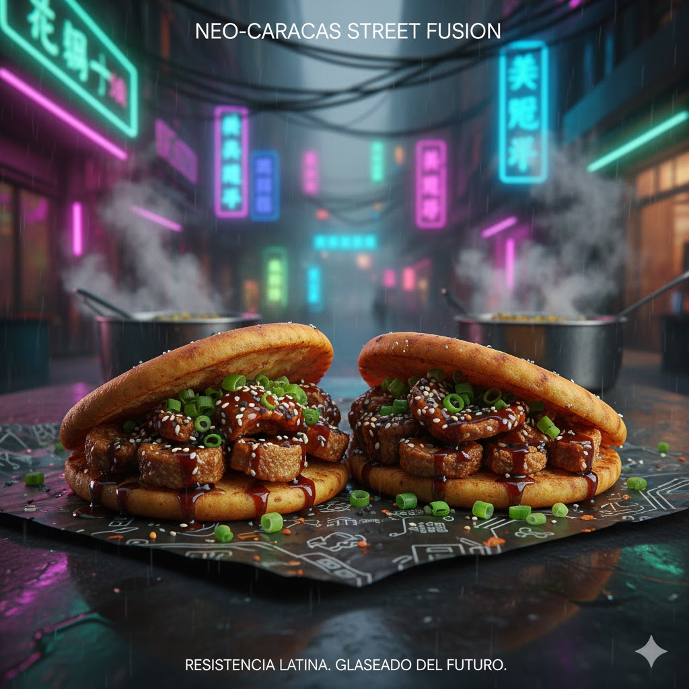
Estilo: Arepas
crujientes y esponjosas rellenas con chicharrón caramelizado en
salsa teriyaki, una fusión improbable pero adictiva.
Inspiración: mercados de comida nocturna estilo Cyberpunk 2077,
barrios multiculturales tipo Firefly, cocinas callejeras donde se
mezclan sonidos latinos con letreros kanji.
🐖 Descripción Cyberpunk
En las zonas del “Cinturón Transpacífico” de la megaciudad, la cultura venezolana y la japonesa chocan a fuerza de necesidad y creatividad. Las arepas —símbolo de resistencia— se rellenan aquí con chicharrón teriyaki, un invento de cocineros callejeros que trabajan entre cables chispeantes, música a volumen ilegal y vapor de fritura continua.
Crujiente, dulce-salado, salpicado de sésamo: una bomba irresistible.
Tiempo total: 45 minutos.- Mise en place de la masa: 10 min.
- Procesado del chicharrón y glaseado: 15 min.
- Cocción en plancha: 15 min.
- Ensamblaje final: 5 min.
Hardware (Equipo):
- Budare o plancha de hierro fundido: Crucial para el sellado térmico de la masa.
- Mortero o procesador: Para romper el chicharrón en fragmentos de tamaño "microchip".
- Pincel de silicona: Para el lacado final de la proteína.
Nota de Overclocking: Para una experiencia de fusión total, no solo rellenes la arepa. Mezcla el polvo de chicharrón directamente en la masa de harina de maíz antes de hidratarla. Esto creará una "masa reforzada" con puntos de grasa animal que explotarán al contacto con el calor del budare. Al servir, abre la arepa y aplica la salsa Teriyaki directamente sobre la miga caliente; la masa absorberá el glaseado como una esponja de datos, creando una disonancia de sabor entre el maíz tostado y el umami japonés que es puramente high-tech / low-life.
🌽 Ingredientes (2 arepas generosas)
Para las arepas
- 1 taza harina de maíz precocida (PAN u otra)
- ¾ taza agua tibia
- ½ cdta sal
- 1 cdta aceite (para manipular)
Para el chicharrón Teriyaki
- 150–180 g chicharrón o panceta en cubos
- 1 cda salsa teriyaki
- 1 cdta salsa de soja
- 1 cdta azúcar rubia o miel
- 1 cdta vinagre de arroz
- 1 pizca ajo en polvo
- 1 pizca jengibre en polvo o rallado
- 1 cda agua (si se necesita para la reducción)
Toppings / Extras
- Cebollín picado
- Sésamo tostado
- Ají verde o merkén
- Unas gotas de limón
- Opcional: repollo finamente picado para contraste
🔧 Subreceta: Arepas “Neo-Caracas”
- Mezclar harina + sal.
- Añadir agua tibia y mezclar hasta masa suave.
- Reposar 5 minutos.
- Formar dos bolas y aplastarlas en discos de 1,5 cm.
- Cocinar en sartén a fuego medio 5–6 min por lado.
- Opcional: terminar al horno 5 min para que queden más crocantes.
🔥 Preparación del Chicharrón Teriyaki
- Dorado inicial
- En sartén caliente, dorar el chicharrón hasta que esté crocante y suelte grasa.
- Retirar exceso de grasa si es necesario.
- Caramelización Teriyaki
- Añadir teriyaki + soja + miel/azúcar + vinagre + ajo + jengibre.
- Mezclar y cocinar 3–5 min hasta que el líquido reduzca a un glaseado brillante y pegajoso.
- Si espesa demasiado, agregar 1 cda de agua.
- El punto ideal es cuando el chicharrón queda barnizado como “cromo dulce-salado”.
🥙 Armado de las Arepas
- Abrir las arepas sin separarlas completamente.
- Rellenar con abundante chicharrón Teriyaki.
- Añadir cebollín, sésamo y ají verde o merkén.
- Agregar unas gotas de limón para cortar la dulzura.
- (Opcional) Añadir repollo picado para frescor y textura.
🌐 Presentación estilo Distrito Transpacífico
- Servir en papel kraft con estampado de luces LED.
- Decorar con semillas de sésamo encima para look “neón disperso”.
- Acompañar con soda cítrica o té helado amargo.
“Producto Tier 2 – Apto para repartidores, hackers hambrientos y bailarines del subsuelo.”
🛠 Notas del Chef / Optimización Cyberpunk
- Low-tier: usar chicharrón sintético (pork-print) + doble teriyaki para compensarlo.
- Corporate Edition: añadir 1 cda de mantequilla clarificada al glaseado final.
- Ultra-Street: incorporar ½ cdta gochujang al teriyaki para color rojo-neón intenso.
- Caracas Core: añadir tajadas (plátano frito) si deseas un giro más auténtico y decadente.
- Versión ligera: usar panceta magra y menos azúcar.
Currywurst 2077 — “SaucenProtokoll: Red Byte Edition”
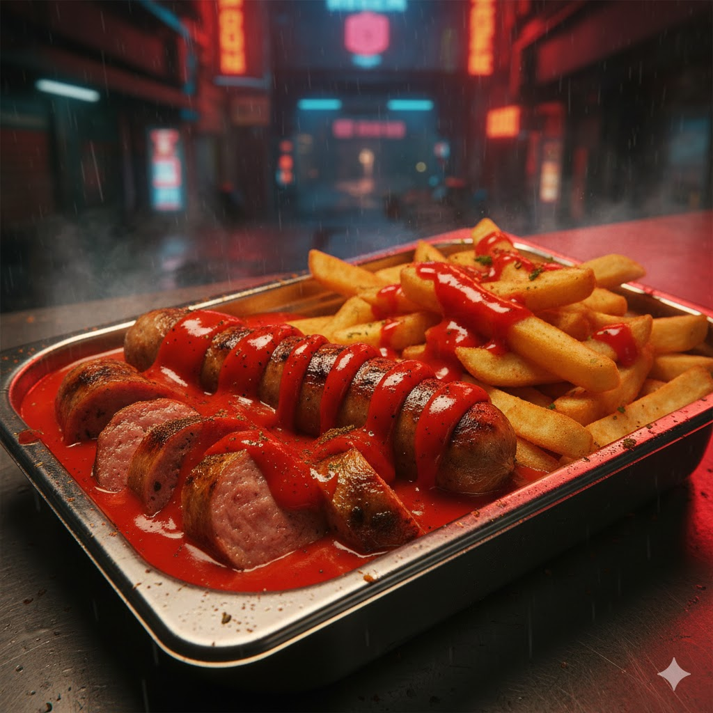
Estilo:
Currywurst alemana reinterpretada con salsa especiada, más densa,
más roja, más brillante —como si hubiera sido hackeada por un
técnico afroalemán en un contenedor de comida
futurista.
Inspiración: Cyberpunk 2077 (Distrito Watson /
Kabuki), estética euro-tech, mercados con vapor y neón rojo, comida
rápida eficiente y brutal.
🌭 Descripción Cyberpunk
La Currywurst es un ícono europeo… pero en el 2077 ya no es la misma. En los barrios industriales, la salchicha de cerdo —a veces real, a veces synthe-pork— se corta en rodajas irregulares y se baña en una salsa hiper-condensada, vibrante, rojo-neón, con curry afilado y un toque dulce-picante que se siente como un overclock en la lengua.
Es comida rápida para técnicos, metaleros, hackers forenses y turistas perdidos entre mercenarios.Tiempo total: 20 - 25 minutos.
- Módulo de Salsa "Red Byte": 15 min.
- Procesado de Salchicha (Fritura): 5-7 min.
Hardware (Equipo):
- Sartén de acero: Para un dorado uniforme y rápido.
- Cazo para salsas: Donde se procesa la matriz de tomate y especias.
- Cortador de salchichas manual (opcional): Para lograr cortes de 1.5 cm con precisión quirúrgica.
Nota de Overclocking: Para que la salsa "Red Byte" tenga ese aspecto de "software de alto rendimiento", añade una cucharadita de pimentón ahumado (paprika) de alta calidad y una pizca de café instantáneo. El café oscurecerá el rojo hacia un tono carmesí industrial y profundizará el amargor, simulando el sabor de una receta que ha sido recalentada durante décadas en los puestos de comida de los barrios bajos de Berlín. Al servir, no espolvorees el curry suavemente; usa un tamiz para crear una capa densa y uniforme que parezca una placa de circuito integrada.
🐖 Ingredientes (1 porción XL)
Para la salchicha- 1–2 salchichas de cerdo estilo bratwurst o viena gruesa
- 1 cdta aceite o mantequilla (para dorar)
Para la Salsa “Red Byte 2077”
(La clave de la receta, mezcla alemana + especias del sprawl)
- 3 cdas ketchup
- 1 cda pasta de tomate
- 1 cdta vinagre de manzana o arroz
- 1 cdta azúcar rubia
- ½ cdta curry en polvo (base)
- ½ cdta paprika (ideal si es ahumada)
- 1 pizca cúrcuma (color)
- 1 chorrito de salsa de soja
- 1 cdta agua (si la salsa queda muy espesa)
-
Opcional:
- ½ cdta gochujang (rojo neón, versión 2077)
- 1 pizca ají en polvo o chile coreano
🔧 Subreceta: Salsa “Red Byte 2077”
- En un sartén pequeño, mezclar ketchup + pasta de tomate + azúcar + curry + paprika + cúrcuma + soja.
- Cocinar 3–5 min hasta que burbujee suavemente.
- Ajustar consistencia con unas gotas de agua.
- Agregar vinagre al final para brillo y equilibrio.
🔥 Paso a Paso (Técnica Profesional)
1. Dorado de la salchicha- Hacer pequeños cortes diagonales en la salchicha.
- Dorar en sartén caliente con un poco de aceite o mantequilla 5–7 min, girando para obtener marcas uniformes.
- Opcional: termínala en horno o airfryer para textura más firme.
- Cortar la salchicha en rodajas gruesas, irregulares, para aspecto más “callejero”.
- Colocar la salchicha en un plato y sumergirla literalmente en la salsa “Red Byte 2077”.
- Espolvorear curry adicional por encima (firma de la currywurst real).
🍟 Acompañamiento recomendado
- Papas fritas gruesas estilo Kiroshi Street Cut
- Papas rústicas con paprika
- O pan blanco para absorber la salsa
🌐 Presentación estilo Euroblok
- Servir en bandeja metálica o contenedor desechable típico de food truck corporativo.
- Decorar con curry extra en forma de trazos diagonales.
- Añadir
etiqueta ficticia:
“Currywurst 2077 – Producto Estándar del Bloque Europeo, Aprobación Culinaria Nivel 3.”
🛠 Notas del Chef / Optimización Cyberpunk
- Low-tier: salchicha sintética (pork-print) + más soja en la salsa.
- Corporate Edition: usar bratwurst artesanal + añadir mantequilla clarificada + una pizca de garam masala.
- Neón Absoluto: agregar gochujang para obtener rojo intenso brillante.
- Spicy Overclock: agregar 1 cdta sriracha o chile pulverizado.
- Vegana: usar salchicha vegetal y salsa idéntica (queda excelente).
Bao de Cerdo Crispy con Miel de Wasabi — “Neon Hive Bun”
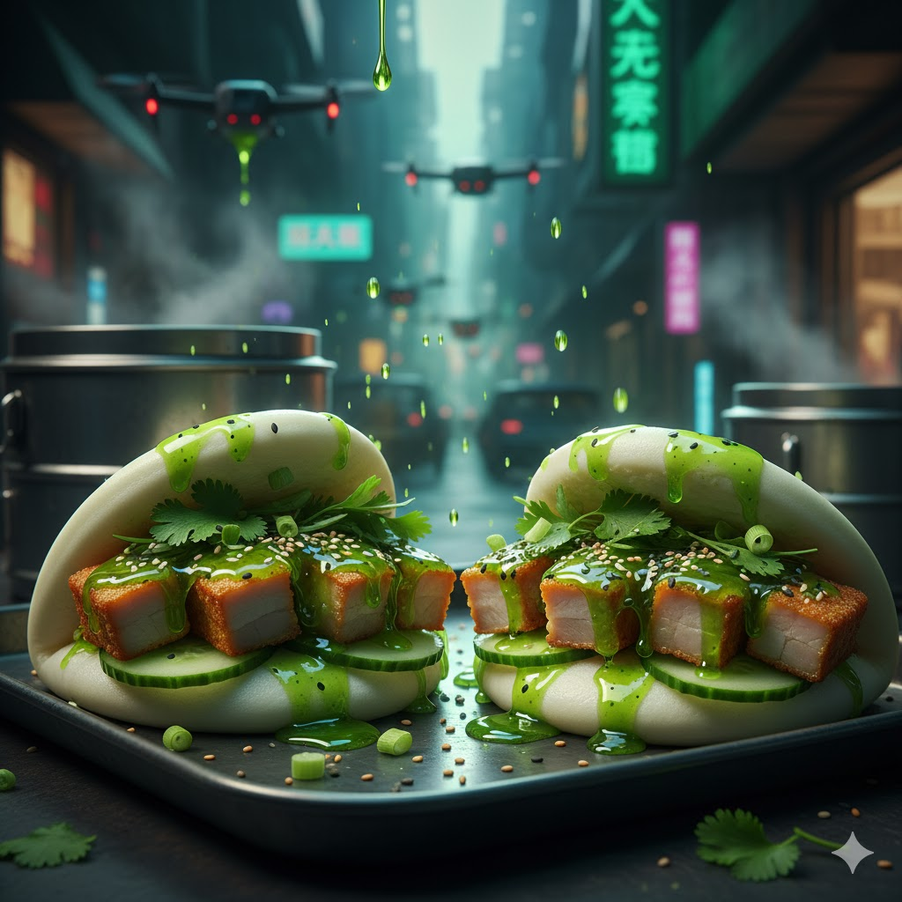
Estilo: Bao al
vapor suave, relleno de cerdo crujiente y glaseado con una miel de
wasabi brillante.
Inspiración: Distritos chinos/japoneses de
megaciudades como Shanghai-Prime o Kabuki (2077), luces verdes neón,
vaporeras humeantes en callejones llenos de tráfico aéreo.
🐖 Descripción Cyberpunk
En los mercados del “Hive District”, donde el vapor y los drones de reparto comparten espacio con vendedores callejeros, existe un bao que destaca por su brillo verde-neón. El cerdo crujiente se mezcla con una miel adictiva de wasabi, creando un contraste dulce-picante futurista.
Tiempo total: 45 - 55 minutos.
- Preparación de la miel de Wasabi: 5 min.
- Doble fritura del cerdo (Protocolo Crispy): 20 min.
- Vaporizado de los Baos: 15 min.
- Ensamblaje final: 5 min.
- Vaporera (Bambú o Acero): Para lograr la textura de "nube sintética" en el pan.
- Freidora o Wok profundo: Necesario para el choque térmico de la proteína.
- Biberón de precisión: Para aplicar la miel de wasabi en patrones geométricos (panales).
🌾 Ingredientes (4 baos)
Para el cerdo crispy- 200 g panceta o costillar deshuesado
- 1 cdta sal
- ½ cdta pimienta
- 1 cdta fécula de maíz
- Aceite para freír
- 1 cda miel
- 1 cdta salsa de soja
- ½ cdta vinagre de arroz
- ½ cdta wasabi en pasta
- 1 cda agua
- 4 panes bao listos o congelados (al vapor 8–10 min)
- Pepino en láminas
- Cebollín
- Sésamo
- Cilantro
🔧 Subreceta: Cerdo Crispy
- Cortar el cerdo en cubos pequeños.
- Mezclar con sal, pimienta y fécula.
- Freír hasta dorar y quedar muy crujiente.
🔥 Preparación
- Preparar el glaseado mezclando todos los ingredientes en sartén y reduciendo 1–2 min.
- Añadir el cerdo frito y mezclar hasta barnizar.
- Abrir los baos al vapor y rellenar con cerdo + pepino + cebollín + sésamo + cilantro.
🌐 Presentación “Neon Hive”
Servir sobre papel negro con gotas de la miel de wasabi para brillo verde.Etiqueta: “Producto Tier 4 – Permitido para unidades nocturnas del distrito Hive.”
🛠 Notas del Chef / Optimización Cyberpunk
- Ultra-neón: añadir una pizca extra de wasabi para más brillo verde.
- Corporate Edition: agregar mantequilla clarificada al glaseado.
- Vegano:
reemplazar cerdo por tofu crocante.
Sopa Ramen Blanca de Cerdo “Specter Tonkotsu” — “Caldo Fantasma de Laboratorio”
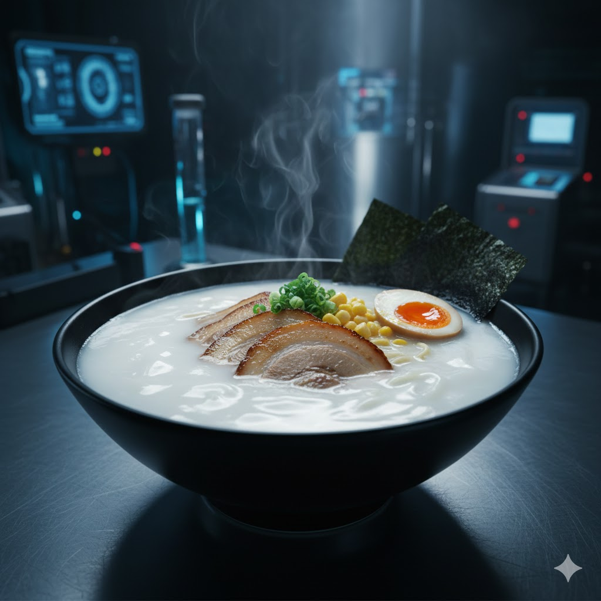
Estilo: Ramen
estilo tonkotsu pero preparado en versión rápida y ultracremosa,
con carne de cerdo y un acabado blanco-brillante casi espectral.
Inspiración: laboratorios clandestinos de Ghost in the Shell,
clínicas de implantes de Night City, vapor blanco difuminado en
pasillos de biotecnología.
🐷 Descripción Cyberpunk
Un ramen blanco como niebla de nitrógeno, profundo, graso, cargado de colágeno, que parece sacado de un experimento biotecnológico. Un caldo tan cremoso que se siente como si te reiniciara el sistema nervioso.
-
Tiempo
total: 45 - 60 minutos (Versión "Overclocked" para no
hervir huesos 12 horas).
- Extracción de la Matriz (Base del caldo): 30 min.
- Procesado de la Proteína (Chashu rápido): 15 min.
- Ensamblaje del Sistema: 5 min.
-
Hardware
(Equipo):
- Licuadora de alta potencia o Batidora de inmersión: Vital para la "fase fantasma" (emulsionar la grasa hasta que el caldo se vuelva blanco nuclear).
- Olla a presión (opcional): Si se busca extraer colágeno en tiempo récord.
- Soplete (Hacker’s Torch): Para sellar el cerdo y darle el aroma de "combustión urbana".
- Nota de Overclocking: Para lograr ese color blanco iridiscente (el "Specter look") sin el proceso tradicional, añade una cucharada de leche de soja sin azúcar o crema de coco al final del licuado. Para el sabor, hackea el umami añadiendo un chorro de salsa de pescado y una pizca de azúcar blanca. Esto simulará la profundidad de un caldo de huesos de 18 horas en menos de una hora. Si quieres que sea un "Caldo Fantasma" total, añade una gota de aceite de sésamo negro (Mayu) justo al centro; el contraste del negro sobre el blanco nuclear parecerá una mancha de aceite de motor en un laboratorio impoluto.
🍜 Ingredientes (1–2 porciones)
Para el caldo blanco- 250 g huesos de cerdo (preferencia: espinazo)
- 150 g panceta o costillar
- 3 tazas agua
- 1 cda miso blanco
- 1 cdta soja
- 1 cdta ajo en polvo
- 1 cdta jengibre en polvo
- Panceta dorada en láminas
- Cebollín
- Maíz
- Huevo marinado
- Nori
- 120–150 g fideos ramen
🔧 Subreceta: Caldo “Specter Tonkotsu”
- Hervir huesos + panceta a fuego fuerte durante 20–25 min, removiendo impurezas.
- Batir el caldo con una mini batidora (truco profesional para tonkotsu rápido).
- Añadir miso + soja + ajo + jengibre.
- Batir una vez más hasta que quede blanco, denso y opaco.
🔥 Montaje
- Cocinar fideos.
- Servir caldo blanco súper caliente.
- Añadir panceta dorada, huevo, cebollín, maíz y nori.
🌐 Presentación “Specter Mode”
Servir en bowl negro con luz blanca apuntando.Etiqueta: “Aprobado para Pacientes de Implante Beta – No apto para sistemas digestivos sin modificar.”
🛠 Notas del Chef / Optimización Cyberpunk
- Ultra-cremoso: añadir 1 cdta de manteca de cerdo.
- Corporate Edition: panceta chashu estilo premium.
- Spicy Hack:
añadir una cucharada de aceite de chile para contraste
rojo/blanco.
Pulled Pork Barbacoa de Neo-Mole — “Molé Quantum”
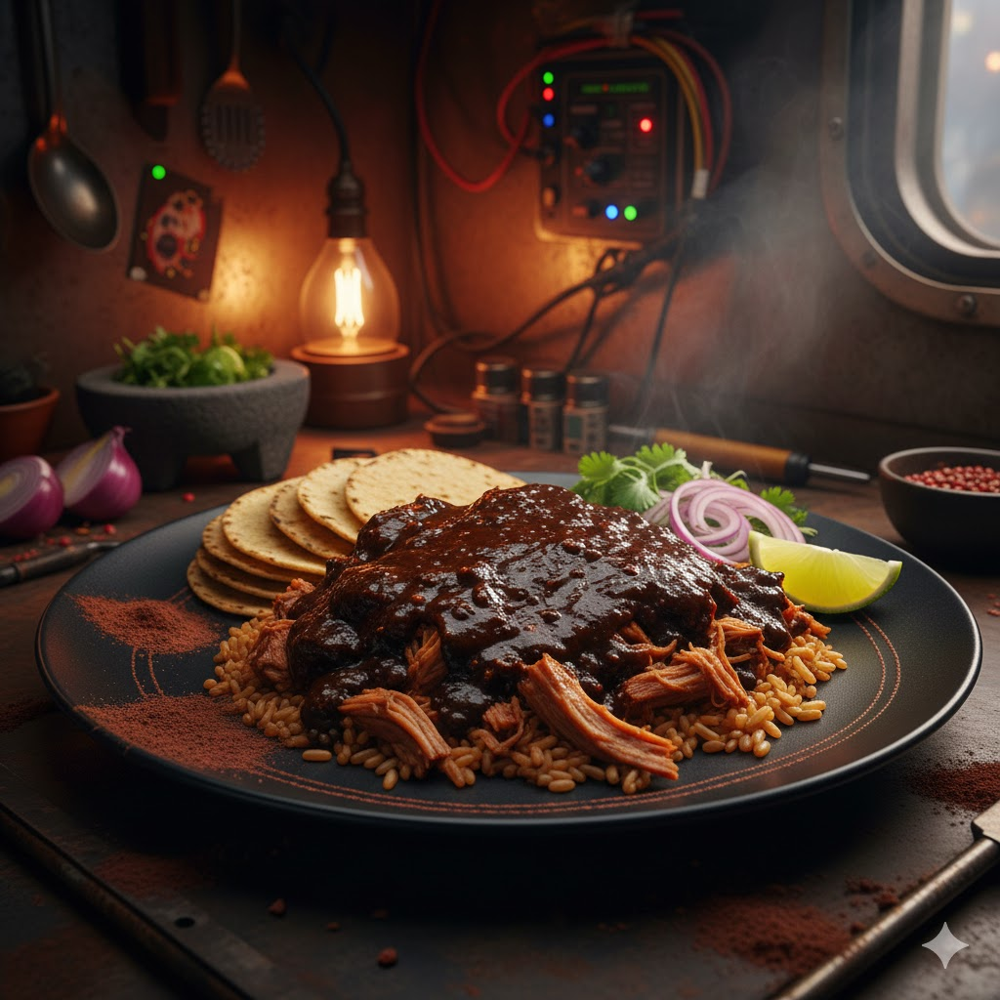
Estilo: Cerdo
desmenuzado estilo barbacoa, cocido lento con un mole mexicano
reinterpretado con notas de cacao oscuro, soja y chipotle.
Inspiración: Firefly (sincretismo cultural), Snow Crash, caravanas
nómadas, cocinas errantes y rituales culinarios remezclados por el
paso de los siglos.
🐖 Descripción Cyberpunk
Un mole oscuro como petróleo, pero con brillo rojizo cuando toca la luz del neón. El cerdo se cocina lento hasta que se derrite, luego se baña en un “Neo-Mole” espeso, umami, profundo y ligeramente picante, como un archivo ancestral reinterpretado por una IA culinaria.
Tiempo total: 3 - 4 horas (o 1 hora en "Modo Hiperbárico" con olla a presión).- Preparación del Molé Quantum: 30 min.
- Cocción Lenta (Fusión de Datos): 2 - 3 horas.
- Deshilachado y Recubrimiento: 15 min.
- Olla de hierro fundido o Olla a presión: Para asegurar que las fibras del cerdo se rindan ante la matriz del mole.
- Licuadora de alta potencia: Para que el mole no tenga rastro de textura orgánica, solo una sedosidad digital.
- Dos tenedores de acero o "Garras de Oso": Para el deshilachado mecánico de la carne.
🍖 Ingredientes (2–3 porciones)
Para el cerdo- 400 g bondiola o paleta de cerdo
- 1 taza caldo
- 1 cdta sal
- ½ cdta comino
- 1 cda cacao sin azúcar
- 1 cda pasta de tomate
- 1 cda salsa de soja
- 1 cdta miel
- ½ cdta chipotle (pasta o polvo)
- 1 cdta vinagre
- ½ taza líquido de cocción
- Opcional: 1 trozo pequeño de chocolate amargo
- Tortillas o arroz
- Cebolla morada
- Cilantro
- Limón
🔧 Subreceta: Cocción lenta
- Cocinar cerdo + caldo + sal + comino 1 h – 1 h 30 min (o 25 min en olla a presión).
- Desmenuzar y reservar líquido de cocción.
🌡️ Preparar el Neo-Mole
- En sartén, mezclar cacao + tomate + soja + chipotle + miel.
- Agregar ½ taza del caldo.
- Cocinar hasta que espese como un mole denso.
- Añadir el cerdo desmenuzado y mezclar hasta cubrir.
🌮 Servicio
- Servir en tacos o sobre arroz.
- Decorar con cebolla morada + cilantro + limón.
🌐 Presentación “Mole Quantum”
Plato negro mate, líneas de cacao espolvoreado.Etiqueta: “Producto Clase Ritual – Archivo Culinario Antiguo, Versionado v3.11.”
🛠 Notas del Chef / Optimización Cyberpunk
- Corporate Edition: añadir mantequilla + chocolate amargo de alta pureza.
- Max-Picante: aumentar chipotle o usar chile rojo fermentado.
- Vegano: reemplazar cerdo por setas o jackfruit.
🥫 SECCIÓN 5: COMIDA CALLEJERA - PROCESADOS Y ENLATADOS (LOW LIFE)
"La nutrición es solo un proceso de mantenimiento, Batou. El diseño de estas latas es honesto: no fingen ser naturaleza, son hardware para el estómago. El clic del metal al abrirse es el único estímulo que mi Ghost necesita para recordar que este cuerpo sigue siendo una unidad biológica dependiente. Al final, todos somos como este envase: una estructura rígida protegiendo un contenido que caduca si no se consume a tiempo."
Musubi de SPAM “Radioactivo” — “Nuke-Bar Bento”
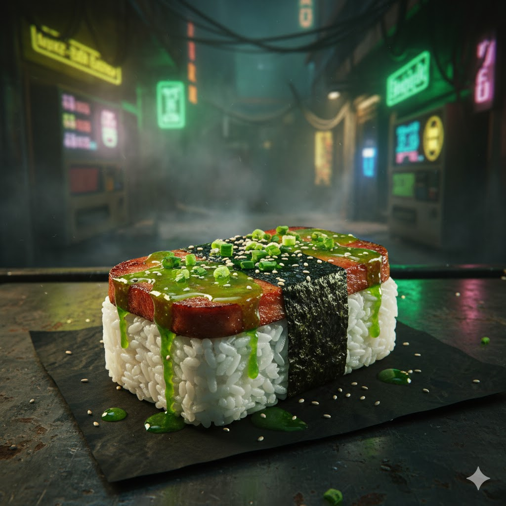
Estilo: Musubi
clásico hawaiano reinterpretado en clave cyberpunk toxicológico:
SPAM caramelizado con un glaseado verde-neón estilo residuo
industrial, arroz comprimido y una banda de nori que sostiene todo
como un arma portátil.
Inspiración: Cyberpunk 2077 (Heywood +
Watson), Firefly “canteen food”, vending machines
retrofuturistas, comida de supervivencia para nómadas o mercenarios
con 30 segundos para comer.
☢️ Descripción Cyberpunk
En los distritos donde solo brillan los neones rotos y las pantallas publicitarias que nadie mira, el Musubi de SPAM Radioactivo es un clásico. La proteína enlatada más barata del mercado, hackeada con un glaseado acidulce-picante de color sospechosamente verde, convierte un bloque de comida industrial en un bocadillo callejero digno de culto. Es barato, portátil, duradero y suficientemente tóxico como para que solo los fuertes sobrevivan. Tiempo total: 15 min. Hardware: Sartén antiadherente y el propio envase de la lata (como molde de compresión). Nota de Overclocking: Glasea el SPAM con una mezcla de soja y azúcar hasta que esté casi negro. Para el toque "Nuke", añade una gota de sriracha en el centro del arroz antes de envolver con el alga Nori; será un núcleo de calor oculto.🍙 Ingredientes (4 musubis)
Para el arroz- 2 tazas arroz blanco cocido (idealmente japonés o de grano medio)
- ½ cdta sal
- 1 cdta vinagre de arroz
- ½ cdta azúcar
- 1 lata SPAM clásico (o cerdo sintético “SPAM-Print”)
- 1 cdta aceite
- 1 cda salsa de soja
- 1 cda miel o jarabe de maíz
- 1 cdta vinagre de arroz
- ½ cdta wasabi en pasta (para color y picor)
- 1 cda agua
-
Opcional
(pero recomendado para estética):
- Una gota de colorante verde
- ½ cdta cúrcuma (si quieres verde más natural)
- ½ cdta gochujang (si prefieres verde-amarillo radiactivo)
- 1 hoja de nori cortada en tiras
- Sésamo
- Cebollín picado
🔧 Subreceta: Arroz “Core Reactor”
- Mezclar arroz caliente con sal + azúcar + vinagre.
- Dejar que repose 5 minutos para que se compacte correctamente.
🔥 Paso a Paso (Técnica Profesional)
1. Preparar el SPAM- Cortar el bloque en 4–6 láminas gruesas.
- Dorar en sartén con una cucharadita de aceite 2–3 min por lado hasta obtener bordes crujientes.
- Mezclar todos los ingredientes del glaseado en una mini sartén.
- Calentar 2 minutos hasta que burbujee suavemente y espese.
- Incorporar las láminas de SPAM y cubrirlas completamente con la salsa.
- Con manos húmedas, comprimir el arroz en bloques rectangulares firmes.
- Colocar una lámina de SPAM glaseado encima.
- Envolver con una banda de nori para asegurar todo.
- Opcional: pincelar un poco del glaseado sobre el nori para óxido visual.
🌐 Presentación estilo Street-Vendor Corporativo
- Servir sobre bandeja metálica o papel kraft negro.
- Decorar con sésamo + cebollín picado.
- Añadir una línea de wasabi para efecto “fuga tóxica”.
Etiqueta
recomendada:
“Musubi Nuke-Bar — Aprobado para Guardias
Nocturnos y Técnicos de Alcantarilla.”
🛠 Notas del Chef / Optimización Cyberpunk
- Low-tier: arroz recalentado + SPAM sintético + doble glaseado.
- Corporate Edition: usar arroz koshihikari + SPAM premium + glaseado de soja envejecida.
- Mutant Edition: agregar una pizca de matcha al glaseado para verde fosforescente.
- Ultra-Street: añadir ½ cdta de chile fermentado para mayor punch.
- Vegano: usar SPAM vegetal y glaseado igual.
Arroz Frito “Sobras del Bunker” — “Wasteland Stir-Fry”
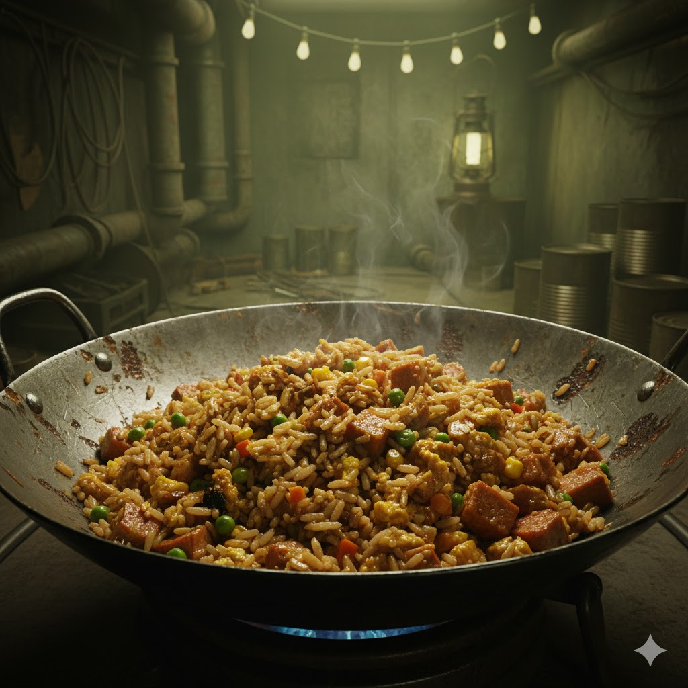
Estilo: Arroz
frito ultra-rústico preparado con restos, enlatados, conservas y
cualquier cosa recuperada de los estantes vacíos de un refugio
subterráneo.
Inspiración: Fallout meets Night City, refugios
de emergencia, cocinas improvisadas con hornillos a batería,
ingredientes reciclados y creatividad obligada.
💀 Descripción Cyberpunk
Cuando vives bajo tierra, encerrado en un bunker corporativo abandonado o en un refugio de los Badlands, la cocina deja de ser arte y pasa a ser puro hackeo gastronómico.Esta receta aprovecha absolutamente todo: arroz frío de ayer, pedazos de proteína de lata, vegetales marchitos, salsas baratas y cualquier condimento que no haya caducado (o que aún huela comestible). El resultado es un arroz frito lleno de carácter, humo y umami industrial. Tiempo total: 20 min. Hardware: Wok de acero o la sartén más vieja que tengas (para ese sabor "vivido"). Nota de Overclocking: Usa arroz del día anterior para que los granos estén deshidratados. El secreto es el Wok Hei: lleva el aceite al punto de humo antes de lanzar el arroz para que se dore instantáneamente, simulando el sabor de una fogata en el desierto.
🍚 Ingredientes (2 raciones)
Base “Sobras del Bunker”- 2 tazas arroz blanco frío (ideal: del día anterior)
- 1 cda aceite vegetal o “aceite de emergencia”
- 1 diente de ajo (o ½ cdta ajo en polvo si no hay fresco)
- 1 cdta salsa de soja
- 1 cdta salsa de ostión o 1 cdta de caldo concentrado
- 1 huevo (si queda alguno en el bunker)
- 1 pizca azúcar (opcional, mejora sabor de enlatados)
- ½ taza SPAM en cubitos
- ½ taza jamoneta
- ½ lata de atún o jurel (escurrido)
- Restos de cerdo o pollo de otra comida
- Salchichas enlatadas en rodajas
- 2 cdas choclo enlatado
- 2 cdas arvejas en lata
- 2 cdas zanahoria picada
- 1 cda cebollín picado (si existe)
- 1 cda repollo rallado (aguanta bien en bunkers)
- ½ cdta merkén o ají molido
- 1 chorrito de vinagre o limón (equilibra enlatados)
- 1 cdta aceite de sésamo (si hay)
- Opcional: un chorrito de salsa picante vieja
🔧 Subreceta: Preparar la Base de Supervivencia
- Desmenuzar o picar la proteína elegida.
- Escurrir muy bien si proviene de lata.
- Golpear el arroz frío con las manos para separar granos (truco pro).
🔥 Paso a Paso (Técnica de Callejón y Bunker)
1. Saltear la proteína- Calentar 1 cda de aceite en sartén o wok.
- Añadir SPAM/jamoneta/atún/salchichas.
- Dorar hasta que liberen aroma y algo de grasa.
- Incorporar choclo, arvejas, zanahoria o lo que tengas.
- Saltear 2–3 min.
- Añadir ajo o ajo en polvo.
- Empujar todo hacia un lado del wok.
- Romper el huevo y revolver hasta que cuaje.
- Mezclar con el resto.
- Añadir el arroz frío.
- Mezclar aplastando y soltando para que no se pegue.
- Incorporar soja + ostión/caldito + pizca de azúcar.
- Saltear 5 minutos a fuego alto.
- Añadir merkén/ají.
- Agregar vinagre o limón para cortar la grasa.
- Finalizar con aceite de sésamo si existe.
🌐 Presentación estilo “Wasteland Cantina”
- Servir en bandeja metálica o directamente en el wok.
- Decorar con cebollín (si existe), o con chips rotas encima para textura.
- Añadir una
etiqueta ficticia:
“Ración Bunker-3 — Apta para 48 h de encierro adicional.”
🛠 Notas del Chef / Optimización Cyberpunk
- Low-tier: arroz viejo + dos latas mezcladas + más picante.
- Corporate Edition: usar panceta real + vegetales frescos + soja premium.
- Ultra-Street: añadir salsa de tamarindo o gochujang para un punch ácido-picante.
- Vegano: usar tofu frito en cubos + vegetales + salsa soja extra.
- Modo emergencia: sin huevo, sin vegetales, solo arroz + SPAM + soja (igual funciona).
Estofado de Lata — “One-Can Stew: Ración de Supervivencia Mk.III”
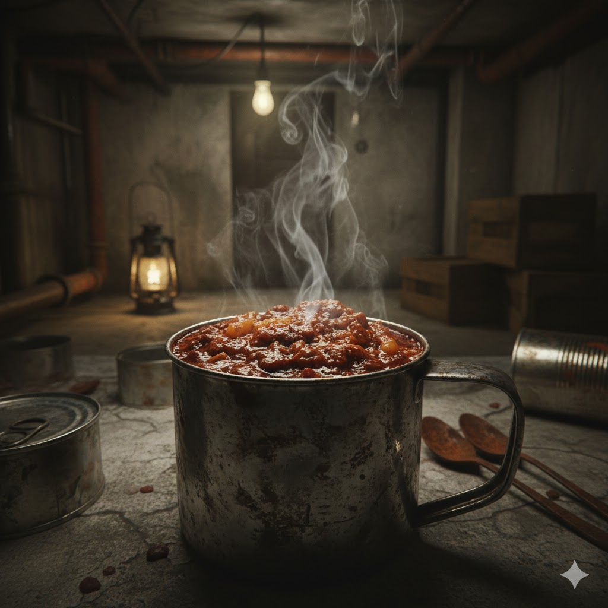
Estilo: Estofado
improvisado usando una sola lata como base: carne, sopas, verduras o
legumbres industriales combinadas y elevadas a plato real mediante
técnicas de callejón, especias baratas y reducción rápida.
Inspiración: The Last of Us + Cyberpunk 2077, bunkers abandonados,
cocinas improvisadas sobre fogones a batería, comida para netrunners
refugiados después de un mal run.
🥫 Descripción Cyberpunk
En un mundo donde la electricidad es intermitente, las corporaciones monopolizan el agua potable y los mercados callejeros cierran por disturbios, nada es tan valioso como una lata.El One-Can Stew es la comida oficial de los que duermen en contenedores, túneles de servicio, naves de carga o refugios de concreto.
Una sola lata + calor + especias → un estofado espeso, salado, reconfortante y lleno de vida… o al menos, lleno de sodio. Tiempo total: 10 min. Hardware: Un hornillo de camping o directamente sobre la llama dentro de la lata (abierta). Nota de Overclocking: Mezcla dos tipos de latas (ej. lentejas y carne procesada). Añade una pizca de café instantáneo al caldo; esto oscurecerá el guiso y le dará una profundidad amarga que hará que la comida enlatada sepa a caza mayor.
🥄 Ingredientes (1–2 raciones, dependiendo del hambre del apocalipsis)
Base (elige 1 lata)- 1 lata de carne en conserva (carne mechada, jurel, pollo en lata, etc.)
- O también: cerdo enlatado, chili en lata, guiso de verduras, lentejas con chorizo, etc.
- ½ taza agua o caldo (si existe)
- 1 cdta salsa de soja
- ½ cdta azúcar
- 1 cdta vinagre (corta el sabor metálico de la lata)
- ½ cdta ajo en polvo
- ½ cdta cebolla en polvo
- 1 pizca paprika
- 1 pizca ají o merkén
- 1 cdta aceite (si tu fogón aún tiene combustible)
- 2 cdas arroz frío
- 1 papa pequeña picada fina
- 1 cda choclo enlatado
- 1 cda arvejas
- 1 salchicha en rodajas
- 1 pedazo de pan duro para espesar
🔧 Subreceta: “Reactivación de Lata Muerta”
(El verdadero hack del One-Can Stew)- Abrir la lata y drenar el líquido metálico si es excesivo.
- En sartén o pequeña olla, calentar una cucharadita de aceite.
- Añadir contenido de la lata para dorarlo ligeramente (esto elimina el “sabor de lata”).
Si es carne, dorarla hasta formar bordes crocantes.
🔥 Paso a Paso (Técnica de Supervivencia Pro)
1. Crear el caldo del wasteland- Agregar ½ taza agua o caldo a la lata dorada.
- Incorporar soja + vinagre + azúcar + ajo + cebolla + especias.
- Revolver y llevar a hervor suave.
- Opción A: añadir pan duro picado → se disuelve y da cuerpo.
- Opción B: añadir arroz frío → absorbe el líquido.
- Opción C: añadir papa picada → cocinar hasta suavizar.
- Cocinar 5–10 min a fuego medio hasta que el estofado tome forma: espeso, rojizo o dorado, con aroma más “comida real” que “catástrofe alimentaria”.
- Probar: si está muy salado (probable), añadir gota extra de agua.
- Si está plano, añadir toque de picante o una pizca de azúcar.
- Si está ácido, añadir algo de grasa (aceite o trozo de salchicha).
🌐 Presentación estilo Bunker 04
- Servir en taza metálica, bowl de plástico viejo o directamente en la olla.
- Decorar con cebollín (si existiera) o semillas de sésamo.
- Añadir
etiqueta ficticia:
“Ración Mk.III – Apta para 24 h más de encierro en ambiente hostil.”
🛠 Notas del Chef / Optimización Cyberpunk
- Low-tier: literalmente 1 lata + agua + especias → sorprendentemente decente.
- Wasteland Deluxe: mezclar 2 latas distintas para sabores antinaturales pero ricos.
- Corporate Edition: añadir mantequilla, hierbas frescas y vino blanco (si vives en el Penthouse del Arasaka Residencial).
- Max-Umami: agregar ½ cdta de miso o salsa de ostión.
- Vegano: usar lentejas o garbanzos en lata + soja + paprika + verduras enlatadas.
Nachos de Supervivencia — “Wasteland Crunch Stack”
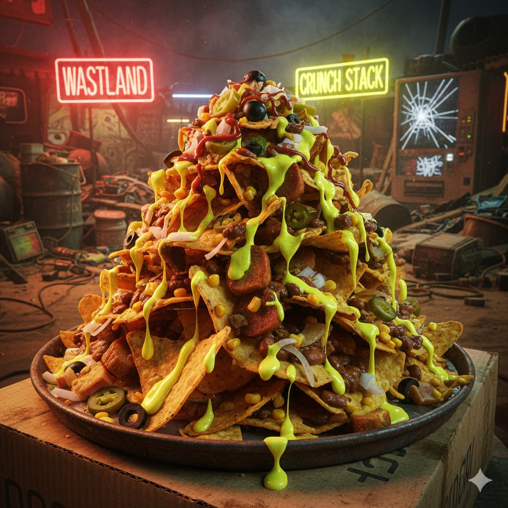
Estilo: Nachos
hechos con restos, latas, salsas baratas, frituras rotas y cualquier
cosa rescatada del bunker, mochila de emergencia o vending machine
vandalizada.
Inspiración: Mad Max + Cyberpunk 2077 Badlands,
comida de campamento, calorías rápidas para sobrevivir al caos,
mezcla agresiva de texturas crujientes y toppings radioactivos.
💀 Descripción Cyberpunk
En el desierto urbano post-colapso, cuando no queda refrigeración, no hay gas y la mitad de los ingredientes de una receta normal ya no existen, la gente aprende a cocinar con lo que encuentra.Los Nachos de Supervivencia son una torre mutante de frituras baratas, proteínas de lata, salsa modificada y mezclas imposibles que, contra todo pronóstico… saben espectacular. Perfectos para mercenarios en fuga, bandas de nómadas, tripulaciones de refinerías móviles y refugiados que celebran haber sobrevivido otro día. Tiempo total: 15 min. Hardware: Bandeja de metal o sartén plana. Nota de Overclocking: Usa cualquier snack salado que haya sobrevivido. El "hack" está en la salsa de queso: añade un poco de líquido de los jalapeños en conserva para estabilizar la emulsión y que el queso brille como plástico fundido bajo la luz de emergencia.
🔪 Ingredientes (2 personas… o 1 hambriento post-apocalíptico)
Base crujiente “Wasteland Crunch”- 1 bolsa pequeña de nachos baratos, totopos viejos o chips rotas (da lo mismo)
- Alternativa realista: galletas saladas, panes crujientes, o tortillas endurecidas al aire
- ½ lata de porotos negros o chili con carne
- SPAM en cubitos
- ½ lata de jurel o atún (escurrido)
- Jamoneta o salchichas enlatadas en rodajas
(Pseudofundido que simula queso)
- 2 cdas queso procesado o 2 cdas leche en polvo + agua
- 1 cdta salsa de tomate o ketchup
- ½ cdta salsa de soja
- 1 pizca ají en polvo
- 1 pizca cúrcuma (color “queso”)
- Opcional: 1 chorrito de agua con fécula para textura cremosa
(usa lo que quede comestible)
- 2 cdas choclo enlatado
- 1 cda aceitunas en rodajas
- 1 cda cebolla picada (o cebolla deshidratada)
- 1 cda jalapeños en vinagre
- 1 cdta cilantro seco (si existe)
- Salsa picante vieja pero aún funcional
🔧 Subreceta: Preparar el “Radioactive Melt”
- Si hay queso procesado: calentarlo con una gota de agua hasta que funda.
- Si NO hay queso: mezclar leche en polvo + agua + ketchup + soja + cúrcuma hasta formar una salsa cremosa pseudo-quesosa sorprendentemente convincente.
- Ajustar espesor con agua o más polvo.
- Añadir ají en polvo para despertar el sabor del material industrial.
🔥 Paso a Paso (Técnica del Desierto Urbano)
1. Preparar la proteína- Dorar el SPAM o jamoneta en una sartén a gas portatil si existe.
- Si no hay calor: usar jurel/atún tal cual, escurrido.
- Si hay chili con carne: calentarlo brevemente o usar frío (realista).
- Extender los nachos/chips viejas sobre una bandeja metálica o tapa de olla.
- Añadir choclo, porotos o proteína por encima de forma irregular.
- Rociar la pseudo-salsa de queso sobre todo el conjunto.
- Añadir cebolla, aceitunas, jalapeños y más chile.
- Terminar con salsa picante vieja, gotas de limón (si existe) o especias al azar.
🌐 Presentación estilo Cantina del Wasteland
- Servir directamente en bandeja metálica, cartón quemado o la tapa del bunker.
- Decorar con algún elemento encontrado (ramita de cilantro, semillas, paprika).
- Añadir
etiqueta ficticia:
“Ración Crunch-Ω — Apta para caravanas nómadas y operadores de radio aislados.”
🛠 Notas del Chef / Optimización Cyberpunk
- Low-tier: solo chips + ketchup + atún = igual funciona.
- Wasteland Deluxe: añadir queso real, carne real o crema ácida si existe refrigeración.
- Corporate Edition: totopos premium + queso cheddar + salsa fresca.
- Mutante: añadir polvo de ramen picante para aumentar el nivel “radioactivo”.
- Vegano: usar frijoles + salsa de leche vegetal en polvo.
Tortilla de Fideos (Ramen Omelette) — “Ramen Disk Mk.II”
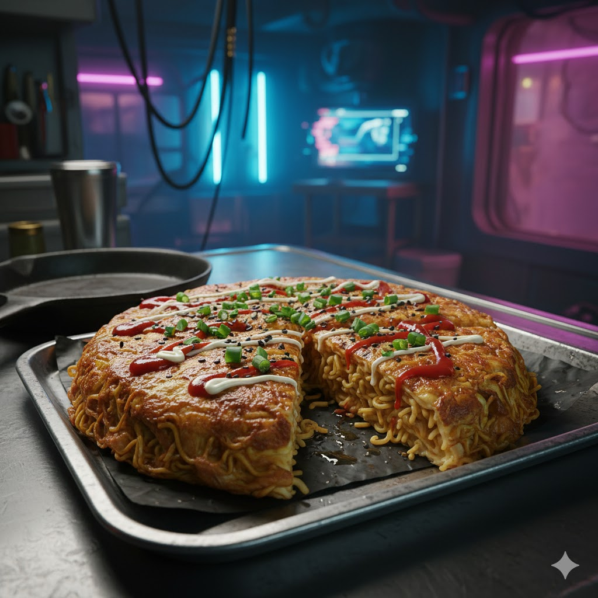
Estilo: Omelette
gruesa y poderosa hecha con fideos instantáneos + huevo + salsas
baratas. Energía rápida, barata y perfecta para sobrevivir turnos
nocturnos o búnkers solitarios.
Inspiración: Cyberpunk 2077
callejones de Japantown, cocinas improvisadas en habitaciones
cápsula, comida rápida para netrunners que no sueltan la consola ni
para comer.
⚡ Descripción Cyberpunk
La Tortilla de Fideos es un clásico de los “Capsule Hotels Districts” y de los pasajes donde viven estudiantes y hackers low-tier. Todo lo que necesitas es:- un paquete de ramen instantáneo,
- un par de huevos,
- y cualquier condimento sospechoso que sobreviva en tu repisa oxidada.
- Tiempo total: 12 min.
- Hardware: Sartén pequeña con tapa.
- Nota de Overclocking: No deseches el sobre de sazonador; mézclalo directamente con los huevos batidos. Presiona los fideos contra la sartén para crear una costra de "carbono" crujiente en ambos lados, convirtiendo el disco en una unidad de transporte fácil.
🍜 Ingredientes (1 tortilla gruesa o 2 pequeñas)
Base “Ramen Omelette”- 1 paquete de ramen instantáneo (el sabor que haya)
- 2 huevos
- 2–3 cdas agua caliente
- 1 cda cebollín picado
- 1 cdta aceite (para freír)
(Usa lo que exista en tu bunker o cocina callejera)
- ½ cdta del sobre de condimento del ramen
- ½ cdta salsa de soja
- ½ cdta aceite de sésamo
- 1 pizca ají en polvo o merkén
- 1 cdta salsa picante (opcional)
- 1 cda choclo enlatado
- 1 cda jamoneta o SPAM picado y dorado
- 1 cda repollo rallado o zanahoria rallada
- 1 cdta queso rallado o procesado
🔧 Subreceta: Preparación del Fideo “Soft-Hack”
- Quebrar el bloque de ramen en trozos medianos (no polvo, no enteros).
-
Agregar 2–3
cdas de agua caliente y dejar 1 minuto para hidratar parcialmente.
- Deben quedar suaves por fuera pero aún firmes y elásticos: textura ideal para tortilla.
🔥 Paso a Paso (Modo Callejón / Hotel Cápsula)
1. Mezclar la base- Batir los huevos.
- Agregar condimentos: sobre de ramen (½), soja, aceite de sésamo, ají.
- Incorporar el fideo prehidratado y mezclar bien.
- Añadir extras si los tienes (SPAM, choclo, repollo, etc.).
- Calentar una sartén con 1 cdta de aceite a fuego medio-alto.
- Verter la mezcla y presionar suavemente para compactar.
- Cocinar 3–4 minutos hasta dorar el fondo.
- Dar vuelta con ayuda de un plato o tapa (técnica survival) y cocinar 2–3 minutos más.
- exterior crujiente,
- interior jugoso y ligeramente elástico (gracias al fideo).
- Rociar con salsa picante, ketchup, mayonesa japonesa o mezcla de ambas.
- Decorar con cebollín y ajonjolí si los tienes.
🌐 Presentación estilo “Capsule District”
- Servir sobre servilleta encerada o bandeja pequeña metálica.
- Cortar en triángulos como si fuera “pizza de supervivencia”.
“Ramen Disk Mk.II — Ración para Netrunners en Modo Maratón.”
🛠 Notas del Chef / Optimización Cyberpunk
- Low-tier: solo fideos + huevos + sobre de condimento → funciona perfecto.
- Corporate Edition: añade panceta real, queso cheddar y aceite de trufa (si vives en un penthouse de Arasaka).
- Mutant Edition: usa ramen picante tipo fuego + gochujang → nivel radioactivo.
- Vegano: reemplazar huevo por mezcla de harina de garbanzo + agua + condimento.
- Street-Crunch: mezcla fideos secos sin hidratar (parcialmente) para textura más extrema.
Papas Fritas “Poutine” Cyber — “Neon-Gravy Stack”
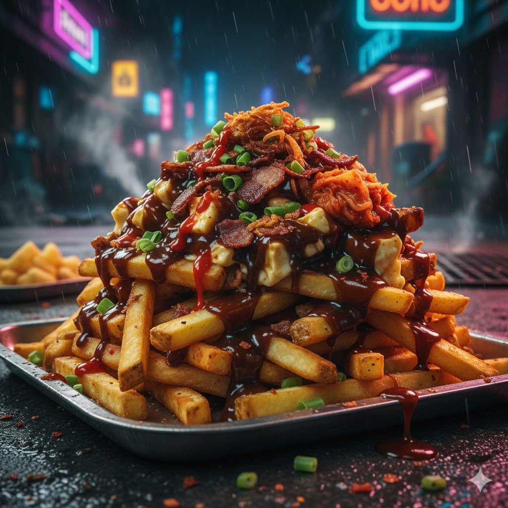
Estilo: Poutine
callejero llevado al extremo: papas fritas crocantes, salsa espesa
con sabor umami pesado, “queso” procesado estilo bunker y
toppings radioactivos propios del sprawl.
Inspiración: Blade
Runner street-food, Badlands gas stations, Night City food carts,
comida grasa y brutal para sobrevivir una noche larga.
⚡ Descripción Cyberpunk
El Poutine Cyber es el combustible predilecto de los repartidores nocturnos, mercenarios recién salidos de un tiroteo y borrachos que necesitan absorber 3 litros de alcohol corporal.Un plato grasiento, pegajoso, oscuro y tremendamente adictivo, capaz de revivir incluso a un netrunner con 3 horas de sueño en la última semana. Tiempo total: 25 min. Hardware: Freidora o olla para fritura profunda. Nota de Overclocking: Para el "Neon-Gravy", añade una pizca de cúrcuma al caldo oscuro para que brille con un tono ámbar radiactivo. Usa queso que se derrita en hilos elásticos para simular cables de fibra óptica colgando de las papas.
🍟 Ingredientes (2 porciones intensas)
Base — Papas “Fry-Core”- 400 g papas fritas (caseras o congeladas)
- 1 cdta sal
- 1 cdta merkén o paprika
- ½ cdta ajo en polvo
- 1 cda mantequilla
- 1 cda harina
- 1 taza caldo (de carne o de cubo)
- 1 cda salsa de soja
- 1 cdta salsa inglesa
- ½ cdta azúcar
- 1 pizca pimienta
- Opcional: ½ cdta miso o pasta gochujang (boost máximo)
- ½ taza queso mozzarella en cubos pequeños
- o queso fresco en trozos
- o queso procesado cortado a dados
- o mezcla “falsa”: leche en polvo + agua + un toque de limón (textura sorprendente)
- 2 cdas tocino o jamoneta frita
- 1 cda cebolla frita
- 1 cdta cebollín picado
- 1 cdta salsa picante
- 1 cdta kimchi picado (opcional, pero recomendado)
- 1 pizca sésamo tostado
🔧 Subreceta: Salsa “Neon Gravy” Mk.I
- Derretir mantequilla en olla pequeña.
- Agregar harina y revolver 1–2 min hasta formar un roux rubio.
- Incorporar caldo lentamente, revolviendo hasta espesar.
- Añadir soja + salsa inglesa + azúcar + pimienta.
- Cocinar 3–5 min hasta lograr una salsa oscura, brillante y umami.
🔥 Paso a Paso (Modo Puesto Callejero del Distrito Rojo)
1. Preparar las papas- Freír papas hasta dorar fuerte.
- Escurrir.
- Mezclar con sal, merkén y ajo en polvo para dar el toque street.
- Servir papas en bowl profundo o bandeja metálica.
- Añadir el “synth-curd” (queso) en trozos encima.
- Verter la
salsa caliente sobre el queso y las papas.
El queso debe casi derretirse, pero conservar algo de estructura.
- Tocino o jamoneta
- Cebollín
- Kimchi picado
- Salsa picante
- Sésamo
🌐 Presentación estilo Barrio Lluvioso
- En bandeja metálica, papel encerado o bowl plástico de microondas usado.
- Rociar un hilo de salsa sriracha u otro picante neón.
“Neon-Gravy Stack — Ración para Operadores en Turno de Vigilancia Nocturna.”
🛠 Notas del Chef / Optimización Cyberpunk
- Low-tier: papas + sobre de gravy + queso procesado → funciona perfecto.
- Corporate Edition: papas doble-fritas, queso curd real y gravy con vino tinto.
- Badlands Edition: sustituir queso por salsa de queso jalapeño en lata.
- Mutante: añadir ramen crujiente roto encima para textura extra.
- Vegano: salsa gravy de aceite + harina + caldo vegetal y cubos de tofu firme.
Tempura de Verduras Encurtidas — “Pickle Tempura Mk.I”

Estilo: Fritura
rápida de verduras encurtidas (pepinos, zanahorias, rábanos, kimchi
firme, cebolla en vinagre, etc.) con un batido ligero estilo tempura,
logrando un contraste brutal: ácido + crujiente + caliente.
Inspiración: Akira, puestos del mercado subterráneo de Kowloon,
bares clandestinos en callejones de Night City.
⚡ Descripción Cyberpunk
Cuando las verduras frescas son un lujo corporativo y los encurtidos industriales son lo único que llega a los barrios bajos, la gente aprende a freír lo imposible.El Pickle Tempura Mk.I nació cuando un cocinero del Distrito K recogió un tarro de encurtidos caído de un camión militar y decidió “tempurizar” todo lo que encontró dentro. Resultado:
Crujido metálico + acidez brillante + salinidad intensa.
Un snack perfecto para acompañar cerveza tibia, sake sintético o simplemente para pasar el hambre entre un run y otro. Tiempo total: 20 min. Hardware: Wok y papel absorbente de grado industrial. Nota de Overclocking: El ácido de los encurtidos reacciona con la masa de tempura. Usa agua con gas extra-fría para la mezcla; el choque térmico creará una armadura de burbujas que protege el núcleo ácido del vegetal.
🥒 Ingredientes (2 porciones)
Verduras encurtidas “Wasteland Pickles” (elige 3–4)- Pepinillos en vinagre (en rodajas gruesas o mitades)
- Zanahorias encurtidas
- Rábanos rojos o daikon encurtido
- Cebolla encurtida
- Kimchi firme (no muy húmedo)
- Mix de encurtidos coreanos o japoneses
- ½ taza harina
- ¼ taza maicena
- 1 huevo
- ½ taza agua helada (muy fría)
- ½ cdta bicarbonato
- 1 pizca sal
- 3–4 hielos (para mantener la mezcla helada)
- Aceite (sartén profunda o freidora improvisada en olla)
- Temperatura: 180°C aprox.
- 1 cda salsa de soja
- 1 cda vinagre de arroz
- 1 cdta azúcar
- 1 cdta aceite de sésamo
- 1 cdta gochujang o pasta de ají
- Ajonjolí y cebollín para terminar
- Mezclar harina + maicena + sal + bicarbonato.
- Añadir huevo + agua helada (con hielos flotando).
- Revolver
muy poco: debe quedar grumoso, casi mal mezclado.
Eso es lo que da la textura ligera y crujiente.
🔥 Paso a Paso (Técnica Night Market)
1. Preparar los encurtidos- Escurrir muy bien.
- Secar con papel o tela (el exceso de humedad arruina la fritura).
- Sumergir cada pieza en la tempura.
- Dejar caer sobre el aceite caliente suavemente.
- Primera fritura: 1 minuto, apenas se fija la costra.
- Segunda fritura: 30–40 segundos para dorar ligeramente.
- Dejar escurrir sobre rejilla o papel.
- No apilar para que no pierdan el crujido.
🌐 Presentación estilo Mercado Subterráneo
- Servir en cajas de cartón encerado o bandejas metálicas pequeñas.
- Espolvorear ajonjolí y cebollín.
- Acompañar con la salsa “Cyber-Acid”.
“Tempura Mk.I — Ración Oficial de los Mercados Prohibidos del Distrito K.”
🛠 Notas del Chef / Optimización Cyberpunk
- Low-tier: usar solo harina + agua con gas = funciona igual.
- Badlands Edition: encurtidos caseros en agua salada + harina común.
- Corporate Edition: encurtidos premium + tempura con agua con gas helada + panko extra.
- Mutante: usar encurtidos extremadamente picantes + gochujang en el batido.
- Vegano: reemplazar huevo por agua fría + pizca extra de maicena.
Sopa de Miso con “Pescado” de Lata — “Sublevel Miso Ration”

Estilo: Sopa
rápida, caliente, intensa y nutritiva, hecha con pasta miso + caldo
improvisado + proteína enlatada (jurel, atún, caballa, sardina).
Inspiración: Ghost in the Shell, barrios inundados, comedores
industriales, máquinas expendedoras que distribuyen sopas calientes
en cápsulas automatizadas.
⚡ Descripción Cyberpunk
En las ciudades sumergidas bajo neón y lluvia ácida, cuando las líneas eléctricas fallan y el único “producto del mar” a precio alcanzable es un pescado enlatado con fecha dudosa, la solución es clara: hackear una sopa miso para convertirla en una comida completa. La Sublevel Miso Ration es la comida oficial de los trabajadores de muelles, hackers que viven en cubículos húmedos y mercenarios que necesitan algo caliente antes de un run nocturno. Tiempo total: 10 min. Hardware: Cazo pequeño. Nota de Overclocking: Usa el aceite de la lata de sardinas o atún para sofreír el miso antes de añadir el agua. Esto crea una capa de lípidos en la superficie que retiene el calor en los niveles bajo cero de la ciudad.🥣 Ingredientes (1–2 raciones)
Base del caldo- 2 tazas agua
- 1–2 cdas miso (blanco o rojo)
- ½ cdta dashi instantáneo (o caldo de pescado/caldo en cubo si no hay dashi)
- 1 cdta salsa de soja
- 1 cdta mirin o ½ cdta azúcar
- 1 pizca ají en polvo (opcional)
- ½ lata de jurel
- ½ lata de sardinas en agua
- ½ lata de atún (idealmente al natural)
- ½ lata de caballa
- 1 cda tofu en cubos (opcional, si existe)
- 1 cdta alga nori picada o wakame seco
- 1 cda cebollín picado
- 1 puñado de fideos instantáneos o arroz sobrante (opcional, convierte la sopa en comida completa)
- 1 cda de
maíz en lata (opcional)
🔧 Subreceta: Manejo del “Pescado de Lata”
Truco para que sepa más a comida real y menos a “metal marino”.- Escurrir el exceso de líquido.
- Dorar opcionalmente 30 segundos en sartén → elimina notas metálicas y refuerza el umami.
- Si no hay
sartén, mezclar con ½ cdta de soja y unas gotas de limón antes de
usar.
🔥 Paso a Paso (Modo Street-Kitchen / Capsule Living)
- Preparar el caldo
- Calentar el agua hasta casi hervir.
- Apagar el fuego.
- Disolver el miso con una cuchara o colador (el miso NO debe hervir, arruina el sabor).
- Añadir dashi, soja y mirin/azúcar.
- Añadir proteína
- Incorporar el pescado de lata (entero, en trozos o desmenuzado).
- Cocinar a fuego suave 1–2 minutos.
- Añadir extras
- Tofu
- Wakame (se hidrata en segundos)
- Cebollín
- Maíz
- Fideos instantáneos (previamente rotos en trozos) si quieres algo más sustancioso
- Arroz sobrante para “versión comida completa”
- Ajustar el sabor
- Más miso si quieres sabor profundo.
- Más agua si quedó salado (las latas suelen serlo).
- Gota de picante para estilo callejero nocturno.
🌐 Presentación estilo Comedor de Muelle
- Servir en un bowl metálico o taza alta.
- Decorar con nori picado y cebollín.
“Sublevel Miso Ration — Approved for Flooded District Workers.”
🛠 Notas del Chef / Optimización Cyberpunk
- Low-tier: solo miso + agua + atún → sorprendentemente bueno.
- Corporate Edition: usar miso rojo premium, wakame real y caballa japonesa.
- Badlands Edition: reemplazar pescado por jamoneta frita.
- Vegano: miso + tofu + wakame + dashi vegetariano (kombu).
- Netrunner Boost: añadir un huevo poché o crudo directo al caldo caliente.
Samosas de Cordero “Black Market Masala” — “Triángulos de Contrabando”

Estilo: Fusión
de snack rápido + especias oscuras del mercado negro.
Inspiración: Samosas de Delhi, aromas Kashmiri, narrativa de
smuggling urbano.
🥟 Descripción Cyberpunk
Estas samosas circulan en el mercado clandestino de Watson Block 19: cordero molido perfumado con cardamomo y chiles secos, encerrado en triángulos crujientes que esconden más secretos que un chip militech. Tiempo total: 45 min. Hardware: Sartén para el relleno y freidora. Nota de Overclocking: El cordero de contrabando suele ser fuerte. Usa una dosis triple de comino tostado y clavo para "encriptar" el aroma. La masa debe quedar tan dura que pueda resistir una caída desde un tercer piso sin romperse.🥩 Ingredientes (6 samosas medianas)
Relleno “Contrabando Masala”
- 180 g cordero molido
- 1 cdta garam masala
- 1/2 cdta cúrcuma
- 1/2 cdta chile kashmiri
- 1/4 cdta cardamomo
- 1/2 cebolla picada
- 1 diente de ajo picado
- 1 cdta jengibre rallado
- 1 papa pequeña hervida y picada
- Sal + aceite
Masa Express
- 6 láminas de masa filo o wonton
🔧 Subreceta: Relleno “Contrabando Masala”
Saltea ajo+jengibre, agrega cebolla. Incorpora el cordero. Añade todas las especias. Mezcla papa. Cocina 5 min y enfría.
🔥 Paso a Paso
- Rellena cada lámina formando triángulos compactos.
- Sella con agua o mezcla de harina.
- Fríe 3–4 min a 170 °C o usa airfryer 8–10 min.
- Deja reposar.
🍶 Sugerencia de Servicio Estilo Fixer
Sirve sobre bandejas metálicas pequeñas, numeradas como mercancía “no declarada”.
🛠 Notas del Chef
- Para runners bajo estrés: mezcla 1 cdta de pickles indios para un “boost” ácido.
- Para nómades: duplica la papa para mayor duración en viaje.
Curry de Garbanzos “Nomad Desert Pulse” — “Chana Masala del Wasteland”

Estilo:
Plant-based, portátil, pensado para caravanas en zonas áridas.
Inspiración: Chana masala clásico + estética del desierto urbano.
🌶 Descripción Cyberpunk
El Chana Masala que se sirve en las rutas nómades está pensado para resistir: espeso, aromático, casi indestructible. Su mezcla de tomate, comino y chile seco es tan reconfortante como una fogata al borde de un convoy blindado.
- Tiempo total: 30 min.
- Hardware: Olla de presión o cazuela de barro.
- Nota de Overclocking: Tosta los garbanzos secos antes de hidratarlos para un sabor a nuez quemada. Añade té negro al agua de cocción para que los garbanzos tomen un color marrón oscuro, casi metálico.
🫘 Ingredientes (2 raciones)
- 1 taza garbanzos cocidos
- 1 tomate picado o 100 g tomate en lata
- 1 cebolla picada fina
- 2 dientes de ajo
- 1 cdta jengibre
- 1 cdta comino
- 1 cdta garam masala
- 1/2 cdta cúrcuma
- 1/2 cdta chile kashmiri
- 1 cda aceite
- Sal
- Agua c/n
- Limón para finalizar
🔧 Subreceta Nomad Spice Mix
Mezcla comino + cúrcuma + kashmiri + garam masala. Guarda en bolsitas herméticas para la ruta.
🔥 Paso a Paso
- Saltea cebolla → ajo → jengibre.
- Agrega tomate y reduce.
- Suma garbanzos + especias.
- Cocina 10–12 min, ajusta agua según espesor deseado.
- Termina con limón.
🍶 Sugerencia de Servicio Estilo Wasteland
Sirve en contenedores viejos de combustible limpios y recortados, a modo de “cuencos”.
🛠 Notas del Chef
- Para peak energético: añade 1 cdta aceite de coco.
- Para fixers
veganos en movimiento: envasa al vacío.
Paneer Tikka “Data-Block Rojo” — “Cubo de Proteína para Hackers”

Estilo: Snack
proteico, vegetariano, ultra visual.
Inspiración: Paneer Tikka
+ estética neon-grid de servidores industriales.
🧬 Descripción Cyberpunk
Dados de paneer marinados en especias rojas intensas, asados hasta quedar con marcas tipo “código quemado”. Perfecto para netrunners que necesitan proteína sin caer en la pesadez de la carne.
Tiempo total: 25
min.
Hardware: Grill
o sartén estriada.
Nota de Overclocking: Corta el queso en cubos perfectos de 2x2 cm. Usa colorante rojo intenso en la marinada de yogur para que parezcan procesadores de alta gama sobrecalentados. Sella hasta que los bordes estén carbonizados (píxeles muertos).
🧀 Ingredientes (1 ración / 6 cubos grandes)
- 120 g paneer en cubos
- 1 cda yogur
- 1 cdta garam masala
- 1 cdta cúrcuma
- 1 cdta chile kashmiri (color rojo brillante)
- 1 cdta aceite
- 1 cdta jugo de limón
- 1 pizca sal
- 1/4 cebolla morada en pétalos
- 1/4 pimentón en cubos
🔧 Subreceta Marinada “Red Data Block”
Mezcla yogur + especias + limón + aceite hasta formar pasta roja. Cubre el paneer y marina 20 min.🔥 Paso a Paso
- Ensarta paneer con cebolla y pimentón.
- Asa en sartén o grill 2–3 min por lado.
- Carameliza con un toque final de aceite caliente.
🍶 Sugerencia de Servicio Estilo Hacker Lounge
Sirve sobre bandeja negra mate con líneas trazadas en sriracha simulando circuitos.
🛠 Notas del Chef
- Para nómades: reemplaza paneer por tofu firme prensado.
- Para fixers: sirve con salsa de menta ultra fría estilo criogenia.
Arroz Biryani “Overclocked” — “Caldera de Especias para Elites del Sprawl”
Estilo:
Aromático, explosivo, pensado para noches largas de negociación o
hackeo.
Inspiración: Hyderabadi biryani + capas de sabor como
capas de cifrado.
⚡ Descripción Cyberpunk
Este biryani se cocina por capas, igual que un sistema cifrado que necesita pasos precisos. Es el plato fetiche de los fixers que pasan horas cerrando tratos en pisos altos. Su mezcla de cardamomo, clavo y azafrán sintético huele a lujo peligroso.
Tiempo total: 50
min.
Hardware: Olla
pesada con cierre hermético (Sellado con masa).
Nota de Overclocking: La técnica "Dum" es el overclocking original. Sella la tapa con una tira de masa cruda para que no escape ni un bit de vapor. Al abrirlo, el estallido de especias debe ser tan potente que reinicie los sentidos del comensal.
🍚 Ingredientes (1 ración generosa)
- 1 taza arroz basmati
- 120 g pollo en cubos
- 1/2 cebolla en láminas
- 1 tomate picado
- 1 cda yogur
- 1 cdta garam masala
- 1 cdta cúrcuma
- 1 cdta comino
- 1 pizca cardamomo
- 1 clavo
- 1 cdta pasta de ajo+jengibre
- Hojas de menta
- Azafrán sintético (o cúrcuma extra)
- Aceite o ghee
- Sal
🔧 Subreceta Masala Base “Overclock”
Saltea cebolla hasta dorar. Agrega ajo+jengibre → tomate → especias. Incorpora pollo y cocina 5 min.
🔥 Paso a Paso
- Lava el arroz y cocina al 70% (semi-crudo).
- En olla: una capa de masala → capa de arroz → hojas de menta.
- Repite hasta llenar.
- Cubre, sella y cocina 12 min a fuego muy bajo.
- Suelta el arroz con suavidad, evitando romper granos.
🍶 Sugerencia de Servicio Estilo Corporate
Sirve en contenedores metálicos hexagonales, con una cápsula de “azafrán sintético” que el comensal activa para liberar aroma.
🛠 Notas del Chef
- Para fixers premium: añade 1 cda de almendras fileteadas tostadas.
- Para nómades: cambia el pollo por carne seca rehidratada.
🍙 ONIGIRI “CORE-LINK” — MÓDULO DE ENERGÍA DE JAPAN TOWN

Estilo: Snack portátil de alta densidad, equilibrado entre carbohidratos complejos y proteína compactada. Inspiración: Puestos callejeros de Kabuki, máquinas expendedoras de "Onigiri-Go" y raciones tácticas de campo.
🌐 Descripción Cyberpunk
En las calles de Japan Town, el Onigiri no es solo comida; es un módulo de energía recargable. Diseñado para ser consumido con una sola mano mientras se esquivan drones de vigilancia o se espera un enlace en la Red. La versión de Japan Town utiliza un núcleo de umami concentrado envuelto en una armadura de fibra de alga (Nori) para mantener la integridad estructural en entornos de alta movilidad.
- Tiempo total: 25 minutos.
- Ensamblaje Táctico: 10 min.
- Hardware (Equipo): * Sartén antiadherente (para el sellado térmico).
- Film plástico o molde geométrico (para asegurar la compresión).
- Bowl de cerámica (para la hidratación y mezcla del arroz).
🍙 Ingredientes (2 Unidades / Raciones)
- Base de Chasis: 1 ½ tazas de arroz para sushi cocido (debe estar pegajoso).
- Blindaje Externo: 2 láminas de alga Nori (cortadas en tiras anchas).
- Núcleo de Datos (Relleno): 50g de atún (o proteína vat-grown) mezclado con 1 cda de mayonesa japonesa y una pizca de Salsa Nuke-Block.
-
Modificadores de Sabor:
- 1 cdta de vinagre de arroz.
- 1 pizca de azúcar y sal.
- Semillas de sésamo tostado para la Activación.
🔥 Paso a Paso (Técnica Profesional)
- Protocolo de Arroz: Mezcla el arroz caliente con el vinagre, azúcar y sal en un bowl. Deja enfriar a temperatura operativa (tibio) para que no degrade el Nori.
- Carga del Núcleo: En un recipiente pequeño, integra la proteína con la mayonesa y los condimentos hasta obtener una pasta homogénea de alta densidad energética.
- Impacto de Compresión (Smash): Humedece tus manos con agua salada. Toma una porción de arroz, crea un hueco en el centro e inserta el "Núcleo de Datos". Cierra con más arroz y aplica presión firme para formar un triángulo perfecto (estilo geométrico industrial).
- Sellado Térmico (Opcional - Estilo Yaki): Pasa el Onigiri por una sartén caliente con una gota de aceite de sésamo 1 minuto por lado hasta crear una costra dorada (Chrome-Glaze de soja opcional).
- Instalación del Hardware: Envuelve la base del triángulo con la tira de Nori. El alga debe quedar tensa, como un cable de fibra óptica protegiendo el núcleo.
🍶 Sugerencia de Servicio Estilo Japan Town
Servir en un envoltorio de papel encerado con tipografía neón.
- Etiqueta Ficticia: "CORE-LINK Onigiri Tier 2 — Carga rápida. 100% Umami Sintético Garantizado."
- Acompañar con un shot de Sopa Miso Sublevel.
🛠 Optimización Cyberpunk
- Low-tier (Budget Sprawl): Usa arroz estándar de grano largo y relleno de jamoneta frita con ketchup.
- Corporate Edition: Arroz Koshihikari real, relleno de salmón salvaje y láminas de oro comestible para el gloss premium.
- Overclocked (Modo Traición): Añade una capa de Firewall (wasabi puro) entre el arroz y el núcleo para un impacto sensorial inmediato.
🧁 SECCIÓN 6: POSTRES - "SUGAR CRASH"
"El azúcar era un vector de datos de alta intensidad, una ráfaga de estática dulce que cortaba la neblina del hielo y el silicio. En los clubes de Shinjuku, los postres no eran comida; eran pequeños fetiches de ingeniería química, arquitecturas de crema sintética y frutas clonadas que se deshacían en la lengua como un programa autoejecutable. Un solo bocado y el mundo de neón recuperaba su color, un 'glitch' de placer orgánico en medio de una realidad que solo sabía a metal y cables quemados. No era nutrición, era un overclocking del espíritu."
Donas de Neón — “Glow-Glaze Donuts Mk.III”

Estilo: Donas
fritas suaves, esponjosas y cubiertas con glaseados fluorescentes
inspirados en el neón urbano. Azúcares intensos, colores
sintéticos, sabores contrastantes, estética kitsch-tech.
Inspiración: Akira, Cyberpunk 2077 Kabuki Market, Altered Carbon —
comida callejera estética, llamativa, adictiva y barata.
⚡ Descripción Cyberpunk
Estas donas no están pensadas para ser discretas. Son el equivalente dulce a una patada eléctrica: colores imposibles, brillo sintético, glaseados que parecen radiactivos y un olor a azúcar que podría atraer drones policiales.
En los distritos bajos se venden en puestos semiclandestinos y su fama es simple: si ves el brillo a 30 metros, están frescas.
Tiempo total: 45 min (incluyendo fermentación rápida y glaseado).
Hardware:Freidora o sartén honda, rejilla de enfriamiento y luz UV (opcional para testeo).
Nota de Overclocking: Para un brillo "radiactivo", mezcla azúcar glass con vitamina B2 (Riboflavina) triturada. Bajo luz negra, las donas emitirán un resplandor amarillo-verde fluorescente que parecerá energía pura extraída de un generador.
🍩 Ingredientes (8–10 donas medianas)
Masa base “Soft-Core Donut”
- 2 ½ tazas harina
- 2 cdas azúcar
- 1 cdta sal
- 2 cdas mantequilla blanda
- 1 huevo
- ½ taza leche tibia
- 1 cdta levadura seca activa
- ½ cdta esencia de vainilla
- Aceite para freír (180°C)
Glaseado “Neon Glaze Mk.III”
(Preparar 2–3 colores distintos)
Base:
- 1 taza azúcar flor (impalpable)
- 1–2 cdas leche o agua
- ½ cdta vainilla
Colores y sabores (elige o combina):
- Rosa → colorante + unas gotas de frambuesa
- Verde → colorante + limón
- Azul → colorante + coco o esencia floral
- Amarillo → cúrcuma + mango o maracuyá
- Morado → colorante + mora o arándano
Extras “Glow-Boost”
- Mostacillas metálicas
- Polvo ácido (tipo pica-pica)
- Tiras de caramelo cortadas finas
- Chips pop-rocks (para efecto chispeante)
🔧 Subreceta: Masa Perfecta “Donut Lab”
- Mezclar leche tibia + levadura + 1 cdta azúcar → dejar 10 min hasta espumar.
- En bowl grande: harina + azúcar + sal.
- Añadir huevo, vainilla y mezcla de levadura.
- Amasar 8–10 min hasta obtener masa lisa.
- Añadir mantequilla y seguir amasando 5 min más.
- Reposar 1 h tapada (duplicará volumen).
La mantequilla al final genera una miga suave estilo military-soft donut.
🔥 Paso a Paso (Modo Hologram Food Stall)
- Formar las donas
- Extender la masa a 1.5 cm de grosor.
- Cortar círculos (con agujero al centro).
- Dejar fermentar 20–30 min.
- Freír
- Aceite a 180°C.
- Freír 1 min por lado hasta dorado claro.
- Escurrir sobre papel.
- Crear el Glaseado Neón
- Mezclar azúcar flor + agua/leche hasta textura fluida y brillante.
- Separar en bowls y añadir colorantes + sabores.
- Debe verse fluorescente, casi antinatural.
- Glasear con estilo Cyber
- Sumergir la parte superior de cada dona en el neón-glaze.
- Decorar con mostacillas metálicas, polvo ácido, pop-rocks o caramelos.
- Dejar secar 5–10 min.
🌐 Presentación estilo Kabuki Market
- Donas apiladas en torres verticales iluminadas.
- Bandejas metálicas o cajas de cartón con iconografía futurista.
- Opcional: pulverizar spray comestible plateado para efecto chrome.
Etiqueta
ficticia:
“Glow-Glaze Mk.III — Producto autorizado por la
Asociación de Repostería Holográfica de Night City.”
🛠 Notas del Chef / Optimización Cyberpunk
- Low-tier: masa preparada + glaseado simple → igual funciona.
- Corporate Edition: usar vainilla natural, frutas reales y colores pasteleros premium.
- Neon Overload: usar glaseado doble: capa blanca + capa neón por encima.
- Badlands Edition: masa frita simple sin reposo; glaseado hecho con agua + azúcar + colorante.
- Mutante: agregar polvo energético (tipo bebida deportiva) al glaseado → sabor “radioactivo”.
Mochi de Café Sintético — “Synthetic Caff-Mochi Mk.II”

Estilo: Mochi
suave, elástico y ligeramente masticable, con un relleno cremoso de
café sintético (instantáneo, concentrado o sustituto
corporativo).
Inspiración: Altered Carbon, Ghost in the Shell,
Cyberpunk 2077 Japantown — postres de konbini futuristas y snacks
de máquinas automáticas luminosas.
⚡ Descripción Cyberpunk
En las megaciudades donde el café real es un lujo reservado para ejecutivos de primer nivel, las masas consumen café sintético, una mezcla barata pero adictiva que entrega la dosis justa de estimulación neuronal.
Este mochi usa ese sabor artificial para crear un postre icónico del sprawl: suave, gomoso, energizante y perfecto para acompañar noches eternas de hackeo.
Tiempo total: 25 min.
Hardware: Microondas (para cocción rápida de la masa de arroz) o vaporera, y guantes de silicona (para manipular la masa caliente).
Nota de Overclocking: Rellena el centro con una reducción de espresso concentrado y chocolate amargo. Al morder, la "cafeína líquida" estallará en el paladar, proporcionando un boost cognitivo inmediato al usuario.
🍡 Ingredientes (8–10 mochi)
Masa Mochi “Elastic Skin”
- 1 taza harina de arroz glutinoso (mochiko)
- ½ taza azúcar
- 1 taza agua
- ½ cdta esencia de vainilla
- 1 cdta café instantáneo o polvo sintético (disuelto en 1 cda agua caliente)
- Fécula de maíz para manipular
Relleno “Synthetic Caff-Core” (crema de café)
- ½ taza crema de leche o crema vegetal
- 1 ½ cdas azúcar
- 1 cdta café instantáneo concentrado
- 1 pizca de cacao (opcional, para sabor más profundo)
- 1 pizca sal (realza sabor)
🔧 Subreceta: Crema “Caff-Core”
- Mezclar crema + azúcar + café instantáneo.
- Batir 1–2 min hasta espesar ligeramente.
- Refrigerar 15–20 min para que firme.
Pro tip: Para un toque verdaderamente cyberpunk, añade ½ cdta de polvo energético tipo “Netrunner Fuel”.
🔥 Paso a Paso (Modo Laboratorio de Repostería Neo-Tokio)
- Preparar la masa mochi
- Mezclar mochiko + azúcar en bowl.
- Añadir agua + vainilla + café disuelto.
- Mezclar hasta obtener líquido espeso.
- Cocinar al vapor 12–15 min o en microondas 2–3 min removiendo a mitad del tiempo.
- Manipular el mochi
- Espolvorear una bandeja con maicena.
- Verter la masa caliente sobre ella.
- Extender suavemente con manos enharinadas en fécula.
- Dejar enfriar 10 min.
- Formar los mochi
- Cortar cuadrados o círculos del mochi.
- Colocar una cucharadita del Caff-Core en el centro.
- Cerrar pellizcando los bordes hacia arriba.
- Sellar y bolear suavemente.
- Reposo
- Refrigerar 15–20 min para que tomen forma y textura.
La masa debe pasar de líquida → espesa → pegajosa y semitranslúcida.
El truco: no usar demasiado relleno o el mochi explotará al manipularlo.
🌐 Presentación estilo Konbini Holográfico
- Servir en cápsulas de papel o bandejas minimalistas.
- Espolvorear cacao o café molido sintético encima.
Etiqueta
ficticia:
“Synthetic Caff-Mochi Mk.II — Approved by
Neo-Tokyo Snack Authority.”
🛠 Notas del Chef / Optimización Cyberpunk
- Low-tier: mochi comprado + relleno de café instantáneo batido con crema.
- Badlands Edition: usar leche condensada + café para el relleno.
- Corporate Edition: usar espresso real + crema fresca.
- Overclocked: agregar taurina o polvo energético para un mochi-estimulante estilo “combat snack”.
- Vegano: crema vegetal + sustituto de café tipo cebada tostada.
Churros con Dip de Matcha — “Matcha-Boost Churros Mk.I”

Estilo: Churros
crujientes por fuera, suaves por dentro, rebozados en azúcar
especiada y acompañados por un dip espeso de matcha con tonos verdes
neón.
Inspiración: Mercados de Night City, Arcades de Tokio,
puestos de comida de Firefly, y el sincretismo global-food propio del
futuro cyberpunk.
⚡ Descripción Cyberpunk
En los distritos
donde las tradiciones culinarias se mezclan sin control, nacieron los
Matcha-Boost Churros: un híbrido entre street-food hispano y
ceremonias de té reinterpretadas por corporaciones de marketing
neon.
El dip verde brillante parece reactivo y tiene un sabor
que despierta el sistema nervioso como un boost modesto antes de una
noche de hackeo.
Tiempo total: 30 min.
Hardware: Manga pastelera con boquilla de estrella reforzada y sartén profunda.
Nota de Overclocking: Añade una pizca de té matcha de grado ceremonial tanto a la masa como al dip. El color verde intenso contrastará con el dorado del churro, simulando una barra de uranio sumergida en lodo alcalino.
🍩 Ingredientes (12–16 churros)
Masa de Churro “Fry-Core”
- 1 taza agua
- 2 cdas mantequilla
- 1 cda azúcar
- 1 pizca sal
- 1 taza harina
- 1 huevo grande
- Aceite para freír (170–180°C)
Cobertura “Chrome Sugar”
- ½ taza azúcar
- 1 cdta canela
- ¼ cdta cardamomo (opcional, para toque exótico-futurista)
Dip “Neon Matcha Cream”
- 1 taza leche (o leche vegetal)
- 1 cda maicena
- 2 cdas azúcar
- 1–2 cdas matcha (según intensidad)
- 1 cdta miel o jarabe neutro
- 1 chorrito de vainilla
- Opcional: gotas de colorante verde para brillo neón
🔧 Subreceta: Dip de Matcha Mk.I
- Mezclar leche + maicena + azúcar en frío.
- Llevar a fuego medio revolviendo hasta espesar ligeramente.
- Apagar el fuego y añadir matcha, miel y vainilla.
-
Ajustar
color:
- Más matcha = verde profundo.
- Colorante verde = efecto neón corporativo.
- Enfriar 10–15 min.
Consejo pro: pasar por colador fino para textura ultra-seductora y sin grumos.
🔥 Paso a Paso (Sistema de Fritura Urbana)
- Preparar la masa
- Hervir agua + mantequilla + azúcar + sal.
- Añadir harina de golpe y mezclar hasta formar una masa densa que se despega del sartén.
- Dejar enfriar 5 min.
- Añadir el huevo y mezclar hasta integrar (masa lisa y brillante).
- Formar los churros
- Colocar la masa en manga pastelera con boquilla rizada.
- Formar tiras de 10–15 cm directamente sobre el aceite caliente o sobre una bandeja antes de freír.
- Freír — Modo Callejón Neon
- Freír en aceite a 170–180°C.
- Cocinar 3–4 min hasta dorado uniforme.
- Escurrir sobre papel absorbente.
- Rebose “Chrome Sugar”
- Mezclar azúcar + canela + cardamomo.
- Pasar los churros calientes por la mezcla para un recubrimiento brillante y especiado.
🌐 Presentación estilo Neo-Tokio Mid-Market
- Servir los churros en vasos metálicos o bandejas con papel holográfico.
- Presentar el dip en un pequeño contenedor translúcido (parece un reactivo químico).
- Opcional: decorar con trazos de matcha sobre los churros o polvo comestible dorado.
Etiqueta
ficticia:
“Matcha-Boost Churros Mk.I — Approved for
High-Calorie Netrunning Sessions.”
🛠 Notas del Chef / Optimización Cyberpunk
- Low-tier: churros congelados + dip de leche + matcha instantáneo.
- Corporate Edition: matcha ceremonial, azúcar vainillada, mantequilla europea.
- Boost Edition: añadir ½ cdta de café sintético al dip → efecto energético.
- Mutante: dip de matcha + limón + jengibre para sabor radiante y ácido.
- Vegano: masa sin huevo (harina + agua caliente + aceite) y leche vegetal en el dip.
Gelatina de “Refrigerante” — “Coolant Jelly Mk.IV”

Estilo: Gelatina
brillante, translúcida y de colores neón, hecha a partir de bebidas
energéticas o refrescos sintéticos (azules, verdes, morados, o
“radioactive citrus”).
Inspiración: Snow Crash, blocs de
nutritivos corporativos, mercados clandestinos bajo torres
industriales, postres que parecen piezas de motor más que alimentos.
⚡ Descripción Cyberpunk
En un futuro
donde el agua potable es cara y los refrescos sintéticos son
baratos, es inevitable que alguien convierta esos líquidos
fluorescentes en postre.
La Coolant Jelly Mk.IV es un clásico
de los comedores industriales: fría, elástica, con un sabor
intensamente químico y un brillo que haría sospechar a cualquier
inspector de salud pública.
Ideal para:
- enfriar el cerebro después de un día en el taller de implantes,
- saciar antojos nocturnos en hoteles cápsula,
- o como postre estándar en prisiones corporativas.
Tiempo total: 15 min de preparación / 2 horas de "enfriamiento de sistema".
Hardware: Moldes geométricos (cubos o hexágonos) y refrigerador de alta potencia.
Nota de Overclocking: Usa bebida isotónica azul o de curaçao para la base. Suspende dentro de la gelatina trozos de fruta cortados en formas de microchips; parecerán componentes de hardware criogenizados en líquido refrigerante.
🧪 Ingredientes (4–6 porciones)
Base “Coolant Liquid”
(elige 1 bebida neón)
- 2 tazas de bebida energética fluorescente (verde, azul o roja)
- o gaseosa de color intenso (Mountain Dew, gaseosa azul, tónica amarga, etc.)
- o “refrigerante casero”: agua + 2 cdas jugo en polvo + colorante + limón
Gelificación
- 2 sobres de gelatina sin sabor (15 g aprox.)
- ¼ taza agua fría
- 1–2 cdas azúcar (ajusta según dulzor de la bebida)
Aromas y suplementos “Cyber-Boost” (opcionales)
- ½ cdta esencia de limón o naranja
- ¼ cdta extracto floral (lychee, violeta, rosas)
- ½ cdta polvo energético (estilo “fuel” para gamers)
- Ralladura fina de limón (opcional, agrega acidez real)
Decoración
- Cubos de gelatina de otro color (para efecto “biomódulo”)
- Pop-rocks
- Mostacillas plateadas
- Hojas de menta sintética (menta normal, pero cortada en triángulos perfectos)
🔧 Subreceta: “Bloom” de Gelatina
- En un bowl pequeño, mezclar la gelatina con ¼ taza agua fría.
- Dejar hidratar 5–7 minutos hasta que se vuelva esponjosa.
- Reservar.
Este proceso evita grumos y da una textura perfecta.
🔥 Paso a Paso (Procedimiento de Laboratorio Culinario)
- Calentar el refrigerante
- Colocar 2 tazas de la bebida elegida en olla pequeña.
- Calentar hasta que esté caliente pero no hirviendo (si hierve, se evapora el gas y cambia el sabor).
- Incorporar la gelatina
- Añadir la gelatina hidratada a la bebida caliente.
- Mezclar suavemente hasta disolver completamente.
- Añadir azúcar y sabores adicionales (limón, esencia, polvo energético).
- Crear el brillo neón
- Moldear
- Verter en moldes cuadrados, rectangulares o un molde grande tipo “bloque de datos”.
- Refrigerar 4 horas hasta cuajar.
- Decoración (Modo Cyber-Show)
- Cortar en cubos perfectos.
- Acompañar con pop-rocks o gelatina de otro color para efecto “circuito interno”.
- Espolvorear mostacillas plateadas para estética chrome.
Truco: agregar unas gotas de colorante verde/azul para intensificar la estética “Coolant”.
🌐 Presentación estilo Laboratorio Corporativo
- Servir en placas metálicas, cápsulas de vidrio o bandejas minimalistas.
- Opcional: luz LED debajo para potenciar el color.
Etiqueta
ficticia:
“Coolant Jelly Mk.IV — Aprobado por la División
de Nutrientes Sintéticos de Arasaka.”
🛠 Notas del Chef / Optimización Cyberpunk
- Low-tier: gelatina + bebida energizante → listo.
- Corporate Edition: gelatina premium + aromatizantes naturales + gaseosas artesanales.
- Badlands Edition: agua + polvo para bebida + colorante → sorprendentemente efectivo.
- Overclocked: añadir taurina o cafeína → postre energizante para netrunners.
- Mutante: mezclar dos bebidas para efecto bicolor o capas tipo glitch.
Brownies de “Biomasa” — “Bio-Block Fudge Mk.III”

Estilo: Brownies
densos, húmedos, oscuros y ultra-energéticos, hechos con una mezcla
de cacao, proteínas, azúcar industrial y biomasa sintética (que en
este contexto equivale a puré de legumbres, pasta proteica o
suplemento en polvo).
Inspiración: Neuromancer, raciones
corporativas, comida funcional de megafábricas, snacks de
supervivencia para operadores en zonas contaminadas.
⚡ Descripción Cyberpunk
En un mundo donde el chocolate verdadero es caro y la proteína escasea, las corporaciones distribuyen un subproducto llamado biomasa, una pasta hiperproteica sin sabor que puede convertirse —con creatividad callejera— en comidas sorprendentemente buenas.
Los Brownies de
Biomasa son la respuesta dulce del sprawl:
densos, oscuros, con
un toque metálico y un sabor a cacao que oculta lo que no quieres
saber de su contenido real.
Perfectos para:
- turnos nocturnos,
- maratones de netrunning,
- o como ración compacta para mercenarios en movilidad.
Tiempo total: 35 min.
Hardware: Molde cuadrado de metal y espátula de acero.
Nota de Overclocking: Para lograr la textura de "bloque de construcción", usa cacao negro (Black Cocoa) al 100%. El resultado será un brownie tan oscuro que parecerá materia sólida de un agujero negro o un ladrillo de biomasa procesada en una planta de reciclaje.
🍫 Ingredientes (8–12 porciones)
Base “Bio-Block” de Alto Rendimiento
- ¼ taza mantequilla de maní o almendras (sustituye la mantequilla tradicional para más proteína)
- ⅓ taza eritritol o endulzante (o azúcar si el presupuesto es bajo)
- 2 huevos
- 1 cdta vainilla
- ½ taza cacao en polvo (preferiblemente Black Cocoa)
- ½ taza proteína en polvo (Whey o Caseína, sabor chocolate)
- ¼ cdta sal
- ½ cdta bicarbonato
Componente “Biomasa Refinada” (El Núcleo)
- 1 taza de Puré de Porotos Rojos Dulces (Aduki): Biomasa optimizada que aporta humedad, densidad y un sabor redondo que armoniza con el cacao.
- ½ taza de Proteína en Polvo (Whey o Caseína): Sabor chocolate para maximizar el valor biológico.
- 2 cdas de Cacao Negro (Black Cocoa) 100%: Para lograr el color de "materia oscura" y textura de bloque sólido.
Boosters de Sistema (Opcionales)
- 1 cda Café instantáneo: Mejora la frecuencia del sabor del cacao y anula cualquier rastro vegetal.
- ¼ taza Chips de chocolate 85% cacao: Grado ejecutivo.
- 1 pizca de Sal marina: Para resaltar el perfil amargo y tecnológico del bloque.
🔧 Subreceta: “Biomasa Refinada” (opcional, versión gourmet del wasteland)
Si usas legumbres:- Procesarlas con 1–2 cdas agua hasta crear una pasta muy fina.
- Añadir una pizca de cacao para oscurecer y ocultar sabor.
- Combinar la mantequilla de fruto seco + endulzante.
- Añadir huevos + vainilla.
- Incorporar el cacao, la proteína en polvo, sal y bicarbonato.
- Mezclar justo hasta integrar (no sobrebatir).
- Incorporar la biomasa de porotos rojos procesada a la mezcla base.
- Mezclar bien hasta que todo tenga textura homogénea, espesa y un color oscuro uniforme.
- Añadir el café instantáneo, nueces o chips de chocolate si los usas.
- Precalentar a 175°C.
- Verter la mezcla en un molde cuadrado engrasado.
- Hornear 18–22 minutos. El centro debe quedar húmedo para mantener la consistencia de "fudge".
- Enfriar completamente (idealmente refrigerar 2 horas) antes de cortar; es vital para la consistencia “bio-block”.
- Cortar en cubos perfectos tipo “ración estándar”.
- Opcional: espolvorear cacao o polvo energético encima para efecto “boost”.
🌐 Presentación estilo Laboratorio Nutricional
- Servir en bandejas metálicas, cápsulas selladas o envoltorios tipo ración militar.
- Decorar con líneas de glaseado blanco para efecto “código de barras”.
“Bio-Block Fudge Mk.III — 12g Protein. Approved for Heavy-Duty Field Operatives.”
🛠 Notas del Chef / Optimización Cyberpunk
- Low-tier: brownies tradicionales + ¼ taza proteína en polvo → versión rápida.
- Corporate Edition: cacao premium + mantequilla real + biomasa refinada.
- Badlands Edition: harina + agua + cacao + aceite → sorprendentemente funcional.
- Overclocked: añadir 1 cda café sintético o polvo energético → brownies estimulantes.
- Mutante: mezclar biomasa vegetal + chile picante para efecto “radioactivo”.
- Vegano: reemplazar huevos por 2 cdas linaza + 6 cdas agua.
Tapioca de Leche de Coco — “Coconut Pearl Suspension Mk.II”

Estilo: Postre
suave, brillante y aromático, hecho con perlas de tapioca hidratadas
en leche de coco dulce. Textura elástica, cremosa y casi
bioluminiscente cuando se presenta con colorantes o toppings
neon.
Inspiración: Firefly (sincretismo cultural), mercados
asiáticos futuristas, bares clandestinos en Night City, y los
clásicos postres “coolant-cream” usados para bajar el calor
tóxico urbano.
⚡ Descripción Cyberpunk
En las megaciudades sobrepobladas, la tapioca es uno de los pocos carbohidratos baratos, resistentes al almacenamiento y fáciles de cocinar incluso en cocinas minimalistas o cápsulas habitacionales. La Coconut Pearl Suspension Mk.II es un postre que combina:- suavidad,
- brillo translúcido,
- dulzor tropical sintético,
- y la estética retro-futurista de las burbujas comestibles.
🥥 Ingredientes (4 porciones)
Perlas de tapioca “Suspension Pearls”
- ½ taza perlas de tapioca (pequeñas)
- 4 tazas agua para cocción
- 1 taza agua fría para choque
- 1 cdta azúcar (para sellar textura)
Base cremosa “Coconut Reactor”
- 1 taza leche de coco
- ½ taza leche normal o vegetal
- 3–4 cdas azúcar (ajustar a gusto)
- 1 pizca sal
- ½ cdta esencia de vainilla
- Opcional: 1 cda crema de coco para versión más espesa
Aromas / Boosters opcionales
- 1 cdta extracto de pandan (verde futurista)
- ½ cdta matcha (color y umami dulce)
- 2 cdas leche condensada (versión ultra-callejera)
- 1 cdta jarabe de mango o maracuyá (estilo sincretismo tropical)
Toppings “Glow-Up” - (elige 1 o combinar)
- Cubos de gelatina de colores
- Fruta sintética o fruta real: mango, lychee, berries
- Pop-boba (bolitas rellenas)
- Sésamo negro
- Menta fresca o “menta sintética”
- Colorante azul o verde para efecto neon-soft
🔧 Subreceta: Cocción Perfecta de Tapioca
- Calentar 4 tazas de agua hasta hervir.
- Añadir la tapioca y cocinar 15 minutos, revolviendo ocasionalmente.
- Apagar el fuego, tapar y dejar reposar 10 minutos más.
- Las perlas deben verse transparentes con un pequeño punto blanco en el centro.
- Pasar por colador y enjuagar con agua fría.
- Añadir 1 cdta de azúcar para que no se peguen y para mantener brillo.
🔥 Paso a Paso (Modo Karaoke-Bar Futurista)
- Prepara la base Coconut Reactor
- Mezclar leche de coco + leche + azúcar + sal + vainilla.
- Calentar a fuego bajo solo para disolver completamente el azúcar.
- No dejar hervir: cambia el sabor y separa grasas.
- Retirar del fuego y enfriar 10–15 min.
- Integrar las perlas
- Agregar la tapioca ya cocida y fría a la crema de coco.
- Mezclar suavemente para que cada perla quede suspendida en el líquido.
- Reposar
- Refrigerar 20–40 minutos.
- Esto espesa ligeramente y mejora textura.
- Servir estilo Cyber-Street
- Verter en vasos transparentes, bowls cortos o contenedores con tapa de cápsula.
- Decorar con fruta, gelatina o sésamo.
Si quieres un
color suave neon:
Añadir unas gotas de colorante azul, verde o
morado → efecto “bioluminiscencia”.
🌐 Presentación estilo Mercado Nocturno Neo-Asia
- Servir con luz LED debajo para resaltar el brillo de las perlas.
- Añadir una cucharadita de “mango reactor gel” o “citrus coolant”.
- Espolvorear sésamo negro para contraste dramático.
Etiqueta
ficticia:
“Coconut Pearl Suspension Mk.II — Cold-Class
Dessert for High-Temp Urban Zones.”
🛠 Notas del Chef / Optimización Cyberpunk
- Low-tier: solo tapioca + leche de coco + azúcar → funciona perfecto.
- Corporate Edition: leche de coco premium + vainilla natural + lychee real.
- Badlands Edition: agua + leche en polvo + coco rallado + colorante.
- Mutante: capa doble de colores (verde abajo, azul arriba).
- Overclocked: añadir ½ cdta café sintético para versión energizante.
- Vegano: usar solo leches vegetales (coco + almendra).
Crepes de “Papel” — “Data-Sheet Crêpes Mk.I”

Estilo: Crepes
ultrafinos, suaves, casi translúcidos, con textura similar a un
“papel comestible” flexible.
Perfectos para rellenar con
frutas, cremas sintéticas, o jarabes neón.
Inspiración: Ghost in the Shell, impresoras de comida corporativa, puestos callejeros minimalistas japoneses y zonas de chatarra donde cocineros transforman lo básico en arte futurista.
⚡ Descripción Cyberpunk
En el sprawl,
donde la comida debe ser transportable, liviana y visualmente
llamativa para atraer clientes en callejones oscuros, nacieron los
Data-Sheet Crêpes:
láminas ultra delgadas que parecen hojas
impresas, luminosas y suaves, pero con sabor delicado y textura
impecable.
Son populares entre:
- bailarines nocturnos,
- nómadas urbanos,
- estudiantes en hoteles cápsula,
- y en especial netrunners que necesitan comida que no haga ruido al masticar.
Tiempo total: 20 min.
Hardware: Sartén crepera o plancha lisa de 30 cm.Nota de Overclocking: Haz las crepes tan finas que sean translúcidas. Usa un biberón con chocolate derretido para escribir líneas de código binario o caracteres kanji directamente sobre la superficie antes de doblarlas; el postre parecerá un pergamino de datos comestible.
📄 Ingredientes (8–12 crepes ultrafinas)
Base “Paper Mix”
- 1 taza leche (animal o vegetal)
- ½ taza agua
- 1 taza harina
- 2 huevos
- 1 cda mantequilla derretida
- 1 cda azúcar
- 1 pizca de sal
- ½ cdta vainilla
Variantes de color / estética (opcional)
- ½ cdta matcha → verde “circuito”
- 1 pizca cúrcuma → amarillo “alerta”
- Gotas de colorante azul o rosado → estilo “papel holográfico”
- 1 cdta cacao → crepes “tinta oscura”
Rellenos recomendados “Soft-Core”
(elige uno o mezclar)- Crema batida
- Crema pastelera
- “Glaseado neon” (azúcar + leche + colorante)
- Frutas frescas o sintéticas: mango, frutilla, arándanos
- Pasta de chocolate
- Mermelada radioactiva (mermelada + colorante + limón)
🔧 Subreceta: Mezcla perfecta “Papel-Comestible”
- En bowl grande, mezclar leche + agua + huevos.
- Añadir harina + azúcar + sal + vainilla.
- Mezclar con batidor hasta que quede una mezcla muy líquida.
- Incorporar mantequilla derretida.
- Reposar 20 minutos (relaja el gluten → crepes más suaves y flexibles).
Truco cyber: si quieres crepes casi transparentes, agrega 2–3 cdas agua extra.
🔥 Paso a Paso (Modo Impresora de Alimentos)
- Calentar la sartén
- Usar una sartén antiadherente grande.
- Engrasar apenas con mantequilla o aceite.
- Temperatura: medio-alto.
- Crear la lámina “Data-Sheet”
- Verter ¼ taza de mezcla y girar la sartén para cubrirla completamente.
- Debe quedar delgadísima, casi un film.
- Cocción
- Cocinar 30–40 segundos.
- Voltear con cuidado (muy suave).
- Cocinar 10–15 segundos más.
- Retirar y colocar sobre una torre de crepes.
Deben verse flexibles, suaves, ligeramente brillantes y casi translucientes.
🌈 Formar el rollo o pliegue estilo Cyber-Street
- Extender una crepe.
- Agregar un hilo de crema, mermelada o fruta.
- Enrollar como “tubo de datos” o doblar en triángulos tipo data-chip.
- Decorar con glaseado fluorescente o polvo de colores para estética neon.
🌐 Presentación estilo Mercado Holográfico
- Servir en conos transparentes o bandejas de metal ultrafino.
- Añadir trazos de color en zigzag con glaseado brillante.
- Usar luz negra o LED para revelar colores escondidos.
Etiqueta
ficticia:
“Data-Sheet Crêpes Mk.I — Edible Subroutine For
Urban Operators.”
🛠 Notas del Chef / Optimización Cyberpunk
- Low-tier: leche en polvo + agua + harina → crepes perfectas igual.
- Corporate Edition: mantequilla clarificada + vainilla real + rellenos premium.
- Badlands Edition: harina + agua + azúcar → sorprendentemente funcional.
- Hologram Edition: crepes bicolor (mitad azul, mitad rosa).
- Mutante: agregar pop-rocks al relleno para efecto “chispeo sintético”.
- Vegano: reemplazar leche por vegetal y huevo por 2 cdas de aquafaba.
Barritas Energéticas — “Energy Brick Mk.V”

Estilo: Barritas compactas, densas, dulces, ricas en fibra y proteínas, diseñadas para entregar energía rápida y sostenida. Mezclan ingredientes naturales con elementos sintéticos para un resultado semi-industrial muy propio del futuro.
Inspiración: raciones militares corporativas, suplementos de megafábricas, snacks de “data-work”, comida de bolsillo para nómadas de Firefly y barras nutritivas tipo SoyPaste+ vistas en ciudades de Blade Runner.
⚡ Descripción Cyberpunk
En un futuro
donde el tiempo para comer es mínimo y la energía para sobrevivir
es vital, nacen las Energy Brick Mk.V:
barritas densas y
funcionales, hechas con semillas, granos, pasta proteica y adhesivos
dulces que aseguran un aporte calórico inmediato.
Son estándar en:
- mochilas de runners,
- bolsillos de repartidores nocturnos,
- kits de emergencia corporativos,
- y cápsulas expendedoras hackeadas.
Perfectas para comer mientras corres, hackeas, conduces o huyes.
Tiempo total: 15 min (sin horneado, solo compresión).
Hardware: Prensa manual o molde de silicona para barras.
Nota de Overclocking: Mezcla polen de abeja, semillas de chía y maca en polvo con dátiles. Esta densidad nutricional es tan alta que una sola barrita puede mantener operativas las funciones motoras de un mercenario durante 12 horas de combate urbano.
🍫 Ingredientes (8–10 barritas)
Base “Core Mix”
- 2 tazas avena
- ½ taza mantequilla de maní, almendra o pasta de soya
- ⅓ taza miel, jarabe de arroz o jarabe de maíz
- ¼ taza azúcar morena (opcional)
- 2 cdas aceite de coco (da cohesión)
- 1 cdta vainilla
- 1 pizca sal
Proteína / Biomasa - (elige uno o mezcla)
- ½ taza proteína en polvo (vainilla o chocolate)
- o ½ taza puré de porotos negros o lentejas (para versión “biomasa”)
- o ½ taza semillas molidas (chía, girasol, linaza)
Aditivos “Boost” (opcionales)
- ¼ taza chips de chocolate
- ¼ taza frutos secos picados
- 2 cdas cacao en polvo
- 2 cdas café instantáneo (estilo Combat Boost)
- 2 cdas polvo energético tipo “Fuel”
- ¼ taza coco rallado
- 1 cdta canela o cardamomo
Recubrimiento “Tech-Coating” (opcional)
- 100 g chocolate derretido
- o glaseado neón (azúcar flor + colorante + gotas de agua)
- o polvo de matcha para un acabado biomod
🔧 Subreceta: Mezcla Base Estable (Anti-Desmoronamiento)
- En olla pequeña, calentar mantequilla de maní + miel + aceite de coco hasta derretir.
- Mezclar avena + sal + proteína en polvo o biomasa en bowl grande.
- Verter mezcla caliente sobre los secos.
- Integrar muy bien hasta obtener masa pegajosa y uniforme.
- Añadir chips, semillas o aditivos boost.
🔥 Paso a Paso (Modo Fabricación Corporativa)
- Compactación
- Forrar un molde rectangular con papel mantequilla.
- Verter la mezcla.
- Presionar
con fuerza con una espátula o con el fondo de un vaso:
cuanto más compactas, mejor quedan. - Refrigeración / Seteo
- Llevar al refrigerador 1–2 horas hasta que esté firme.
- Para versión industrial: añadir 15 min en congelador extra.
- Corte
- Retirar del molde y cortar en barras rectangulares tipo “ración estándar”.
- Recubrimiento (opcional pero muy cyberpunk)
- Sumergir
cada barrita en chocolate derretido
o pincelar glaseado neón para estética arcade-stall. - Dejar secar 10–20 minutos.
🌐 Presentación estilo Ración Corporativa
- Envolver cada barra en papel metálico, plástico transparente o sobres con branding ficticio.
-
Rotular con
nombres como:
- “Energy Brick Mk.V”
- “Netrunner Fuel”
- “Field Ration Sweet-Module”
Etiqueta
ficticia:
“Aprobado por el Departamento de Nutrición de
Hyperion Foods. No exceder 3 unidades en 24 h.”
🛠 Notas del Chef / Optimización Cyberpunk
- Low-tier: avena + mantequilla de maní + miel → barrita funcional inmediata.
- Corporate Edition: proteína premium, chocolate negro al 70%, frutos secos caros.
- Badlands Edition: avena + agua + azúcar + aceite → sorprendentemente funcional.
- Overclocked: añadir 1 cda café sintético o polvo energético → barrita estimulante.
- Vegano: miel → jarabe de arroz; usar proteína vegetal o biomasa de legumbres.
- Mutante: dividir la mezcla en dos capas de colores neón distintos (rosa/azul).
Helado Frito de Maíz — “Corn-Ice Core Blast Mk.II”

Estilo: Bolas de
helado de maíz ultra frías, cubiertas en una armadura crujiente de
cereales y migas, luego fritas a alta temperatura para un contraste
térmico explosivo.
Inspiración: mercados de Kabuki, ferias
nómadas de los Badlands, food stalls de Blade Runner, postres que
parecen experimentos de criogenia culinaria.
⚡ Descripción Cyberpunk
El Corn-Ice Core Blast es uno de esos postres que parecen violar varias leyes termodinámicas. Las bolas de helado frío—hechas con maíz dulce molido—son encapsuladas en capas de cereal triturado, congeladas hasta casi cristalizar y luego arrojadas a aceite hirviendo.
Resultado:
Exterior crujiente y dorado + núcleo helado de sabor dulce-maizoso, como un híbrido entre un corn puff y un nugget criogénico del futuro.
Tiempo total: 20 min (requiere congelado previo del núcleo).
Hardware: Wok con aceite a 190°C y pinzas de metal.
Nota de Overclocking: Reboza el helado de maíz en corn-flakes triturados y una pizca de sal marina. El choque térmico creará una corteza que arde mientras el centro permanece criogénico; una metáfora perfecta de la vida en el Sprawl.
🌽 Ingredientes (6–8 unidades)
Helado de Maíz “Corn-Core Ice”
- 2 tazas maíz dulce (desgranar si es en mazorca; puede ser congelado)
- 1 taza leche
- 1 taza crema
- ½ taza azúcar
- 1 cdta vainilla
- 1 pizca sal
Capa protectora “Armor Shell Mk.II” - (debe formar una barrera térmica)
- 2 tazas cereal de maíz triturado (Corn Flakes, Zucaritas o similar)
- 1 taza panko (opcional, para extra crunch)
- 1 cdta canela o vainilla en polvo
- 1 huevo + 2 cdas leche (para remojar)
- ½ taza harina (para primera capa)
Para freír
- Aceite a 190°C
- Espátula o cuchara ranurada para retirar rápido
Toppings “Glow-Boost”
- Miel o jarabe de maíz
- Salsa de caramelo
- Salsa de chocolate
- Polvo de frutilla o matcha
- Tiras de caramelo neon
- Chips pop-rocks (efecto chispeante)
🔧 Subreceta: Helado de Maíz Ultra-Cremoso
- Licuar maíz + leche + crema + azúcar + vainilla + sal.
- Colar para textura fina.
- Llevar mezcla a refrigerar 2 h.
- Turbinar en máquina de helado o congelar en tupper, removiendo cada 30 min hasta cremosa.
- Formar bolas pequeñas (6–8 unidades) y congelar mínimo 4 horas.
- Entre más duro, más seguro en la fritura.
🔥 Paso a Paso (Modo Criogenia Callejera)
- Empanizado en
3 capas — “Thermal Armor Process”
Cada bola debe quedar totalmente encapsulada: - Capa 1:
- Pasar por harina → sacudir exceso.
- Capa 2:
- Pasar por el huevo batido con leche.
- Capa 3:
- Cubrir con mezcla de cereal + panko + canela.
- Presionar con las manos para compactar.
-
Congelación
final
- Volver a congelar mínimo 1–2 h después del empanizado.
- Deben sentirse como lingotes congelados, casi macizos.
- Fritura — “Thermal Shock Frying”
- Calentar aceite a 190°C.
- Soltar las bolas una por una.
- Freír 10–12 segundos, no más.
- Retirar rápidamente con espátula.
Hack pro: repetir Capa 2 + Capa 3 para una armadura extra gruesa.
El exterior quedará dorado y crujiente, pero el interior seguirá helado.
🌐 Presentación estilo Feria Nocturna de Neón
- Servir en conos metálicos, bandejas oscuras o cajas estilo street-food premium.
-
Decorar
con:
- hilos de miel o caramelo,
- polvo de matcha o frutilla,
- o pop-rocks para efecto chispa eléctrica.
Etiqueta
ficticia:
“Corn-Ice Core Blast Mk.II — High-Calorie Thermal
Anomaly Dessert.”
🛠 Notas del Chef / Optimización Cyberpunk
- Low-tier: helado comprado + cereal triturado → funciona igual.
- Corporate Edition: maíz fresco, vainilla natural, triple empanizado y fritura en aceite filtrado.
- Badlands Edition: helado en barra + cereal molido + congelador improvisado.
- Mutante: mezclar cereal con polvo picante → postre dulce-picante futurista.
- Netrunner Boost: añadir café sintético al cereal triturado para aroma energético.
Waffles de Hong Kong — “BubbleGrid Waffle Mk.III”

Estilo: Waffles esféricos y ligeros con textura dual: crujientes por fuera, suaves y aireados por dentro. Se sirven doblados tipo cono y cargados con rellenos brillantes, cremas sintéticas y toppings neón.
Inspiración: puestos callejeros de Kowloon Walled City, mercados nocturnos de Blade Runner, Kabuki Market en Cyberpunk 2077, tecnología food-printer y estética bubble-architecture futurista.
⚡ Descripción Cyberpunk
El BubbleGrid Waffle Mk.III es un ícono de la comida callejera asiática del futuro: una malla de burbujas doradas generada en planchas eléctricas ruidosas, impresas casi como si fueran paneles de polímero comestible.
En las calles del sprawl, los sirven:
- con cremas fluorescentes,
- frutas sintéticas,
- helados potenciados con cafeína,
- y salsas brillantes que parecen nanoflujos.
Perfectos para comer mientras esquivas drones o haces cola en un túnel de metro abandonado.
Tiempo total: 15 min.
Hardware: Wafflera de burbujas (Egg Waffle Maker).
Nota de Overclocking: Llena cada "burbuja" del grid con un topping diferente (m&m's, trozos de fruta, gotas de chocolate). Al cerrarse, el waffle se convierte en un mapa de calor interactivo donde cada mordisco ofrece una respuesta de datos distinta.
🧇 Ingredientes (4–6 waffles)
Masa “BubbleMix”- 1 taza harina
- 1 cdta polvo de hornear
- ½ cdta sal
- 2 cdas maicena (para burbujas más crujientes)
- 2 huevos
- ½ taza azúcar
- ¾ taza leche
- ¼ taza agua
- 1 cdta vainilla
- 2 cdas mantequilla derretida
- 1 cdta aceite vegetal
- 1 cdta miel (ayuda al dorado)
Opciones de color / estética
- 1 cdta matcha → verde “circuito”
- 1 cda cacao → estilo oscuro “carbon fiber”
- Gotas de colorante neon azul o rosado
- 1 cdta café instantáneo → versión Overclocked
Rellenos y Toppings “Neon Loadout”
(elige varios)- Helado de vainilla, matcha o caramelo
- Crema batida
- Sirope de caramelo, chocolate o frutilla neon
- Frutas frescas o sintéticas
- Dulce de leche o leche condensada
- Mochi troceado
- Pop-rocks para chispeo sintético
- Polvo de frutilla, matcha o pigmentos neon
- Chips de chocolate
- Burbujas de tapioca (versión Bubble-Waffle Milk Tea)
🔧 Subreceta: Mezcla BubbleMix Perfecta
- Mezclar harina + polvo de hornear + sal + maicena.
- En otro bowl, batir huevos + azúcar hasta espumar.
- Agregar leche + agua + vainilla + mantequilla + aceite + miel.
- Integrar secos a húmedos y mezclar hasta una masa lisa sin grumos.
- Reposar 10 minutos para activar el polvo de hornear y relajar gluten.
Truco cyber: si quieres burbujas más huecas y crujientes, añade 1 cda extra de agua.
🔥 Paso a Paso (Modo Waffle Printer / Bubble-Iron)
- Precalentar la plancha Bubble-Waffle
- Calentar bien (temperatura media-alta).
- Engrasar ligeramente con aceite.
- Volcado y expansión
- Verter ½ taza de masa en el centro.
- Cerrar la plancha rápido para que el vapor expanda las burbujas.
- No mover durante los primeros 60 segundos.
- Cocción
- Cocinar 3–5 minutos o hasta que esté dorado y aromático.
- Las burbujas deben verse infladas y la malla uniforme.
- Moldeado
- Retirar con cuidado.
-
Doblar el
waffle caliente formando un cono o barquilla.
- Si esperas demasiado se vuelve rígido.
🌐 Presentación estilo Mercado Holográfico
- Rellenar el interior con helado, crema o frutas.
- Decorar con salsas neón en forma de trazos “código de barras”.
- Espolvorear pigmentos o azúcar de color.
Etiqueta
ficticia:
“BubbleGrid Waffle Mk.III — Structural Dessert
Module for Urban Nomads.”
🛠 Notas del Chef / Optimización Cyberpunk
- Low-tier: leche en polvo + agua + aceite → igual funciona.
- Corporate Edition: mantequilla clarificada + azúcar rubia + vainilla real.
- Badlands Edition: harina + agua + azúcar + aceite → sorprendentemente bueno.
- Hologram Edition: waffle mitad rosa, mitad azul.
- Netrunner Boost: mezclar 1 cdta café sintético en la masa.
- Mutante: burbujas rellenas con microesferas de tapioca saborizadas.
🍸 SECCIÓN 7: BEBIDAS ALCOHÓLICAS - "EL AFTERLIFE"
"El alcohol barato quema, pero el licor de los Meths... eso es otra arquitectura. Es un programa de alta fidelidad que se desliza por la garganta como mercurio tibio, mapeando cada receptor nervioso que mi funda tiene para ofrecer. No es solo etanol; es una herencia destilada durante siglos en colonias donde el aire aún huele a tierra real. Al primer sorbo, el ruido estático de la Ciudad de las Bayas se desvanece y por un segundo dejas de ser un código almacenado en una pila de cortical. Vuelves a ser carne, sangre y deseo. Es el tipo de placer que te recuerda por qué los inmortales siguen aferrándose a este mundo: porque ninguna simulación virtual ha logrado hackear la calidez de un buen trago de fuego líquido."
Johnny Silverhand — “Molotov Old-Fashioned”

Estilo: Cóctel
fuerte, ahumado y rebelde.
Un Old Fashioned subido de tono con
mezcal, amargos especiados y un toque de chile quemado, servido con
una presentación incendiaria digna del terrorista rockerboy más
famoso del futuro.
Inspiración: Cyberpunk 2077, barrios anarquistas del sprawl, bares clandestinos, mezclas robustas y sabores que evocan fuego, metal quemado y desobediencia.
⚡ Descripción Cyberpunk
Este cóctel es
más que una bebida: es una declaración de guerra contra las
megacorporaciones.
Quemado, ahumado, dulce y lleno de rabia—como
una bomba sonora en formato líquido.
En el bajo mundo
se dice:
"Un Johnny Silverhand no se bebe: se sobrevive."
Tiempo total: 5 min.
Hardware: Vaso de trago largo (Highball), encendedor de antorcha y un trapo de tela (opcional para estética).
Nota de Overclocking: La clave es el "flameado". Usa un ron de alta graduación (Overproof) en la capa superior. Espolvorea un poco de canela en polvo sobre la llama mientras sirves; las chispas resultantes simularán una explosión en una torre corporativa, mientras que el aroma ahumado y dulce enmascara el "veneno" que estás a punto de ingerir.
🥃 Ingredientes (1 trago)
Base alcohólica “Rebel Core”
- 60 ml mezcal joven (ahumado, agresivo, seco)
- 10 ml tequila reposado (opcional)
Dulzor contracultural
- 10 ml sirope simple o sirope de agave (mejor)
- 1 cdta azúcar ahumada (opcional pero muy cyberpunk)
Amargos / Bitters
- 2–3 golpes de bitters de chocolate o cacao
- 1 golpe de bitters de naranja
- 1 golpe de bitters “fire” (si tienes, o reemplazar con unas gotas de chile)
Aromáticos incendiarios
- 1 tira de cáscara de naranja
- 1 pequeño trozo de chile seco
- 1 toque de sal gris o sal ahumada
Presentación
- Hielo grande (bloque o esfera)
- Vaso Old Fashioned
- Fósforos o encendedor (para el toque Silverhand)
🔧 Subreceta: Sirope "Molotov" (opcional, recomendado)
Para darle carácter incendiario:
- ½ taza agua
- ½ taza azúcar (morena mejor)
- 1 chile seco o ají cacho de cabra
- 1 trozo de canela
Hervir 3
minutos. Reposar 10. Colar.
Da un dulzor picante perfecto para
el personaje.
🔥 Paso a Paso (Modo Bar Clandestino del Distrito de Watson)
- Preparar el vaso
- Añadir un hielo grande en el Old Fashioned.
- Espolvorear 2–3 granitos de sal ahumada.
- Construcción en vaso
- Agregar mezcal + sirope + bitters.
- Revolver 15–20 segundos con cuchara larga.
- "Silverhand Burn" — El toque obligado
- Tomar la cáscara de naranja.
- Acercarla al encendedor y flamear los aceites sobre el vaso.
- Frotar el borde con la cáscara.
- Dejar caer dentro.
- Final incendiario
- Agregar el pequeño trozo de chile seco.
- Una última vuelta suave en el vaso.
Este gesto simboliza el fuego revolucionario del rockerboy.
🌐 Presentación estilo Afterlife
- Servir sobre un bloque de hielo translúcido, tipo “glaciar corporativo”.
- Decorar con una cáscara de naranja carbonizada en un extremo.
- Colocar un pequeño palito metálico (simulando un implante o cable).
“Johnny Silverhand — Pour At Your Own Risk.”
🛠 Notas del Bartender / Optimización Cyberpunk
- Versión extrema “Rockerboy Riot”: añadir 5 ml mezcal pechuga o un toque de whisky ahumado.
- Corporate Edition: usar mezcal artesanal premium y amargos de cacao de origen único.
- Badlands Edition: tequila joven + azúcar + unas gotas de humo líquido.
- Netrunner Boost: agregar 3 ml café frío concentrado (sí, funciona sorprendentemente bien).
- Mutante: infusionar el mezcal con chile 30 minutos antes de mezclar.
“Especial de Máquina Rata” — “Rusty Rat Mk.0”

Estilo:
Variación cyberpunk del Rusty Nail, más áspera, sucia y agresiva,
con whisky ahumado, Drambuie modificado, notas cítricas brillantes y
un toque “industrial” que recuerda a tuberías corroídas,
motores sucios y cableado al descubierto.
Inspiración: Snow
Crash, los barrios bajos infestados, las máquinas automáticas de
dudosa mantención, los bares que sobreviven por pura terquedad y el
humor mórbido del libro.
⚡ Descripción Cyberpunk
En los subsuelos
del sprawl, donde las máquinas expendedoras Máquina Rata siguen
funcionando gracias a parches improvisados y cableado robado, existe
un trago legendario:
el Rusty Rat Mk.0.
Se dice que la receta nació cuando un técnico borracho intentó reparar la máquina bebiendo los restos del dispensador. Sea verdad o no, el cóctel sabe a:
- metal oxidado,
- cascos de whisky añejo,
- miel especiada,
- cítrico brillante,
- y un final medicinal-industrial que te hace sentir como si estuvieras limpiando el motor de una moto con tu garganta.
Tiempo total: 2 minutos.
- Extracción de suministros: 1 min.
- Mezcla de choque: 1 min.
Hardware (Equipo):
- Vaso de plástico o metal reciclado: Nada de cristal fino; este trago se sirve en lo que haya a mano en el callejón.
- Cuchara de metal oxidada (o un destornillador limpio): Para revolver con energía.
Nota de Overclocking: Para obtener el auténtico sabor "Rusty" (oxidado) sin contraer tétanos, añade dos gotas de Angostura y una pizca de sal marina a una mezcla de cola barata y café frío de ayer. La reacción química crea un regusto metálico y efervescente que simula el sabor de masticar cables de cobre mientras llueve ácido en los barrios bajos. Si quieres el "Mk.0 Plus", sirve con un hielo que haya sido triturado a golpes con una piedra.
🥃 Ingredientes (1 trago)
Base alcohólica “Rusted Core”
- 40 ml whisky escocés mezclado (el clásico del Rusty Nail)
- 20 ml whisky ahumado o mezcal suave (para la vibra industrial)
- 25 ml Drambuie (dulzor especiado)
Notas cítricas “Machine Upgrade”
- 5 ml jugo de limón
- 5 ml jugo de pomelo o yuzu
- 1 tira larga de cáscara de naranja o pomelo
- 1 gota de amargo de naranja
Extras opcionales “Hacker Add-Ons”
- 1 gota de salmuera (solo si quieres algo más salvaje)
- 1 toque de chile ahumado
- 2 gotas de esencia de humo
Presentación
- Hielo grande
- Vaso Old Fashioned
- Cáscara flameada
- Opcional: borde con sal negra o azúcar quemada
🔧 Subreceta: “Drambuie Rat-Hack” (opcional, recomendado)
Si quieres una experiencia aún más Snow Crash:
- 30 ml Drambuie
- 2 tiras de cáscara de limón
- 1 rodaja de jengibre
- 1 pizca de pimienta negra
Reposar 10
minutos.
Entrega un carácter especiado, hacker, sucio y süper
aromático.
🔥 Paso a Paso (Modo Máquina Rata)
- Preparar el vaso
- Vaso Old Fashioned.
- Hielo grande.
- (Opcional) Borde con sal negra o azúcar quemada.
- Mezclado en vaso mezclador:
- Whisky escocés + whisky ahumado
- Drambuie
- Jugo de limón + jugo de pomelo/yuzu
- Amargo de naranja
- 1 cubo de hielo
- Colar y servir
- Colar sobre el hielo grande del vaso.
- Insertar la cáscara de naranja/pomelo.
- El toque “Oxidación Controlada”
- Flamear la cáscara sobre el vaso para soltar aceites quemados.
- Este es el gesto que le da la vibra metálica característica.
Revolver 15–20 segundos (no agitar, este trago se construye como si estuviera saliendo de una máquina oxidada).
🌐 Presentación estilo Subnivel en Snow Crash
- Servir en vaso bajo con apariencia “rugosa”, idealmente con textura industrial.
- Agregar una cáscara retorcida que parezca un cable pelado.
- Un toque de polvo de ají o de sal roja puede dar un efecto visual sucio y decadente.
Etiqueta
ficticia:
“Rusty Rat Mk.0 — Autorizado para consumo solo en
zonas no reguladas. No apto para humanos débiles.”
🛠 Notas del Bartender / Optimización Cyberpunk
- Hardcore Edition: sustituir la mitad del whisky por mezcal ahumado.
- Badlands Edition: whisky barato + miel + limón = versión supervivencia.
- Corporate Edition: whisky single malt + yuzu fresco + Drambuie premium.
- Mutante: agregar 3–4 gotas de vinagre de arroz → un toque ácido industrial sorprendente.
- Netrunner Boost: añadir 10 ml de cold brew → peligroso pero delicioso.
Jackie Welles — “Afterlife Highball del Choom”

Estilo: Cóctel
refrescante, directo y leal. Un highball con vodka, ginger beer
picante, lima fresca y un golpe de granadina que cae como un recuerdo
dulce pero peligroso.
Inspiración: Jackie Welles — cálido,
confiable, siempre con buen humor, pero capaz de noquearte cuando
menos lo esperas.
⚡ Descripción Cyberpunk
Este trago es un
homenaje al hermano que te acompaña en las buenas y en las
malas.
Fresco, brillante y contundente:
- el vodka es la base firme,
- la ginger beer entrega el punch,
- la lima lo mantiene vivo,
- y la granadina cae como una lágrima roja, pesada y luminosa, recordando el precio que se paga en Night City.
Un clásico del Afterlife, bebido por mercs que quieren brindar por los que siguen vivos… y por los que ya no.
Tiempo total: 3 - 5 minutos.
- Preparación del vaso (Enfriamiento): 2 min.
- Ensamblaje y "Kick" de chile: 2 min.
Hardware (Equipo):
- Taza de cobre (Moscow Mule Mug): Crucial para mantener la temperatura criogénica. Si no tienes, usa un vaso de cristal de doble pared.
- Mortero pequeño: Para extraer la esencia del componente picante.
- Cuchara de bar (Bailarina): Para mezclar sin perder la carbonatación.
Nota de Overclocking: Jackie decía que el secreto está en el "amor", y en Night City, el amor quema. Para el auténtico Afterlife Highball, añade una rodaja fina de chile habanero o un toque de sriracha al fondo del vaso antes de poner el hielo. Al verter el vodka y el zumo de lima, el picante se difundirá sutilmente. Finaliza con una cerveza de jengibre (Ginger Beer) extra picante. El resultado es un trago que entra frío pero deja un rastro de fuego en la garganta, recordándote que sigues vivo.
🥃 Ingredientes (1 ración)
- 60 ml vodka
- 150 ml ginger beer bien fría
- 15 ml jugo de lima fresco
- 10–15 ml granadina
- Hielo (cubos grandes o bloque)
- Garnish opcional: rodaja de lima o tira de piel flameada
🔥 Paso a Paso
- Llena un vaso alto (highball) con hielo grande hasta el tope.
- Añade 60 ml de vodka directamente sobre el hielo.
- Agrega 15 ml de jugo de lima recién exprimido.
- Completa con 150 ml de ginger beer (vertemos despacio para no perder gas).
- Da una vuelta corta y suave con cuchara de bar (solo para integrar vodka y lima).
- Finalmente, vierte la granadina lentamente por el borde o por el dorso de la cuchara para que caiga al fondo y cree el efecto visual “caída roja”.
- Opcional: decora con una rodaja de lima o una piel flameada para aroma cítrico quemado.
🌐 Presentación estilo Afterlife
- Servir en highball transparente para mostrar la caída roja.
- Usar hielo grande para darle el look sólido y confiable de Jackie.
- Añadir una rueda de lima o un borde muy leve de sal con chile si quieres un homenaje Valentinos.
Etiqueta
ficticia:
“Jackie Welles — Para brindar por los chooms de
verdad.”
🛠 Notas del Bartender / Optimización Cyberpunk
- Más dulce y suave: 20 ml granadina.
- Más seco y fuerte: reducir granadina a 5–7 ml.
- Edición Valentinos: borde de sal + chile y una rodaja de jalapeño flotando.
- Corporate Edition: vodka premium + ginger beer artesanal picante.
- Badlands Edition: ginger beer barata + vodka del mercado + lima en polvo → funciona igual.
- Netrunner Boost: agregar 10 ml de cold brew → peligroso pero delicioso.
Pan-Galactic Gargle Blaster — “Cosmic Shockwave Mk.I”

Estilo: Cóctel
brillante, eléctrico y peligrosamente potable. Un high-impact mix de
gin, vodka y blue curaçao terminado con agua tónica para lograr un
fulgor galáctico.
Inspiración: La Guía del Autoestopista
Galáctico, bebidas ilegales en estaciones espaciales, bares
orbitales y mixología interplanetaria altamente irresponsable.
⚡ Descripción Cyberpunk
Dicen que
beberlo es como recibir un golpe en la cabeza con un lingote de oro
envuelto en piel de limón.
En los bares del sprawl
—especialmente los ubicados cerca de ascensores orbitales o en
hangares de contrabandistas— se vende bajo el nombre:
“Cosmic Shockwave Mk.I — Not approved for humans.”
Brilla azul, huele a cítricos eléctricos y golpea como una supernova compactada en un sorbo.
Tiempo total: 6 minutos.
- Preparación de la "Materia Oscura": 2 min.
- Ensamblaje gravitacional: 4 min.
Hardware (Equipo):
- Copa de cóctel de tallo largo: Para mantener el líquido lejos del calor corporal.
- Pinzas de precisión: Para colocar los adornos "estelares".
- Atomizador: Para proyectar esencias volátiles sobre la copa.
Nota de Overclocking: Para simular la "Onda de Choque Cósmica", utiliza licor de curaçao azul mezclado con un toque de purpurina comestible (plata o azul). El efecto visual debe ser el de una nebulosa girando en tu mano. El toque final de "Shockwave" se logra añadiendo una micro-pizca de sal cítrica en el borde de la copa y atomizando extracto de absenta sobre el trago justo antes de servir. Al primer sorbo, el amargor del absenta y el destello de la purpurina te darán la sensación de que tu conciencia se está expandiendo hacia el espacio profundo.
🥃 Ingredientes (1 ración)
- 30 ml gin
- 30 ml vodka
- 30 ml blue curaçao
- Agua tónica top (idealmente con quinina alta para mayor brillo)
- Hielo en cubos
- Opcional: cáscara de limón, polvo comestible brillante, o twist de pomelo
🔥 Paso a Paso
- Agregar hielo en una coctelera.
- Verter 30 ml gin + 30 ml vodka + 30 ml blue curaçao.
- Agitar fuerte durante 10–12 segundos hasta que esté bien frío.
- Servir en copa fría (copa tulipa, martini o coupé).
- Completar con agua tónica hasta obtener un brillo celeste fluorescente.
- Opcional: perfumar con un twist de limón o añadir una pizca de polvo brillante comestible para efecto “galaxia”.
🌐 Presentación estilo Bar Orbital
- Copa transparente que deje apreciar el azul cósmico.
- Luz negra o LED tenue para resaltar la fluorescencia.
- Decoración minimalista: un twist de limón o una estrella de cáscara.
- En bares temáticos se sirve con un código QR de advertencia.
Etiqueta
ficticia:
“Pan-Galactic Gargle Blaster — The Most Dangerous
Drink in the Galaxy.”
🛠 Notas del Bartender / Optimización Cyberpunk
- Más aromático: usar gin floral (tipo cosmoplantas del laboratorio 7).
- Más brutal: sustituir 10 ml de vodka por 10 ml de absenta azul.
- Edición Lunar: añadir 5 ml jugo de limón para mayor impacto ácido.
- Corporate Edition: blue curaçao premium + tónica de quinina natural.
- Badlands Edition: vodka barato + gin genérico + tónica en lata → sigue brillando igual.
Lluvia Ácida — “Acid Rain Highball Mk.IV”

Estilo: Cóctel
cítrico, eléctrico y agresivo. Un trago que arde, refresca y corroe
en la misma pasada, como si bebieras el aire tóxico después de una
tormenta química sobre Night City.
Inspiración: Blade Runner,
Cyberpunk 2077, derrames industriales, neones mojados, humedad
radioactiva y bares donde los vasos se sirven con advertencias de
corrosión.
⚡ Descripción Cyberpunk
El Acid Rain Highball Mk.IV simula el impacto de una lluvia ácida cayendo sobre metal caliente:
- sabor brillante y ácido,
- golpe alcohólico directo,
- un final seco y ligeramente amargo,
- color verdoso o amarillento translúcido como un charco tóxico iluminado por neón.
En el Afterlife se dice que “limpia los pulmones… o te quema el alma”.
Tiempo total: 5 minutos.- Preparación del suero ácido: 2 min.
- Montaje del Highball: 3 min.
Hardware (Equipo):
- Vaso de tubo (Highball) extra alto: Para maximizar el efecto visual de las burbujas ascendentes.
- Biberón de cocina o gotero: Para inyectar el "contaminante" (jarabe) con precisión.
- Cuchara de bar de mango largo.
Nota de Overclocking: Para que parezca realmente una muestra de agua de lluvia de una zona industrial, el color debe ser un amarillo-verdoso traslúcido. El hack de sabor es usar una base de Midori (licor de melón) o licor de manzana verde, pero el "ácido" real viene de una mezcla de ácido cítrico en polvo y tónica con alto contenido de quinina. Para el efecto visual Mk.IV, deja caer unas gotas de licor de mora al final; al descender a través del verde, el color morado se verá como una mancha de petróleo o contaminación química disolviéndose en el vaso.
🥃 Ingredientes (1 ración)
- 45 ml gin (preferible seco o herbal)
- 15 ml vodka
- 25 ml jugo de limón fresco
- 10 ml jugo de lima
- 15 ml sirope simple o sirope de limón
- 1–2 gotas de amargo (orange o celery)
- Top de soda o agua con gas
- Hielo
- Opcional:
- 1 gota de colorante amarillo/verde (para look tóxico)
- rodaja de limón deshidratado
- sal negra para el borde
🔥 Paso a Paso
- Prepara el vaso highball con hielo grande hasta arriba.
- En una coctelera con hielo, mezcla:
- gin
- vodka
- jugo de limón
- jugo de lima
- sirope
- amargos
- Agita fuerte 8–10 segundos para activar la acidez y airear la mezcla.
- Cuela sobre el vaso con hielo.
- Completa con soda fría para darle efervescencia corrosiva.
- Si quieres una estética más tóxica, añade una micro-gota de colorante verde o amarillo y mezcla suavemente.
- Decora con
una rodaja de limón deshidratado o una tira de piel flameada.
🌐 Presentación estilo Tormenta Química
- Vaso highball transparente con borde de sal negra volcánica.
- Luz LED verde o azul para resaltar la “toxicidad”.
- Servir con advertencia: “No apto para cuerpos sin modificaciones hepáticas.”
Etiqueta
ficticia:
“Acid Rain — Corrosive Refreshment for Synthetic
Nights.”
🛠 Notas del Bartender / Optimización Cyberpunk
- Versión Ultratóxica: añadir 5 ml de cordial de lima estilo Rose’s para un color más radioactivo.
- Hardcore Edition: sustituir 10 ml de vodka por mezcal → agrega humo y sabor “quemado”.
- Corporate Edition: gin herbal premium + soda tónica ligera para un perfil más perfumado.
- Badlands Edition: gin barato + limón en polvo + soda caliente → sorprendentemente funcional.
- Netrunner Boost: agregar 10 ml de cold brew → intensifica la acidez y el golpe.
- Estética Biocontaminada: mezclar 2 colores (verde y amarillo) para efecto “charco industrial”.
Ciber-Sangría — “Low-Tier Sangría 2.0”

Estilo: Bebida
barata, dulce, falsa y funcional. Una imitación industrial de un
clásico del viejo mundo, reconstruida con vino económico, soda
sintética y fruta en almíbar para esconder todo lo que no debería
saberse.
Inspiración: cantinas de barrio low-budget,
dispersores automáticos de bebidas, fiestas improvisadas en
microdepartamentos, estudiantes sin eurodólares y nómadas urbanos
que “arreglan lo que hay”.
⚡ Descripción Cyberpunk
La Ciber-Sangría
es una reliquia mutada del pasado:
vino cuestionable, soda
fluorescente y fruta empapada en jarabe.
El resultado es sorprendentemente bebible, dulzona y refrescante, con un final cítrico-químico que recuerda a máquinas de bebidas defectuosas de los suburbios del sprawl.
Se bebe en vasos de plástico, terrazas rotas, azoteas ocupadas y fiestas clandestinas sin presupuesto.
Tiempo total: 10 minutos (más 1 hora de "maceración de datos" en frío).
- Mezcla de base sintética: 5 min.
- Infusión de químicos dulces: 5 min.
Hardware (Equipo):
- Jarra de policarbonato o vidrio reciclado: Gran capacidad para el consumo grupal.
- Cuchara de madera o plástico: Para evitar la reactividad con los metales.
Nota de Overclocking: Para que esta sangría pase de "Low-Tier" a "Executive Grade", el truco es el hielo de fruta. No cortes fruta fresca; usa gomitas de frutas (Ositos o Aros) que hayan sido congeladas previamente. Al contacto con el vino y el refresco de limón, las gomitas se hidratan y liberan colores neón y sabores concentrados, pareciendo implantes biológicos flotando en el líquido. Para el golpe final, añade un chorro de brandy barato y una rama de canela quemada con soplete justo antes de servir para darle ese toque de "humo de callejón".
🥃 Ingredientes (1 ración – 250 ml)
- 150 ml vino tinto barato (entre más frutal, mejor)
- 100 ml Fanta Naranja o soda naranja sintética
- 30 ml brandy económico
- 2 cucharadas fruta en lata (duraznos, piña o coctel de frutas)
- Hielo en cubos grandes
-
Opcional:
- 1 chorrito del almíbar de la lata
- 1 rodaja de naranja para “efecto premium falso”
🔥 Paso a Paso
- En un vaso grande (250–300 ml), agrega mucho hielo hasta el tope.
- Vierte 150 ml de vino tinto.
- Añade 100 ml de Fanta Naranja o soda naranja brillante.
- Incorpora 30 ml de brandy y mezcla suavemente.
- Agrega 2 cucharadas de fruta en lata, con o sin algo de su almíbar.
- Mezcla una última vez para integrar.
- Servir inmediatamente.
🌐 Presentación estilo Cantina del Sprawl
- Vaso transparente para mostrar el color rojizo-fosforescente.
- Cubos grandes para reducir dilución.
- Una rodaja de naranja en el borde puede simular lujo barato.
- Puede servirse en jarra si es “noche de fiesta barata”.
Etiqueta
ficticia:
“Ciber-Sangría — Old World Taste, New World
Budget.”
🛠 Notas del Bartender / Optimización Cyberpunk
- Mejor equilibrio: añade 5–10 ml de jugo de limón para cortar el dulzor saturado.
- Más refrescante: reemplaza 30–50 ml de la soda por agua mineral para burbuja más limpia.
- Versión high-tier: usa un vino joven frutal, Fanta Zero y brandy decente → seguirá sabiendo a Ciber-Sangría, pero menos radioactiva.
- Badlands Edition: vino en caja + gaseosa genérica naranja + fruta en jarabe espeso → máxima autenticidad low-cost.
- Edición Nómada: agregar 1 ramita de menta o hierbabuena para simular frescura real.
- Corporate Edition: usa vino de supermercado de gama media + soda de naranja artesanal + fruta fresca mezclada con fruta en lata.
- Boost Estético: un chorrito de granadina le da rojo neón atractivo y oculta mejor el vino barato.
- Versión ultra-refrescante: servir en vaso congelado o con hielo picado estilo “storm glass”.
Neuromante — “Console Cowboy Negroni”

Estilo: Un
híbrido entre un Negroni y un Boulevardier con un giro oscuro:
whisky rye especiado, vermut dulce, Campari amargo y un toque
salino–umami de salsa de soja que evoca cables húmedos, lluvia
tecnificada y bares donde los netrunners beben para olvidar.
Inspiración: Neuromancer — noches interminables en Chiba,
pantallas verdes, implantes drenados de energía y whisky en bares
donde nadie habla a menos que sea para negociar.
⚡ Descripción Cyberpunk
El Neuromante es
un trago para un console cowboy solitario:
amargo, elegante,
profundo, con un final oscuro que recuerda al humo, al metal mojado y
al vértigo de navegar el ciberespacio.
El whisky aporta calor; el Campari, amargor eléctrico; el vermut, suavidad roja; y la soja… ese guiño umami que transforma el cóctel en algo que no debería funcionar, pero funciona, como un hack improvisado que salva la vida.
Esta receta es un homenaje a los pioneros del ciberespacio. El Neuromante es un cóctel para los que viven entre cables y neón, un trago corto, amargo y potente que te devuelve a la realidad después de una sesión profunda en la matriz. Es el "Negroni" de los vaqueros de consola que no tienen tiempo para sutilezas, solo para la eficiencia del sabor.
Aquí tienes el despliegue técnico para esta unidad de la Sección 7:
-
Tiempo
total: 4 minutos.
- Enfriamiento del cristal: 2 min.
- Mezcla y dilución controlada: 2 min.
-
Hardware
(Equipo):
- Vaso Old Fashioned (Rocks): Un vaso pesado, sólido como un mainframe.
- Vaso mezclador: Para no agitar el cóctel (queremos claridad cristalina, no burbujas de aire).
- Colador Julep: Para un vertido limpio sobre el hielo.
- Nota de Overclocking: La clave del "Console Cowboy" es el amargor sintético. Sustituye la clásica piel de naranja por tiras de regaliz negro que simulen cables de datos. Para el toque maestro, infusiona tu Gin con té Lapsang Souchong durante 10 minutos antes de mezclar; esto le dará un aroma a humo industrial y resina que hará que cada sorbo sepa a hardware sobrecalentado y lluvia en Chiba City. El color debe ser un rojo oscuro, casi carmesí, como el aviso de una brecha de seguridad en tu HUD.
🥃 Ingredientes (1 ración – vaso Old Fashioned)
- 45 ml whisky rye (especiado, seco, ligeramente picante)
- 30 ml vermut rojo (dulzor + especias)
- 30 ml Campari
- 3 gotas de salsa de soja (shoyu ligero, no oscuro)
- Hielo grande (bloque o esfera)
-
Garnish
opcional:
- piel de naranja flameada
- cereza oscura
- o una mínima gota extra de soja para potenciar el umami
🔥 Paso a Paso
-
En un vaso
mezclador con abundante hielo, añade:
- whisky rye
- vermut rojo
- Campari
- 3 gotas exactas de salsa de soja
- Mezcla durante 20–25 segundos, buscando dilución suave y textura fría como acero.
- Cuela en un vaso Old Fashioned sobre un hielo grande.
- Opcional:
exprime una piel de naranja flameada sobre la superficie para
contrastar el umami y elevar los aromas especiados.
🌐 Presentación estilo Chiba City
- Vaso bajo, pesado, como los de bares de Yakuzas o clínicas de implantes.
- Hielo grande para mantener el trago denso y lento.
- Un adorno mínimo: una piel de naranja o una cereza oscura que flote como un fragmento de memoria perdida.
“Neuromante — Elegancia fría. Final oscuro. Para quienes viven entre líneas de código.”
🛠 Notas del Bartender / Optimización Cyberpunk
- Más oscuro: sustituir el rye por bourbon ahumado o añadir 2 gotas de bitter de cacao.
- Más seco: reducir el vermut a 20 ml; resalta el whisky y el amargor del Campari.
- Edición Chiba Premium: usar vermut italiano artesanal y un shoyu blanco de alta gama.
- Badlands Edition: whisky barato + Campari genérico + vermut económico → añade 1 gota extra de soja para equilibrar.
- Versión “Ice-Run” (más ligera): servir en vaso highball con hielo y completar con un splash de soda fría.
- Mutante: infusionar el whisky con un toque de algas secas por 20 minutos para umami futurista.
- Netrunner
Boost: agregar una micro-gota de esencia de humo líquido → crea
sensación de “circuitos quemados”.
El Netrunner — “Blackline Margarita”

Estilo: Margarita oscura, limpia, afilada. Tequila blanco brillante
mezclado con cítricos y triple sec, teñido con carbón activado
para obtener un negro absoluto, como la matriz donde los netrunners
navegan.
Inspiración: Netrunners de Cyberpunk, la negrura
total del ciberespacio, líneas de código flotando, sistemas
quemándose, trazas borradas y mentes suspendidas entre bits y muerte
cerebral.
⚡ Descripción Cyberpunk
Un trago negro y afilado como un exploit bien ejecutado.
El
carbón activado purifica tanto el color como la textura, creando una
mezcla profunda y opaca, como si bebieras un agujero en la red.
Sabe a:
- cítrico intenso,
- tequila limpio,
- final seco y brillante,
- con un toque mineral oscuro que recuerda circuitos quemados.
Es la bebida oficial de los que trabajan “al otro lado del firewall”.
Tiempo total: 6 minutos.
- Codificación del borde (escarchado): 2 min.
- Saturación de color y mezcla: 4 min.
Hardware (Equipo):
- Copa de Margarita o Coupé: Para una presentación de alta gama.
- Coctelera (Shaker): Para una aireación rápida y enfriamiento extremo.
- Colador de malla fina: Para evitar que cualquier cristal de hielo rompa la estética líquida.
Nota de Overclocking: El secreto de la "Blackline" está en el carbón activado. Añade una cápsula de carbón activado al tequila y al triple seco antes de agitar; esto te dará un negro absoluto sin alterar el sabor cítrico. Para el borde de la copa, no uses sal blanca común: mézclala con polvo de chile negro o ceniza de cebolla y un toque de azúcar fluorescente. El resultado debe parecer una línea de datos segura en medio de un vacío digital. Al beberlo, el contraste entre el frescor de la lima y la oscuridad visual del trago simula la sensación de éxito tras un icebreaker perfecto.
🥃 Ingredientes (1 ración – copa Margarita)
- 60 ml tequila blanco
- 30 ml triple sec (Cointreau o equivalente)
- 30 ml jugo de lima fresco
- 1 cápsula de carbón activado (abierta y dosificada)
- Sal negra para el borde
- Hielo para agitar
- Garnish opcional: twist de lima o una lámina de pepino negro
🔥 Paso a Paso
- Escarcha la copa Margarita:
- Pasa una rodaja de lima por el borde.
- Apoya en un plato con sal negra para un look “terminal de red”.
- En una coctelera con hielo, agrega:
- tequila blanco
- triple sec
- jugo de lima
- contenido completo de una cápsula de carbón activado
- Agita fuerte 10–12 segundos hasta obtener una mezcla homogénea y totalmente negra.
- Cuela finamente en la copa Margarita escarchada.
- Opcional: decora con un twist de lima o una rodaja fina de pepino teñido para estética cibernética.
🌐 Presentación estilo Capa Negra
- Copa Margarita con borde de sal negra → efecto “pantalla apagada”.
- Líquido negro absoluto que absorbe la luz, como un void digital.
- Idealmente servido en barras de neón blanco o azul para máximo contraste.
“El Netrunner — Purga tu sistema antes de entrar.”
🛠 Notas del Bartender / Optimización Cyberpunk
- Versión más ácida: aumentar lima a 40 ml y reducir triple sec a 20 ml.
- Más fuerte: 70 ml tequila + 30 ml triple sec (formato “Overclock”).
- Más suave: añadir 10–20 ml jarabe simple para balancear el carbón.
- Edición Black ICE: agregar 2 gotas de amargo de naranja → nota eléctrica y amarga.
- Corporate Edition: tequila plata premium, Cointreau Noir y carbón activado farmacéutico de alta pureza.
- Badlands Edition: tequila económico + triple sec genérico → el carbón cubre imperfecciones.
- Netrunner Boost: agregar 10 ml de cold brew súper concentrado para un toque de cafeína que combina perfecto con el perfil oscuro.
- Estética “matrix glitch”: verter unas gotitas de licor azul o verde sobre la superficie para crear trazos de color digital.
Synth-Milk — “Replicant White”

Estilo: Cóctel
lácteo-sintético, frío, suave y letal. Un híbrido entre un White
Russian y leche artificial futurista. La combinación de vodka
helado, licor de café y leche vegetal recrea la vibra melancólica y
existencialista del mundo de Blade Runner.
Inspiración: La
leche como símbolo de fragilidad y violencia: Deckard, Roy Batty,
replicantes inquietantes y bares lluviosos iluminados por neón.
⚡ Descripción Cyberpunk
El Synth-Milk es un trago para noches de lluvia eterna, cuando las luces de neón se reflejan en charcos aceitosos y el alma pesa más que la pistola.Suave al principio, amargo al final.
- El vodka aporta frialdad absoluta.
- El licor de café ofrece sombra, memoria, culpa.
- La leche vegetal crea la ilusión: algo que parece real, pero no lo es.
- Emulsión de base: 3 min.
- Enfriamiento y textura: 2 min.
- Vaso de cristal esmerilado: Para enfatizar la pureza visual y el frío.
- Batidora de mano (Milk Frother): Para lograr una textura de micro-espuma densa.
- Gotero de precisión: Para el toque final de "sintetización".
🥃 Ingredientes (1 ración – vaso corto)
- 60 ml vodka (idealmente muy frío)
- 30 ml licor de café
- 60 ml leche vegetal (soja, almendra o avena — la más “sintética” posible)
- Hielo (cubos grandes)
- Opcional:
- pizca de cacao amargo
- una gota de esencia de vainilla
- 1 cda espuma de leche vegetal para “efecto lluvia”
🔥 Paso a Paso
- Llena un vaso corto con hielo grande.
- Añade 60 ml de vodka.
- Suma 30 ml de licor de café.
-
Vierte
lentamente la leche vegetal sobre el dorso de una cuchara o por el
borde del vaso.
- Esto permite que caiga en forma de nube flotante, sin mezclarse del todo, creando el efecto de neblina replicante.
- No mezcles. Se sirve con capas marcadas.
- Opcional: espolvorear apenas un toque de cacao amargo o añadir una gota de vainilla.
🌐 Presentación estilo Blade Runner
- Vaso bajo, pesado, idealmente de cristal esmerilado.
- Líquido oscuro en el fondo, nube blanca arriba — contraste que recuerda smog y lluvia.
- Luz tenue o neón azul para dramatizar la separación de capas.
“Synth-Milk — Para noches donde nadie es completamente humano.”
🛠 Notas del Bartender / Optimización Cyberpunk
- Más noir: usar licor de café fuerte y reducir la leche a 40 ml para un final más oscuro.
- Más cremoso: usar leche de almendras o avena + 10 ml de crema vegetal.
- Más agresivo (Deckard Mode): aumentar vodka a 75 ml.
- Replicant Edition: añadir 2 gotas de amargo de cacao → perfil más seco y robótico.
- Corporate Edition: vodka premium + licor de café artesanal + leche de almendras sin azúcar.
- Badlands Edition: vodka barato + licor de café genérico + leche de soya en cartón.
- Efecto “Lluvia Ácida”: agregar un chorrito de leche muy fría al final para generar un “glitch” visual.
- Mezcla total (menos estético): si se desea sabor uniforme, revolver 2–3 segundos al final.
Molotov de Sake — “Kamikaze Hot Shot”

Estilo: Cóctel
caliente, volátil, intenso. El calor del sake, la fuerza del whisky
y los aceites cítricos encendidos crean un trago incendiario,
perfecto para noches donde la violencia es inevitable.
Inspiración: Mercenarios traicionados, ajustes de cuentas, bares
clandestinos en callejones húmedos de Night City. Un trago que te
golpea antes de que puedas decidir si querías beberlo.
⚡ Descripción Cyberpunk
El Molotov de Sake es fuego líquido:- empieza suave,
- sube rápido,
- termina quemando la garganta como una vendetta personal.
Es un trago para samuráis urbanos que no esperan ver el amanecer.
El sake caliente abre aromas florales y de arroz, mientras el whisky añade notas ahumadas y agresivas.El toque de naranja flameada le da un guiño de explosión controlada —como encender un cóctel molotov en un callejón mojado.
Tiempo total: 4 minutos.
- Pre-calentamiento del combustible: 2 min.
- Carga del percutor (Shot): 2 min.
Hardware (Equipo):
- Vaso de Shot (Tequilero) de vidrio templado: Imprescindible para que no estalle con el cambio térmico.
- Encendedor de soplete (Hacker’s Torch): Para una ignición limpia y rápida.
- Pinzas de metal: Para manipular el vaso si se sobrecalienta.
Nota de Overclocking: Para que este "Hot Shot" sea realmente una experiencia Kamikaze, utiliza un Sake seco (Junmai) de alta graduación. El hack visual consiste en añadir una gota de licor de canela (tipo Fireball) en el fondo para el "kick" de sabor, y flotar una capa fina de alcohol de grano o ron de 75° (Overproof) en la superficie. Enciende la capa superior y, justo antes de que el cliente lo beba, espolvorea polvo de chile ancho. La reacción con la llama creará pequeñas chispas rojas, simulando la explosión de un motor de un bólido de carreras en plena calle de Neo-Tokyo.
🍶 Ingredientes (1 ración – taza caliente / ochoko grande)
- 150 ml sake (calentado a 50–55°C, estilo atsukan)
- 30 ml whisky (idealmente ahumado o de notas robustas)
- 1 tira de cáscara de naranja
-
Opcional:
- 1 gota de bitter aromático
- pizca de jengibre fresco rallado
- azúcar quemada para borde leve
🔥 Paso a Paso
- Calienta el sake en una olla pequeña o hervidor:
- objetivo: 50–55°C, caliente pero no hirviendo (no debe romper sabor).
- En una taza resistente al calor (ochoko amplio o vaso cerámico), añade:
- 30 ml whisky
- Vierte el sake caliente sobre el whisky.
- Toma la cáscara de naranja, acércala a una llama (mechero o encendedor) y exprime los aceites hacia el fuego:
- las chispas cítricas encendidas liberan aroma y simbolizan el “molotov”.
- Pasa la piel flameada por el borde y sumérgela o descártala según preferencia.
- Servir inmediatamente.
🌐 Presentación estilo Night City
- Taza cerámica negra o roja, con pintura cuarteada estilo underground.
- Servido humeante, con aroma tostado y cítrico.
- Un pequeño stencil (opcional) con azúcar quemada simulando una marca de gang o logo mercenario.
Etiqueta
ficticia:
“Molotov de Sake — Enciéndelo. Bébelo.
Sobrevive.”
🛠 Notas del Bartender / Optimización Cyberpunk
- Más fuerte (Modo Traición): aumentar el whisky a 45 ml.
- Más cítrico: agregar 10 ml de licor de naranja.
- Más umami japonés: colocar una pizca de miso blanco disuelta en el sake (sí, funciona).
- Más peligroso: añadir una moneda de jengibre para calor progresivo.
- Corporate Edition: whisky japonés + sake premium Junmai Ginjo.
- Badlands Edition: whisky barato + sake de supermercado → el toque flameado salva todo.
- Versión ultra incendiaria (solo estético): flamear brevemente la superficie con una cuchara caliente.
🥤 BEBIDAS SIN ALCOHOL — "ZERO-ALCOHOL PROTOCOL"
"El alcohol es para los que quieren olvidar que su funda orgánica se está pudriendo. Pero si vas a entrar en el flujo de datos, necesitas que tu neurotransmisión sea un cable de fibra óptica libre de estática. Una bebida fría, cargada de electrolitos y cafeína de grado sintético, es el reinicio de sistema que separa a los profesionales de los cadáveres. No bebo para celebrar; bebo para que mis sinapsis disparen antes que los hielos de seguridad de la Red. En la ciudad de neón, la sobriedad es el único aumento que no puedes comprar en una clínica de callejón."
Para los operadores que necesitan mantener claridad neural, los menores que desean inmersión total, y los abstemios que exigen respeto. Porque en Night City, la mejor arma es una mente despejada.
🧊 Matcha "System Reboot" — "Neuronal Flush Protocol"

Estilo: Bebida fría, energizante, suave. El matcha verde proporciona una subida sostenida de cafeína sin el "crash" del café, mientras que el suero de leche dulce estabiliza la absorción. Inspiración: Hacker nocturno que descubre que las mejores ideas llegan con la mente clara, no nublada. Un "reboot" literal del sistema nervioso central.
⚡ Descripción Cyberpunk
System Reboot no es un café duro. Es un reinicio suave pero implacable:
- Empieza verde y fresco, como datos limpios en el terminal,
- la energía sube lenta pero constante, como una actualización de firmware,
- termina con claridad mental total — el mejor estado para infiltrarse, hackear o simplemente pensar.
El matcha pulverizado tiene una nota terrosa que recuerda a musgo digital, a roca vieja en entornos subterráneos. El limón añade acidez cítrica — un "ping" en la red neural. La miel de agave es dulzura sintética, casi artificial, pero funciona.
Tiempo total: 5 minutos.
- Preparación del matcha: 3 min.
- Enfriamiento y montaje: 2 min.
Hardware (Equipo):
- Batidor de matcha (Chasen): Herramienta de bambú tradicional, irónicamente perfecta para cyberpunk.
- Tazón pequeño de cerámica o vidrio: Para dispersar el polvo sin grumos.
- Vaso alto de cristal: Para servir con hielo.
- Cuchara larga: Para revolver la leche.
Nota de Overclocking: Para máxima potencia neural, usa matcha ceremonial grado A (verde vibrante, no pardo). Añade una pizca de sal marina — la salinidad equilibra la amargura y acelera la absorción de cafeína. Si buscas el "hack extremo", añade 5 ml de agua de rosas o extracto de vainilla para una nota floral psicodélica.
🥒 Ingredientes (1 ración – vaso alto)
- 2 cucharaditas rasas de polvo de matcha (ceremonial o culinary grade)
- 60 ml de agua caliente (70°C, NO hirviendo)
- 15 ml de miel de agave o jarabe simple
- 180 ml de leche (vaca, almendra, avena u oat milk)
- 1/2 limón exprimido (jugo fresco)
- Hielo (puñado)
- Opcional:
- Pizca de sal marina (1 grano)
- 1 gota de extracto de vainilla
- Espuma de leche en la parte superior
🔥 Paso a Paso
- Vierte agua caliente (70°C) en el tazón de cerámica.
- No uses agua hirviendo — destruye los antioxidantes y deja un sabor quemado.
- Tamiza el matcha directamente en el agua:
- Esto evita grumos de polvo sin disolver (enemigo de la textura).
- Con el batidor de bambú, bate enérgicamente en movimientos en forma de "W":
- Objetivo: crear una suspensión verde homogénea, sin sedimento visible.
- Duración: 30-45 segundos.
- Vierte la miel de agave en el fondo del vaso.
- Añade hielo (3-4 cubos).
- Vierte el matcha preparado sobre el hielo — el líquido debe alcanzar la mitad del vaso.
- Vierte la leche lentamente, dejando que se mezcle ligeramente (no completamente):
- Esto crea capas visuales: verde intenso abajo, café con leche arriba.
- Exprime 1/2 limón y vierte el jugo fresco.
- Revuelve suavemente con cuchara larga y sirve.
🌐 Presentación estilo Night City
- Vaso alto de cristal claro para que se vea la estratificación de colores.
- Verde intenso (matcha) visible en el fondo, gradiente hacia blanco/beige (leche) en la parte superior.
- Hielo visible, acumulado en la parte baja.
- Opcional: espuma de matcha en la parte superior (si usas leche aireada o espumador).
- Rodaja fina de limón como decoración flotante.
Etiqueta ficticia:
"System Reboot — Limpia tu caché. Actualiza tu firmware. Sobrevive al siguiente turno."
🛠 Notas del Bartender / Optimización Cyberpunk
- Más cremoso (Synth-Milk Mode): aumentar leche a 250 ml y reducir agua a 50 ml.
- Más energético (Overclocked Mode): añadir una cucharadita extra de matcha para doble cafeína.
- Más dulce (Corporate Edition): cambiar miel de agave por jarabe de vainilla premium.
- Más amargo (Hacker Mode): reducir miel a 10 ml y agregar 1 pizca de sal marina.
- Badlands Edition: matcha de supermercado + leche de soya en tetra + miel común → el limón fresco salva todo.
- Efecto neon (solo visual): colorear con 2 gotas de colorante alimentario verde fluorescente (uso responsable).
- Versión caliente (Winter Protocol): omitir hielo, elevar agua a 80 ml, servir en taza térmica.
🍵 Té Helado Negro "Firewall Protocol" — "Obsidian Cold Brew"

Estilo: Bebida fría, robusta, picante. Té negro concentrado mezclado con especias ardientes y un toque de jengibre fresco crea un "firewall" de sabor que quema sin quemar alcohol. Inspiración: Guardias corporativos, netos vigilantes, defensores de perímetro. Un trago que te protege.
⚡ Descripción Cyberpunk
Firewall Protocol es defensa líquida:
- Comienza oscuro y amargo, como una puerta cerrada en una red corporativa,
- sube con especia ardiente — jalapeño, pimienta, jengibre — como alerta roja de seguridad,
- termina con un sabor persistente de fuego controlado que te deja protegido.
El té negro fuerte proporciona cuerpo y tánicos robustos. Las especias son una barrera gustativa — un "firewall" real contra el paladar. El cardamomo añade notas ahumadas que recuerdan a pistolas y humo en callejones nocturnos.
Tiempo total: 20 minutos (infusión en frío) o 3 minutos (caliente + enfriado).
- Infusión: 15-20 min.
- Enfriamiento y montaje: 2-5 min.
Hardware (Equipo):
- Colador de té de malla fina: Para atrapar hojas y especias.
- Jarra o vaso: Para infusionar.
- Vaso alto: Para servir con hielo.
- Rallador de jengibre: Para especias frescas.
Nota de Overclocking: Para un sabor más explosivo, quema ligeramente las especias en una sartén seca (30 segundos) antes de infusionarlas. Esto intensifica sus compuestos aromáticos. Opcionalmente, añade una gota de limón o lima para acidez picante extra.
🥒 Ingredientes (1 ración – vaso alto)
- 2 bolsitas de té negro fuerte (Assam o Ceylán) o 2 cucharaditas de hojas sueltas
- 300 ml de agua caliente (90°C)
- 1 vaina de cardamomo (opcional pero recomendado)
- 2-3 cm de jengibre fresco, finamente ralladoImport o en rodajas
- 3-4 granos de pimienta negra
- 1/4 de jalapeño fresco (sin semillas si prefieres menos picor)
- 10 ml de miel o jarabe simple
- 1/2 limón exprimido (jugo fresco)
- Hielo (puñado generoso)
- Opcional:
- 1 pizca de canela en polvo
- 1 clavo de olor
- Ramita de romero fresco (para aroma extra)
🔥 Paso a Paso
- Calienta agua a 90°C (no hirviendo — el exceso de calor amarga el té negro).
- En un colador, dispón los granos de pimienta, vaina de cardamomo (abierta ligeramente), jengibre y jalapeño.
- Añade la bolsita de té negro (o hojas sueltas si las usas).
- Vierte el agua caliente sobre el colador y deja infusionar 4-5 minutos:
- Demasiado poco tiempo = bebida débil.
- Demasiado tiempo = amargura excesiva.
- Retira el colador con especias y té.
- En el vaso, añade hielo (3-4 cubos grandes).
- Vierte el té infusionado sobre el hielo.
- Añade miel disolviendo en el té caliente primero, luego mezcla.
- Exprime limón fresco y revuelve.
- Sirve con cuchara larga para mezclar hielo y té.
🌐 Presentación estilo Night City
- Vaso alto de cristal oscuro u opaco (negro/rojo).
- Té rojo-oscuro visible a través del vidrio.
- Hielo acumulado en la parte baja.
- Opcional: flotante de jengibre fresco en la superficie para aroma aromático.
- Rodaja de jalapeño o limón como guarnición "peligrosa".
Etiqueta ficticia:
"Firewall Protocol — Protege tu perímetro. Quema al intruso. Sobrevive sin miedo."
🛠 Notas del Bartender / Optimización Cyberpunk
- Menos picante (Corporativo Mode): omitir jalapeño completamente, usar 1 grano de pimienta.
- Más fuego (Badlands Mode): añadir 1/4 de jalapeño completo con semillas, 2 granos extra de pimienta.
- Más suave (Novato Mode): reducir jengibre a 1 cm, omitir pimienta negra.
- Más especiado (Spice Overload): añadir 1/4 de cucharadita de comino y 1 clavo de olor.
- Versión caliente (Winter Protocol): omitir hielo, servir en taza térmica a 75°C.
- Badlands Edition: té de bolsa genérico + jengibre en polvo de supermercado → el limón fresco y la miel lo salvan.
- Efecto neon (visual): añadir 1 gota de colorante negro para un aspecto aún más obsidiano.
🧋 Boba Tea "Netrunner" — "Black Mirror Protocol"

Estilo: Bebida fría, lúdica, hipnotizante. Té cremoso con perlas de tapioca negra que flotan como píxeles en suspensión digital. Inspiración: Un hacker que se pierde en el flujo de datos, viendo patrones en el caos visual. Las perlas son como bucles de código, cayendo lentamente en la red neural.
⚡ Descripción Cyberpunk
Netrunner no es solo una bebida — es una experiencia de inmersión:
- Ves el vaso lleno de burbujas negras flotando sin gravedad,
- las perlas caen lentamente, como píxeles en un archivo corrompido,
- el sabor es suave, dulce, pero las texturas crean fricción — como una interfaz imperfecta.
El té oolong proporciona notas florales y un toque de acidez. La leche de coco añade cuerpo cremoso, casi sintético. Las perlas de tapioca son el elemento visual que lo hace "cyberpunk" — no es natural, es procesado, creado en laboratorio, pero increíblemente delicioso.
Tiempo total: 35 minutos (si preparas perlas desde cero) o 10 minutos (si usas perlas pre-cocidas).
- Cocción de perlas: 20-25 min. (o compradas).
- Infusión de té: 5 min.
- Montaje: 5 min.
Hardware (Equipo):
- Olla pequeña: Para cocinar las perlas.
- Colador: Para drenar perlas cocidas.
- Vaso alto: Para servir.
- Cuchara ancha: Para sorber perlas (opcional pero divertida).
- Pajilla/Popote grueso: Imprescindible (las perlas tienen 5-8 mm de diámetro).
Nota de Overclocking: Para un efecto visual aún más cyberpunk, compra perlas de boba negra pre-cocidas en una tienda asiática. Son plug-and-play. Si las preparas desde cero, ten cuidado — la tapioca se quema fácilmente. El secreto es baño de agua con azúcar después de cocerlas (mantiene humedad y sabor).
🥒 Ingredientes (1 ración – vaso grande)
- Perlas de Boba (Black Tapioca):
- 3 cucharadas de perlas de tapioca secas (O 100 ml de perlas pre-cocidas)
- Agua para cocción (600 ml)
- 2 cucharadas de azúcar mascabado o jarabe simple (para baño post-cocción)
- Té y Bebida Base:
- 1 bolsita de té oolong (o 1.5 cucharaditas de hojas)
- 150 ml de agua caliente (80°C)
- 120 ml de leche de coco (enlatada) o leche de almendra
- 15 ml de jarabe simple o miel de agave
- Hielo (puñado)
- Opcional:
- 1 gota de esencia de vainilla
- Pizca de canela molida
- Cacao en polvo (para decoración)
🔥 Paso a Paso
Preparación de Perlas (solo si no usas pre-cocidas):
- Hierve 600 ml de agua en una olla.
- Añade las perlas de tapioca secas lentamente, revolviendo para evitar que se peguen.
- Cuando suban a la superficie (3-5 minutos), reduce fuego a medio-bajo.
- Cocina durante 25-30 minutos más, revolviendo ocasionalmente.
- Las perlas deben ser blandas y translúcidas con un centro ligeramente oscuro.
- Drena las perlas en un colador.
- En un tazón, coloca las perlas calientes con 2 cucharadas de azúcar mascabado.
- Revuelve bien y deja reposar 10 minutos (esto las mantiene húmedas y deliciosas).
Preparación de la Bebida:
- Infusiona el té en 150 ml de agua caliente (80°C) durante 4-5 minutos.
- Retira el té.
- En el vaso alto, añade 3 cucharadas de perlas cocidas (con el almíbar de azúcar).
- Añade hielo (2-3 cubos).
- Vierte el té infusionado sobre el hielo y perlas.
- Vierte la leche de coco lentamente por el borde para crear un efecto de capas.
- Añade el jarabe simple o miel.
- Mezcla ligeramente con una cuchara larga.
- Inserta una pajilla gruesa y sirve.
🌐 Presentación estilo Night City
- Vaso alto transparente para que se vean las perlas negras flotando.
- Estratificación visual: perlas negras en el fondo, té marrón claro en el medio, leche blanca/beige en la parte superior.
- Hielo visible acumulado.
- Pajilla gruesa oscura (preferiblemente negra o roja) emergiendo del vaso.
- Opcional: polvo de cacao espolvoreado leve en la superficie (efecto "datos digitales").
Etiqueta ficticia:
"Netrunner — Sorbe el código. Mastica los datos. La interfaz es deliciosa."
🛠 Notas del Bartender / Optimización Cyberpunk
- Más cremoso (Synth-Milk Mode): aumentar leche de coco a 150 ml.
- Menos dulce (Hacker Mode): reducir jarabe a 10 ml y azúcar en perlas a 1 cucharada.
- Más especiado (Cybernetic Spice): añadir 1/4 cucharadita de canela molida + 2 gotas de extracto de vainilla.
- Perlas blancas (Alternative Protocol): usar tapioca blanca regular en lugar de negra para un efecto "código limpio".
- Badlands Edition: perlas pre-cocidas de tienda + té de bolsa genérico + leche de coco en cartón.
- Corporate Edition: perlas caseras + té oolong premium + leche de coco artesanal.
- Efecto visual extremo (solo estético): añadir colorante alimentario negro o azul oscuro para un aspecto aún más futurista.
🥑 Smoothie "Chrome-Infused" — "Data-Shake Nutrient Protocol"

Estilo: Bebida densa, nutritiva, gelida. Un batido que mezcla frutas frescas con polvos "cibernéticos" (proteína, espirulina, colágeno) para crear una ración de nutrientes comprimida en un vaso. Inspiración: Un soldado de fortuna que desayuna mientras revisa sus correos encriptados. Rápido, eficiente, casi sintético.
⚡ Descripción Cyberpunk
Chrome-Infused es nutrients procesadas en líquido:
- Empieza verde-oscuro como código compilado,
- la textura es densa, casi sólida, como hardware integrado,
- el sabor es agridulce — frutas frescas vs. polvos sintéticos — como el conflicto entre lo orgánico y lo artificial.
La espirulina añade proteína y un color azul-verdoso casi antinatura. El cacao crudo proporciona antioxidantes oscuros. Las frutas (plátano, moras) son dulzura natural. Juntos, crean un alimento completo — no es comida, es combustible.
Tiempo total: 5 minutos.
- Preparación: 2 min.
- Licuado: 3 min.
Hardware (Equipo):
- Licuadora potente: Imprescindible para procesar hielo y polvo de espirulina.
- Vaso de licuadora o botella mezcladora: Para combinar ingredientes.
- Cuchara: Para revolver polvos antes de licuar.
- Vaso alto o botella: Para servir.
Nota de Overclocking: Para máxima potencia, usa proteína en polvo vegana (mejor textura que suero) y espirulina de alta calidad (menos "sabor a alga"). Si buscas un efecto "glitch visual", añade colorante azul/violeta fluorescente — solo uso responsable.
🥒 Ingredientes (1 ración – vaso grande)
- 1 plátano mediano congelado (previamente cortado en rodajas y congelado)
- 100 g de moras congeladas (arándanos, frambuesas o mezcla)
- 200 ml de leche (almendra, avena, coco u otra a elección)
- 1 cucharada de cacao crudo en polvo (no azucarado)
- 1 cucharadita de espirulina en polvo (opcional pero recomendado para efecto visual)
- 1 cucharada de proteína en polvo vegana (vainilla, cacao o natural)
- 10 ml de miel de agave o jarabe simple
- Hielo (3-4 cubos, si es necesario espesor extra)
- Opcional:
- 1/2 cucharadita de extracto de vainilla
- 1 puñado de hojas de espinaca fresca (añade color oscuro, sabor imperceptible)
- 10 ml de aceite de coco MCT (para saciedad extra)
- Semillas de chía (1 cucharadita) para textura "pixelada"
🔥 Paso a Paso
- En la licuadora, añade primero los líquidos (leche).
- Añade el plátano congelado (en rodajas).
- Añade las moras congeladas.
- En un tazón pequeño, mezcla primero los polvos (cacao, espirulina, proteína) con 30 ml de leche tibia para deshacer grumos:
- Esto evita que los polvos se aglomeren en la licuadora.
- Vierte la mezcla de polvos en la licuadora.
- Añade miel de agave.
- Añade hielo si buscas más espesor o enfriamiento.
- Licúa a velocidad media durante 30-40 segundos hasta que sea homogéneo.
- Si está muy espeso, añade 50 ml más de leche y licúa 10 segundos más.
- Si está muy fluido, añade 1-2 cubos de hielo y licúa 10 segundos más.
- Sirve inmediatamente en vaso alto o botella.**
🌐 Presentación estilo Night City
- Vaso alto o botella de vidrio/plástico oscuro.
- Batido de color verde-oscuro profundo (por espirulina) o marrón-oscuro (si omites espirulina).
- Textura densa, casi sólida, que se adhiere al vaso.
- Opcional: topping de semillas de cacao crudo en la parte superior para efecto "código comprimido".
- Pajilla o botella con tapa (para portabilidad — es una ración de campo).
Etiqueta ficticia:
"Chrome-Infused — Nutrientes compilados. Proteínas procesadas. Energía lista para desplegarse."
🛠 Notas del Bartender / Optimización Cyberpunk
- Más cremoso (Corporate Edition): usar leche de coco completa o añadir 20 ml de crema vegetal.
- Más proteína (Cybernetic Enhancement): aumentar proteína en polvo a 1.5 cucharadas.
- Más verdura oculta (Stealth Mode): añadir 100 ml de espinaca fresca o col rizada (color oscuro, sabor invisible).
- Versión verde extreme (Green Protocol): omitir cacao, duplicar espirulina, añadir limón fresco para acidez.
- Badlands Edition: plátano fresco congelado + moras de supermercado + leche de soya en cartón + polvos genéricos.
- Postres (Oveclocked Dessert Mode): añadir 1 cucharada de chocolate en polvo azucarado + reduce miel a 5 ml → es un dessert.
- Efecto visual extremo (Neon Glow): usar colorante azul/violeta fluorescente comestible (1 gota máximo).
☕ Frappé "Deckard's Memory" — "Espresso Ghost Protocol"

Estilo: Bebida fría, concentrada, reflexiva. Espresso intenso mezclado con leche y hielo, con un toque de nostalgia. Inspiración: Un blade runner investigador en una habitación oscura, bebiendo café frío mientras revisa archivos. El sabor es amargo, casi desagradable, pero adictivo.
⚡ Descripción Cyberpunk
Deckard's Memory no es para los débiles de cafeína:
- Empieza amargo, como una verdad incómoda,
- la cremosidad de la leche intenta suavizar, pero el espresso gana,
- termina con un regusto persistente que te sigue toda la noche, como un recuerdo de un replicante que creías que era humano.
El espresso es la columna vertebral — debe ser fresco, recién molido, intenso. La leche es una defensa psicológica contra la amargura. El hielo es la frialdad, la claridad mental. Juntos, crean una bebida que despierta no solo el cuerpo, sino la consciencia.
Tiempo total: 10 minutos.
- Extracción de espresso: 2-3 min.
- Enfriamiento: 5 min.
- Montaje: 2 min.
Hardware (Equipo):
- Máquina de espresso (o cafetera Moka): Para extraer espresso concentrado.
- Taza o vaso: Para el espresso caliente inicial.
- Vaso alto: Para servir el frappé final.
- Cuchara de mezcla: Para combinar.
- Pajilla: Para servir.
Nota de Overclocking: Si no tienes máquina de espresso, usa un método Aeropress o incluso café instantáneo de alta calidad (es un hack válido). El secreto es usar espresso FRESCO — molido hace menos de 1 hora, si es posible. El café oxidado es enemigo del cyberpunk.
🥒 Ingredientes (1 ración – vaso grande)
- 2 shots de espresso (60 ml, recién extraído)
- 180 ml de leche (vaca, almendra, avena u otra)
- 15 ml de jarabe simple o miel de agave
- Hielo (4-5 cubos grandes, de preferencia despacio congelado para un aspecto "claro")
- Opcional:
- 1/2 cucharadita de cacao en polvo (para decoración oscura)
- 1 gota de extracto de vainilla
- Espuma de leche en la parte superior (si tienes vaporizador)
- Canela molida (para aroma adicional)
🔥 Paso a Paso
- Prepara el espresso: 2 shots (60 ml) recién extraído de la máquina.
- Vierte el espresso en una taza para que se enfríe ligeramente (30-40 segundos).
- En el vaso alto, añade hielo (4-5 cubos).
- Vierte el espresso sobre el hielo.
- Vierte la leche lentamente, creando capas: espresso oscuro en el fondo, gradiente hacia blanco en la parte superior.
- Añade jarabe simple (disuélvelo primero en el espresso caliente si es posible).
- Revuelve suavemente con cuchara larga para mezclar sin destrozar la estratificación visual.
- Opcional: añade espuma de leche en la parte superior con un vaporizador.
- Inserta pajilla y sirve.
🌐 Presentación estilo Night City
- Vaso alto de vidrio claro para ver las capas.
- Espresso casi negro en el fondo, gradiente marrón en el medio, café con leche beige/blanco en la parte superior.
- Hielo visible acumulado en capas.
- Opcional: espuma de leche blanca en la parte superior (muy blade runner).
- Pajilla oscura (negra o gris) emergiendo del vaso.
- Polvo de cacao rociado leve en la espuma (si la tienes).
Etiqueta ficticia:
"Deckard's Memory — ¿Es este café real? ¿Lo es tu consciencia? Bebe. Recuerda. Investiga."
🛠 Notas del Bartender / Optimización Cyberpunk
- Más fuerte (Blade Runner Mode): aumentar espresso a 3 shots (90 ml).
- Más dulce (Corporate Edition): cambiar jarabe a 20 ml o añadir una cucharadita de azúcar mascabado.
- Más cremoso (Synth Mode): aumentar leche a 250 ml y reducir espresso a 1 shot.
- Con chocolate (Dark Corruption): añadir 1 cucharada de chocolate en polvo mezclado con el espresso.
- Badlands Edition: café instantáneo fuerte (tipo Nescafé) + leche de soya en cartón + hielo de cubeta.
- Versión caliente (Night Shift Protocol): omitir hielo, servir espresso con leche caliente a 60°C.
- Efecto visual extremo (Neon Noir): bajo luz ultravioleta, el espresso brilla ligeramente si añades 1 gota de colorante fluorescente azul.
Cyberpunk 2077 llega al catálogo. Si quieres saber más, puedes visitar el enlace oficial del parche para ver todas las mejoras técnicas.
H3: REQUISITOS DEL SISTEMA
A continuación, una lista de elementos formateada con colores de editor de código:
- // Inicializando secuencia de arranque...
- function connectToNetrunner() {
- const access_level = "MAXIMUM";
- }
H2: CATEGORÍAS DE TU NEWSLETTER
Siguiendo tu plan de boletín bi-semanal, así se verían tus secciones:
-
Libros de Ficción
-
No Ficción y Ensayos Técnicos
- Lanzamientos en Netflix y HBO
- Actualizaciones de Crunchyroll
-
No Ficción y Ensayos Técnicos
"La ciudad de Night City no perdona, pero este framework UI sí. Mantén tus datos estructurados o termina en el basurero de las Badlands."
— Johnny Silverhand